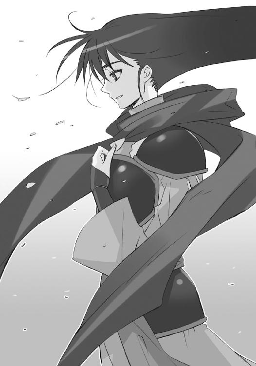

| 灼眼のシャナ 20 | |
| 高橋弥七郎 | |
| KADOKAWA / アスキー・メディアワークス (2013) | |
本書（電子版）に掲載されているコンテンツ（ソフトウェア／プログラム／データ／情報を含む）の著作権およびその他の権利は、すべて株式会社アスキー・メディアワークスおよび正当な権利を有する第三者に帰属しています。
法律の定めがある場合または権利者の明示的な承諾がある場合を除き、これらのコンテンツを複製・転載、改変・編集、翻案・翻訳、放送・出版、公衆送信（送信可能化を含む）・再配信、販売・頒布、貸与等に使用することはできません。
プロローグ
大地の隆起たる巨峰の底、螺旋状に旋回する広い廊下の奥に、そのホールは在った。
鏡のように磨かれた床には、アーク灯の並行電極を思わせるポールが放射状に立ち並んでいる。中心には、人とも犬とも付かない守護魔像が咆哮を上げる体勢で鎮座していた。
今、それらは、眩い輝きに照らされている。
色は、銀。
光源は、自在式。
ホール一杯を占めるほどに膨大、かつ精密微細な、球状の紋様である。
圧倒的な技量と執拗な積み重ねから成る......そう一目で理解させられるこの塊の中、まるで純白の地球儀に鏤められた星のように異色の粒が数千数万、煌いている。
粒、という表現も、巨大すぎる式全体から見てのことで、実際にはその一つ一つが、並の自在師には到底扱いきれないほどに複雑、かつ難解極まる自在式である。
異色は、琥珀。
作業を行っているのは、〝彩飄〟フィレス。
彼女は、ホール中心から僅か離れた場所で、宙に浮かぶ自在式を仰ぎ見ている。
かつて秀麗な容貌に咲き誇っていた朗らかな笑みは、その名残すら見えない。ここに篭もって以来、一歩も動かず、二つの作業に没頭している。
眼前にある、一つ目の作業の方は、今まさに終わりを迎えようとしていた。
彼女の正面至近に浮かぶ楽譜と見える、琥珀色の自在式。
最後の一節たるその端に指を付けると、
「接続」
フィレスは短く命じた。
活性化の証として輝度を増す琥珀に照らされつつ、見上げる視線の中、彼女は予め教わっていた合図を探す。既に何万回と繰り返しても、膨大な量と複雑な構造の中から該当部を探し当てるのには、相当な労力と時間を要した。
微動だにしない彼女を前に、ただ自在式だけが回る。
回って、バラバラに展開し、また元の通りに閉じて、また回る。
この手順が延々繰り返され、やがてと言うには長すぎる時を経て、止まる。
探していたものは、展開された球の奥で絡み合っている、自在式の一点。
微か琥珀に色付くことで存在を示す、蝋燭の先ほどに小さな揺らめき。
見出したそれを、フィレスは見据えて、再び命じる。
「融合」
声を受けた途端、眼前の自在式は弾けて消えた。
代わって、小さな揺らめきが強い琥珀色の炎となって燃え上がり、ゆっくりと周囲へと火の舌を伸ばしてゆく。染料の広がるように、波紋の伝うように。
フィレスは徐に右手を差し出すと、炎の接合部に齟齬や乱調が生じないよう、また予め示された紋様に違わぬよう、細心の注意を払って再構成に取り掛かる。
広がるにつれ、炎は小さくなり、遂には消えた。
（......）
焼け跡に残されたのは、銀の中、新たに改変された一点として混じる、琥珀色の自在式。接合部も、ただ色だけが境目で変わったように自然な形で結びついている。
最後となる、その作業を見上げていたフィレスの顔に、ようやくの表情が生まれていた。
（......間に合った）
一つ目の作業を完遂したことへの満足や安堵、まして喜びなどではない。
愛する者に望まれて、しかし自身は望まない、新たな歩みを進めたことへの悲嘆だった。
（......間に、合ってしまった）
それでもなお彼女は、先の別れに際し託された、膨大な自在法の全体構造図、および改変のための符丁と式を元に、数万回にも及ぶ困難な作業を不眠不休で全うし得た。愛する者への想いの強さゆえに、自らの決して受け入れられないことをも、成し遂げてしまった。
その耐え難い事実に、
（ヨーハン！）
声には出さず絶叫する。
愛する者......宝具『零時迷子』の〝ミステス〟たる『永遠の恋人』ヨーハン。
彼の名を、声という形で具現化させてしまえば、そこから心の防波堤が破れてしまう。己が行為への忌避感を根源とした力、必死に押し止めていた拒絶と反動の力を、彼の身を守るために、彼の望まぬ方向へと暴走させてしまう。
ゆえにフィレスは、強靭な自制心によって声を咽喉の奥へと封じ込め、代わりに苦衷の証として唇を噛み締める。諸々の余計な考えを振り払うために、素早く手を払い、また差し出す。今度は、開いた掌を上にして。
瞬間、ホールから銀色の自在式が消えた。
眩さで満たされていた空間には、数万もの琥珀色の部位だけが残る。
球状に光点の浮かぶ、立体的な天球図は、数秒の滞空を経て、フィレスの掌へと奔った。流星群のような迸りはそこで収束、凝縮されて、蛍ほどの光量の点となる。
全ての自在式が去ったホール中央、守護魔像の前に、
カーン、
と、高く鋭い金属音を上げて、銀色の円盤が落ちた。
床の上をゆるりと回って、すぐ倒れたそれは、銀色の円盤。
物体の組成や構造を解析表示する宝具『ノーメンクラタ』である。
フィレスは、戦いにおいては強大な自在法を振るう〝王〟ではあったが、自在師としての系統立った操作や理解には疎い（二人であれば、自在法を弄ることも楽しんでいたが......）。
そんな彼女にとって、常軌を逸した規模の自在式を表示し続け、また改変に必要な構造の解析と分解を瞬時に行うことのできるこの宝具は、ヨーハンに託された作業を果たすための、必要欠くべからざるピース、だった。
作業の終った今、これはもう、再びこの地に安置される友の形見へと戻っていた。
「ありがとう、ハリエット。助かったわ」
フィレスは言って、悲嘆に微かな笑みを混ぜた。
愛する者の望みを、また一つ果たし得たことに対する感謝の念。
かつてこの地に潜んで百年、世界を見つめ続けた友への親しみ。
それら、微かな中にも、大きな気持ちを表して。
掌に光を浮かべたまま、靴音も硬く『ノーメンクラタ』へと歩み寄り、そっと持ち上げる。
波紋状に重なる同心円の内に、無機的な記号の羅列、という不可思議な装飾の施された円盤には、年月による変容は窺えない。
（最初に見たときのままだ）
とある騒動の後にこれを手渡され、ヨーハンも交えた三人で、取り扱いについて相談し合った日の思い出が、フィレスの脳裏にはっきりと、そして切なく流れてゆく。
（そういえば）
今在る状況との奇妙な符号に、フィレスはふと思い至った。
（ハリエット、貴女と出会ったのも、あの『ヒラルダ』がきっかけだったわね）
ギリシャ十字のペンダント、という形をした宝具。
とある発動条件を持つそれを、フィレスは一人の、人間の少女に託していた。ヨーハンと最後に声を交わし、今行っている作業についての指示を受けた、日本における戦いの後で。
これは、ヨーハンの与り知らぬこと。
フィレスによる、全くの独断だった。
結果、人間の少女が宝具を発動しなければ、フィレスはヨーハンの指示を実行することができなくなっている。というよりフィレスは、そうならなければ動くまい、と決めていた。
ただ実行を、と求めたヨーハンの意思に......そう、ヨーハンの意思に、反している。
そんな、本来ならば在り得ないはずの行動を彼女に取らせているのは、他でもないヨーハンの指示が、彼女には絶対受け入れられないものだったからである。
ゆえに、それを実行させる引き金となる宝具を、人間の少女に託した。
まるで駄々をこねるように、自分にそうさせる世界へと、ハードルを示した。
彼女のヨーハンに対する想いの、それが一つの結論だった。
（せめて、試そう......あのとき以上の奇跡を、見せてくれるかどうかを）
引き金が引かれる時を待たず、奇跡が起きることを望まず、しかし黙々と着々と実行の準備を行い、ヨーハンの意思に沿うよう、可能な限り手を尽くして、彼女は動き続けている。
その証を立てるように、彼女は少し前にも課された以外の、一つ行動に出ていた。
即ち、警戒のためハワイ諸島一帯に薄くたゆたわせていた風の中に、不可視にして気配のない巨大な空白──なにと考えるまでもない、［仮装舞踏会］の移動要塞『星黎殿』だろう──の通過を認め、それを魚や鳥伝いに追跡、中国奥地で停止した座標を、ハリエットの使っていた暗号電文の方式で、外界宿の本部へと送ったのである。
もっとも、結局は創造神の帰還を阻止できなかったらしい。
（奇跡は、より起きにくくなったのだろうか？）
僻地に在る彼女にも、不可解な揺れは届いていた。
感覚のみの、そこに在る物にはなんら影響のない、不可解な揺れだった。
ハワイ諸島の人間社会にパニックは起こっておらず、二つ目の作業に当たっている『風の転輪』を通して見える光景も、同じようなもの（『風の転輪』を宿したフィレスの意識の方は揺さぶられているというのに）。
となると、これは〝紅世〟に関わる者だけに感じられる現象であり、またこれだけの規模の異変を引き起こせる者は一人、もとい一柱しか心当たりがない。
（でも、事態は概ねヨーハンの言った通りになっている）
長きに渡って周到な準備を行った、意気軒昂の大組織による決起、生半な反抗では止め得ないだろう、という彼の予想をなぞるように、事態は推移している。このままではいずれ、彼女も否応なく何らかの変容、あるいは破局に巻き込まれるに違いない。
しかし、それでも〝彩飄〟フィレスは、待つ。
（そう、私はこの地で、起こり得ない奇跡を待つ......それが、貴方を想う私の、せめてもの抵抗......それに、どうせもう一つの作業を終えるまでは、なにもできない）
そんな時など来なければいい、と思いながら。
残った二つ目の作業、『風の転輪』による捜索活動を行いながら。
（創造神が帰還したのなら、時間は、もうそれほど残されていないのだろう）
そして、まるで必然のように、まるで当然のように、
（間に合うのか......いっそ、間に合わなければ、私は──）
因果の濁流は、彼女を破滅的な平穏に、決して耽溺させてはおかない。
彼らは、ほどなく見つかってしまう。
１ 大命宣布
中国南西部、雪雲も吹き払われた深山幽谷の戦場。
白く蒼く光景を染める黎明の元、ほんの数分前まで沸き返っていた、勇躍の喚声と死の怒声、疾走の騒音と激突の轟音、一切全てが、途絶えていた。代わって訪れたものは、場に余剰物を混入させることへの許されざる気持ちと、その表れたる静謐。
相食み切り結んでいた者たちは、皆して頭上を仰いでいた。
清澄の蒼天に威風堂々遊弋する、巨大な蛇身を見るために。
世界に、畏れが満ちていた。
細長く林立する山陰から差す、薄くも鋭い暁光に照らされた雪の野に、［仮装舞踏会］の本拠地たる『星黎殿』が、墜落した巨大な球体を埋めている。
隠蔽の殻『秘匿の聖室』の破損のみならず、内部偉構の損害も甚大な、この移動要塞の一郭、高い尖塔の屋根に座り込み、目を閉じていた男は、
「今、帰ったよ、フェコルー」
上官の呼びかけに、重い瞼を薄く開いた。
眩い夜明けの中に、待ちわびた影が、たしかに三つ。
「......」
要塞司令官〝嵐蹄〟フェコルーは、最後の力を使い果たし、あとは消え行くのみという状況でも、律儀に務めを果たすべく、その奉仕の対象者たる女性に向き直った。
ただし、頭の動きだけで。
もう、体は動かなかった。
ぼやけていた目の焦点が、辛うじて合わされる。
彼の上官として位置づけられる、この世でただ三人の〝紅世の王〟が揃って、見下ろしていた。もはや瀕死という身を助け起こそうとする者はいない。胸に横一文字の深手と、消耗しきった体力、今さらどんな手当ても無駄なことは、一目で分かる。なにより、座り込む彼自身、そんなことを望んではいなかった。
巫女〝頂の座〟ヘカテー。
参謀〝逆理の裁者〟ベルペオル。
将軍〝千変〟シュドナイ。
偉大なる創造神の眷属『三柱臣』は、ただ天を背に、高く尊く強く、聳えていれば良いのである。情篤く膝を突いて介抱するなど、似合わない以上に、あってはならない。
フェコルーは、震える唇に、ようやくの返答を乗せる。
「おかえり、なさいませ」
「捕らえていたはずの炎髪灼眼が『詣道』内に現れた以上、変事は予想していたが......ここまで手ひどくやられているとはね。敵軍との交戦まで起こっているなんて」
これもまさに当然と、彼を気遣うでもない、戦況を確認する参謀の目は、三つあった。
この意味するところは、他にない。
彼らの果たすべき大命、第二段階の完遂。
満ち足りた思いに浸りつつも、フェコルーはまず要塞司令官として、戦場に帰還を迎えることとなった己の不手際──少なくとも、彼はそう考えていた──を詫びる。
「申し訳、ございません......どうやったものか、敵は我らが要塞の位置を、掴んでいたものと、思われます。デカラビア殿も、持てる力を尽くされた末に......戦死を遂げられました」
ベルペオルの右目だけが、取り戻したばかりの不慣れさから、僅かに細められた。自身の作戦を破られたことへの怒りか、歴戦の指揮官たるデカラビアを失ったことへの悼みか......。
他二人は、それぞれ無表情とサングラスの奥に、去来する感情を隠し、無言。
やはり頓着せず、フェコルーは続ける。
「それと関連する、危険が」
最後まで自分の務めを果たさんと、
「おそらく......我らが要塞の内に、かの『天道宮』に通ずる秘密の通路のようなものが、在るはずです。早急に、その捜索をお命じください。敵軍も劣勢となれば、新たな工作員を送り込んでくる可能性が高いかと」
一気に、まくし立てるように言って、
「全軍の指揮権は、現在、ハボリム殿が引き、継いで」
そこまでで息を切らし、おられます、と吐息に混ぜるように小さく結んだ。
ベルペオルは事のあらましを把握し、まったく常のように頷いた。
「分かった、早急に当たらせよう」
振り向き、本来全軍を統べる将軍へと告げる。
「各種の点検が一段落したら、外の方は任せていいね、シュドナイ？」
「ああ、可愛い部下どもの仇だ、蹴散らしてやる。だが──」
薄皮一枚の下に極熱を隠すシュドナイが、言葉だけは軽く返しつつ、背を向けた。
二人の間にいるヘカテーが、フェコルーに投げた視線を翻し、同じく背を向けた。
「まずは、共に迎えましょう。我らが神の──大命宣布を」
広がるマントと零れる声を連れて、手に在る大杖が鋭く天を指す。
三角形の錫杖頭に嵌った、同じく三角形の遊環から、シャーン、と透き通った音色が響き、明るすぎる水色の三角形が無数、周囲へと溢れ落ちてゆく。三角形は床で弾けて小さく、また互いにぶつかってはより小さく、宙へと散りばめられてゆく。
神の言葉を伝える者、巫女の力を宿した水色の三角形は、彼らの在る『星黎殿』を、さらには戦場全体を、そしてその外、ずっとずっと遠くまで、広がってゆく。夜明けの輝きがどこまでも届くように、吹き行く風がどこまでも走るように。
自身に染み渡る力と、同じものが世界を覆ってゆく共感を得ていたフェコルーは、今にして初めて意識を空に遣り、ヘカテーの大杖が指した、明けの空高きに坐すモノを見た。
「お、お──」
瞼を一杯に開き、背を向けた二人と視線を共にして、威容を心に焼き付ける。
この世への還幸成った黒い蛇身、創造神〝祭礼の蛇〟を。
半身だけそちらに向け、もう半身をフェコルーに向けたベルペオルが、長きに渡り副官を務め上げてきた『星黎殿』の守護者に、手向けの言葉を贈る。
「見られる限りは見、聞ける限りは聞いておいで、〝嵐蹄〟フェコルー。我々の成果を」
返事は来ない。
慶びのままに笑った男は、臙脂色の火の粉を散らし、掠れ、消えていた。
三柱臣は身動き一つせず、なにも言わず、古きを送り、新しきを迎える。
天空に遊弋する〟祭礼の蛇〟。
その、下からは窺えない蛇身の頭上に、少年の姿がある。
緋色の凱甲と衣で装い、漆黒の竜尾を後頭に伸ばす代行体・坂井悠二である。彼は、睥睨する世界を覆っていた戦場の火、意外と言うべき騒乱の収まったことに満足していた。長く夢に見てきた大命を宣布する舞台は、静寂のうちに開幕されるのが望ましい。
と、その眼に乱れた前髪がかかる。
「！」
ここに至る旅の途上で、愛しい少女と打ち合った名残だった。額に一撃、辛うじて浅く、という斬撃を受けたのである。既に出血は止まって消え、傷口も跡形なく塞がっている。それまでは上げていた前髪を、もう一度掻き揚げようとして、
「......」
中途で手を止め、逆に掻き毟るように乱した。
かつて一人のフレイムヘイズが、治る傷を残していたことを思い出し、自分も少女との戦いの証を、消え塞がった傷の代わりにでも残したくなったのである。こうして無自覚に、少年・坂井悠二としての己を保ちつつ目を微かに伏せ、
「──」
もう一度顔を上げ、［仮装舞踏会］の盟主、創造神〝祭礼の蛇〟としての己を強くする。眼下に在る誰もが彼を......より正確には、彼を頭上に乗せる巨大な蛇身を、固唾を呑むことすら忘れ、〝徒〟は見惚れるように、フレイムヘイズは呆気に取られて、仰いでいた。
「────」
天地に満ちているものは、畏れ。
彼に注がれているものは、祈り。
真逆の意味をそれぞれ伴う、神に乞い求める想い。
風を孕んで膨らむ帆のように、それらを受けた神たる己が、この天地に占める存在を伸張させてゆくのを〝祭礼の蛇〟は感じていた。
そんな、数千年ぶりの愉悦の中で、創造神としての声を零す。
「──────仰ぎ、見よ」
少年の唇に共鳴する蛇身が、夜明けの冷気を、鈍く深く、震わせた。
見えないほどに小さく無数、舞い上がる水色の三角形が、声を反響させる。
一帯の戦場のみならず、世界中に在る〝紅世の徒〟とフレイムヘイズの耳にまで。
神意を衆に伝えることを役目とする三柱臣の巫女、その為すべき業の一つだった。
また新たな、神の声が響く。
「余こそ神さぶ、奇しき業なり」
改めて名乗る必要はなかった。近くであれ遠くであれ、誰もが、届く声の在る意味を知っていた。彼こそが、人の世の陰で広範熾烈な激突を引き起こした根源だったのだから。
「心の予感を、火と燃やせ」
声を聞く者は、片側が勝利し、片側が敗北したことをも、同時に悟らされる。
「身の戦きを、打ち振るえ」
ゆっくりと喜びを噛み締めるような言葉は、勝者たる側へと向けられていた。
「余と進む者らよ。今こそ機は熟し、思いは改まり、力は満ちた」
武器を下ろした〝紅世の徒〟が、声もなく息を呑む。
「ここに大命の最終段階、かつて阻まれた創造の再来にして、さらなる大業を宣布する」
足を止めたフレイムヘイズの、震える頬を汗が伝う。
「余は、持てる権能に従い、世界を望まれた形へと変革する。即ち──」
世界が、その言葉を待って、止まった。
暁光に照り映える積雪が、一円を輝かす。
輝きを受けてなお黒い蛇身から、声が降る。

「両界の狭間に、この世の写し世──『無何有鏡』を、新たに創造する」
深く、重く、地平の彼方、星の隅々まで、喜びが振り撒かれてゆく。
あまねく渡る大命の宣布、全ての〝徒〟たちへの神託として、今まさに。
「この『無何有鏡』は、汝らの願いそのものの顕現である。
ゆえに、この『無何有鏡』の全ては、汝らのために在る。
ゆえに、この『無何有鏡』は、汝らを寛容に受け入れる」
直下の雪原北辺に埋れる『星黎殿』、もはや一人が去り、彼ら三柱臣が在るのみとなった高い尖塔の屋根で、巫女〝頂の座〟ヘカテーが端然と、参謀〝逆理の裁者〟ベルペオルが悠然と、将軍〝千変〟シュドナイが傲然と、眷属たる身の仕える創造神の声に耳を傾ける。
「どこまでもこの世と同じ形、広がり、命を宿す、一個の世界。
尽きることのない〝存在の力〟に溢れる、汝らのための楽園。
かつても、余は望まれ、この雛形とも言うべき創造に挑んだ」
雪原の南方、山間部に築かれたフレイムヘイズ兵団の出城で、総司令官『震威の結い手』ゾフィー・サバリッシュと〝払の雷剣〟タケミカヅチ、副官『姿影の派し手』フランソワ・オーリックと〝布置の霊泉〟グローガッハ、客員『皓露の請い手』センターヒルと〝殊寵の鼓〟トラロックが、彼らの決定的な敗北を示す光景に立ち尽くす。
「古きは知る者もあろう、其が都の名を。
百二十九の城邑、四の平原、そこに在ったモノ全てを、周辺より狩り集めた供犠の〝存在の力〟に拠りて包み固め、解けぬよう硬く縒り合わせた、循環する一個の、独立した封界。
未だ世に疎らな人間を探さずとも、喰らう手間を費やさずとも、己が技量のまま業を振るい得る、また生じた歪みの波及をも囲いの内の総和として保つ、原初における欲望の顕現。
故に、其が都の名を『大縛鎖』という」
雪原の中央、広く楝色に燃えていた自在法『熒燎原』を、神託の雑音として鎮火させた、外界宿征討軍総司令官〝煬煽〟ハボリムが、率いる〝徒〟の軍勢とともに静粛の体で、彼らの決定的な勝利を示す言葉を、これぞ栄誉そのものと受け取る。
「いま一つ、知る者もあろう、其が計図は頓挫した。
余は、余自身が引き入れた討ち手らの発動させた、秘法『久遠の陥穽』によって両界の狭間へと追い遣られ、数千の年月、あの彼方とも、この此方とも付かぬ虚空を彷徨った」
雪原の東端、攻め手の〝徒〟が一斉に距離を取ったことにより、荒野に放置される形となった保塁の内で、『犀渠の護り手』ザムエル・デマンティウスと〝吾鱗の泰盾〟ジルニトラが、呆然と空を仰ぐ戦友らの様に敗勢の兆しを見て取り、密かに顔を強張らせる。
「だが、彷徨う中で、余は気付いた。
真に新たな天則を創造すべき場所が、何処であるのかを。
即ち、余が逐われ彷徨った、無数の者らが渡り飲み込まれた──両界の狭間にこそ。
新たな天則の創造を、如何なる形によって為すべきかを。
即ち、この世に小さな領域を封じ固めるのではない──無窮の天地全てを象ること」
雪原の北部、墜ちた『星黎殿』前面に集結する、討ち減らされた守備隊の残兵ら、さらには広く、南北から戦場へと到達しつつある援軍の〝徒〟らも、駆ける足を今一時と止め、陶然と空を仰ぐ。そして『星黎殿』の奥から、一人〝屍拾い〟ラミーが神を冷徹に窺う。
「それこそが、この世の写し世たる──『無何有鏡』なり。
どこまでもこの世と同じ形、広がり、命を宿す、一個の世界。
尽きることのない〝存在の力〟に溢れる、汝らのための楽園。
かつてを経、また望まれ、余は新たなる創造の大命へと挑む」
空中、砕け散った『神門』の空域に在る『炎髪灼眼の討ち手』シャナと〝天壌の劫火〟アラストール、『万条の仕手』ヴィルへルミナ・カルメルと〝夢幻の冠帯〟ティアマトー、『儀装の駆り手』カムシンと〝不抜の尖嶺〟ベヘモット、『輝爍の撒き手』レベッカ・リードと〝糜砕の裂眥〟バラル、および周囲に入り乱れる両軍の空中部隊が、至近に神を見る。
「今こそ、汝らの求めを、創造神として叶えんがために──!!」
宣布が終わって、数十秒。
未だ、歓声は上がらない。
どころか、止まっている。
誰一人、動けないでいた。
近くに在る者は、自ら口火を切ることの躊躇に固まる。
遠くに在る者は、宣布の終わったことを知る由がない。
この静寂の中、
（まさに今、余が世界を動かしている）
という実感に微か、打ち震えた悠二は、恐れず、怯まず、再び発する。
「── さあ ──」
という、誘い水たる神の声を。
「一歩を踏み出そうではないか、同胞よ」
命令ではない、呼びかけを。
「己が心の求めるまま、駆け出すがよい」
促された者らは動き出す。
「神なる余は、その希求をこそ言祝ごう」
誰からともなく、
「── さあ!! ──」
地に一歩を踏み、空で目を巡らせ、
熱狂の迸るまま、行動の堰を切る、
彼ら〝紅世の徒〟の間から、ようやくの歓声が一斉に爆発した。
帰還した真の神への尊崇、あまりに壮大な創造への感激、齎されることが決まった楽園への喜悦が、彼らを衝き動かす。新しい世界の扉を開ける、仕上げとなる戦いへ。
地で一歩を下げ、空で目を惑わし、
熱狂に晒され、躍動を受け止めた、
彼らフレイムヘイズは、勇戦の意気を失い陣列を一斉に崩した。
出現した真の神への畏怖、あまりに巨大な創造への動揺、齎されてしまうだろう激変への惑乱が、彼らに度を失わせる。秩序の守護者として、方途を失った世界の中で。
勝敗の帰趨が、決した瞬間だった。
主戦場となった山間に広がる平野部。
その一帯における、両軍の拠点は三つあった。
即ち──北辺に墜落し無残な破損の様を覗かせる［仮装舞踏会］の本拠地・移動要塞『星黎殿』──東端に即席で設けられた、フレイムヘイズの一軍が立て篭もる孤塁──南部の山間に残された、同じくフレイムヘイズの後方基地となっていた出城──である。
「偉大なる創造神〝祭礼の蛇〟万歳!!」「［仮装舞踏会］に栄光あれ!!」「新世界『無何有鏡』を我らの手に!!」「俺たちの楽園、俺たちの理想、俺たちの、俺たちのための!!」
両軍における、主要な指揮官は三人いた。
即ち──平野部に展開した〝徒〟全軍を率いるハボリム──保塁で必死の防戦を行っているザムエル──出城において残兵を叱咤している総司令官ゾフィー──である。
「あんなの、あんなの阻めんのかよ!!」「ど、どうすれば、どうすればいいの!?」「ああ、負けちまったのか......俺たちは」「駄目だ、やべえよ、なんとかしねえと、死んじまう」
ここに至る戦局の推移は、凡そ三段階を経ていた。
即ち──『星黎殿』を目指すフレイムヘイズ兵団の進攻と［仮装舞踏会］の阻止攻撃──激突の場を移した平野部への、予想外な『星黎殿』の墜落──『星黎殿』守備隊の崩れを突いて総攻撃に出た兵団に対する、ハボリムの援軍による西からの横撃──である。
「ひゃーっははははは!!」「ぎゃあっ!!」「死ね、死ね、死ね、死ね死ね死ね死ね！」「ぐうう、ちくしょおお!!」「これまでだなあ、道具ども!!」「知るかよ人喰いがああー!!」
この戦いにおける両軍の目的は、ともに二つあった。
即ち──［仮装舞踏会］側が、創造神〝祭礼の蛇〟の帰還まで、出口たる『神門』と、重要施設の満載された本拠地『星黎殿』を守ること。フレイムヘイズ兵団側は、同じく創造神の討滅ないし帰還の阻止、また同じく本拠地の占拠ないし破壊だった。創造神帰還により前者は完全に達成され、援軍到来により後者も決した。［仮装舞踏会］の完全勝利という形で。
「このまま死ねるかよ!!」「いいや、死ぬんだよ！」「まだだ、まだ......なにか！」「なにができるってんだ!?」「あ、諦めるな、撤退だ、撤退しろ！」「クハハ、させるかよ！」
そうして今、
帰還した創造神と三柱臣は、戦いに乗り込むこともなく、静観の構えを取っている。自分たちが出るまでもない、と言わんばかりの態度であり、また実際その通りでもあった。
さらには、この帰還と呼応するかのように、南北から［仮装舞踏会］の新たな援軍が迫り、敵中に孤立する形となったフレイムヘイズ兵団を、遠巻きに押し包む動きを見せている。
情勢は、ただ勝敗が決したことに止まらない。
フレイムヘイズ兵団は、今や包囲殲滅の危機に瀕していた。
これら状況を、シャナとアラストールが見下ろしている。
（それが、悠二の......それとも、〝祭礼の蛇〟の......？）
（やはり、またも、世界の在り様に手を伸ばすか......しかも今度は、両界の狭間だと？）
かつて〝祭礼の蛇〟を追いやった両界の狭間への入り口『神門』が浮かんでいた場所、その帰還に伴い砕けて消えた虚ろの空から、ヴィルヘルミナ、カムシン、レベッカらと共に。流石に一騎当千の強者たる一同には──少なくともシャナの見た限りでは──大命の宣布にも動じた様子はない。
しかし、平野部各所に突出していた少数部隊、あるいは単独で切り込んでいた幾十人の討ち手らの方は、慌てて逃げに転じたことで、押し出してくる大軍に次々と揉み潰されている。ほとんど戦いらしい戦いにもなっていなかった。
創造神の大命宣布によって天井知らずの士気を得、再び楝色に燃え上がったハボリムの『熒燎原』によって強化までされた〝徒〟らの勢いは、文字通り止まるところを知らない。
無秩序に逃げ散っても無駄死にするだけ、と最低限の才知を働かせる精鋭たちは、追い討ちの犠牲を厭わず、戦場に残された縁、ゾフィーとザムエルの両防御拠点に向かっている。
負け戦の、情景だった。
（やられた）
そう、心から思うシャナら四人にして八人は、フレイムヘイズ兵団の作戦について詳しく知らされ、またその一部として動いてもいる。眼下の拭い難い敗勢を、容易に察することができた。現状が、自分たちの受け持った創造神帰還阻止の失敗によって齎されたことも。
しかしシャナ当人は後悔や落胆という、無駄な感情に捉われてはいなかった。大命について知らされたことによる動揺や惑乱に襲われてもいなかった。今はただ可能なことを実行する、骨の髄からのフレイムヘイズとして、己が為すべきことを検討する。
「この場での挽回は、無理かな」
「うむ、彼奴らのみならず、三柱臣も帯同している以上、無理押しはできまい。どういう理由か、即座の参戦はないようだが......いずれにせよ今すぐは、なにもかもが、無理だ」
その胸に下がる、黒い宝石に金の輪を意匠したペンダント型の宝具〝コキュートス〟から、アラストールが断言した。
紅蓮に煌く灼眼が、小さく頷きつつ、彼奴ら──空にのたうつ黒い蛇身と、その頭上に佇立する少年──に据えられる。今すぐにでも立ち向かいたい、自身の望みに全てを賭けたい、という熱い上にも熱く心身を焼き焦がす欲求を、
（でも、もう『詣道』を出てしまった......今、挑みかかっても倒すことはできない）
本能のように身に付いた理性が、それ以上の力で押さえつける。
（戦場に在る無数の〝徒〟らが、色めき立って悠二とあいつを守り、戦うだろう）
苦い事実を、良し悪しどちらにも拡大解釈せず捉え、答えを導き出した。
（その中じゃ、なにもかも、無理......だから今、やるべきこと、できることは）
ここに在る誰に尋ねるのが最良か、半秒の思考を経て、彼女は最古のフレイムヘイズへと顔を振り向ける。
「『儀装の駆り手』」
状況の凄絶さにか、らしくもなく声を失っていたカムシンが、
「......ああ、なんでしょう」
頭を僅か跳ね上げ、我に返った。巌のような彼にも、内心密かに思うところがあるらしい。
シャナは気付かぬ振りをして構わず問いかける。
「私は一定の学問は修めたけど、実践は未経験だから勘所は習得できていない。撤退戦について、心がけるべき要諦、まず為すべき行動、その二つを教えて欲しい」
「ふむ、見込んでもらえて嬉しい限りじゃの。とはいえ......」
カムシンの手に絡んだ飾り紐型の神器〝サービア〟から、ベヘモットが呟きを漏らした。
問いかけの中で、シャナの意図が〝祭礼の蛇〟および坂井悠二との戦闘続行ではなく、フレイムヘイズ兵団の撤退援護にあることが、明確に示されている。たしかに、現状でそれ以外の選択肢は採りようもない。
が、それでも古強者たる〝紅世の王〟は、
（あれだけの想いを抱いてなお、眼前の標的に拘泥せぬとはの）
と、これまでの経緯から密かに再評価する。
傍らに在るヴィルヘルミナが、
「つまりは『引潮』作戦の実行、でありますか」
「撤兵無念」
その仮面となっている神器〝ペルソナ〟から声を放るティアマトーとともに、確認した。
同じく傍ら、レベッカが口を尖らせる。
「ちっ、ここまで仕損じたのを悔しく思ったことはねえな」
「なあに、単に戦いと言うのなら、ここからだって歯応えでは負けていないさ」
後を受け、その胸の前に開いて浮かぶ、目を意匠したブレスレット型の神器〝クルワッハ〟から、バラルが対象的にのんびりと答えた。
彼女らの言う間に、カムシンとベヘモットは、
「ああ、実際どう指南したものでしょうね」
「ふむ、これほど大規模の撤退戦は、史上にも例がないでな」
声を交わしつつ脳裏を探る。彼ら『儀装の駆り手』の長きに渡る戦歴が、未曾有の事象を前にしつつも共通項を見つけ、常識的かつ簡潔な回答を導き出した。
まずカムシンが言い、
「ああ、先の大命なるものを、まともに受け止め、考えてしまったことが、この崩れを引き起こしてしまったわけですから......要諦としては、士気の回復と統率の維持。即ち、動揺するフレイムヘイズたちに、せめて今くらいは保てると感じさせること。次いで、彼らに余計なことを考えさせず、明確な戦術目標を与えて動かすこと。この二つになるでしょう」
ベヘモットが続ける。
「ふむ、急ぎ為すべきは、兵団が致命的な打撃を受ける前に、ゾフィー・サバリッシュ総司令官の元に辿り着き、援護のための具体的な方策を図ること、じゃろうな」
シャナは助言を胸に刻むように、しっかりと頷き、
「分かった。ゾフィー・サバリッシュはどこかな」
「戦場に紫電は見えぬな。となると、いずこかに陣を敷いていると見るべきか」
アラストールの言葉から、状況の整理と事態の打開を兼ねる方策を見出した。
「じゃあ、まず戦う」
語り合う、ほんの二分足らずの間に、彼女らも戦場の一部になろうとしている。
劣勢に陥るフレイムヘイズの空中部隊と交戦していた〝徒〟の部隊が、その一部を彼女らへも差し向けていた。死力を振り絞る戦場ゆえに人型を取らない、本性ままの怪物と見える群れが数十、爪牙を武器を炎を先に立てて、たった四匹の獲物へと襲い掛かる。
シャナは一旦、ゆるりと灼眼を閉じ、
「そうすれば、私たちの戦いを見つけたゾフィー・サバリッシュの方から、何らかの連絡を取ってくるはず。近隣の、崩れた味方の目を覚まさせるためにも......全力で行く」
言って再び、力の奔出とともに見開いた。
灼眼に呼応して、光背のように燃える一つ目『審判』が見開いた。靡く炎髪からは火の粉以上の炎が溢れ、紅蓮の双翼が火勢を増して広がり、手にある大太刀『贄殿遮那』が凝縮された炎を薄くも熱く纏う。
その豪奢に燃える様に、レベッカは口笛を吹いて囃した。
「ひゅう、俺たちの方が熱に当てられそうだな」
「まず戦う──か。いいねえ、実にフレイムヘイズらしい」
笑うバラル、その神器の周囲に桃色の火花が散って、一つ一つが強力な爆弾という光球が三十ばかり、瞬時に構成される。浮かんで揺れる輝きは、発射の前触れのように凝縮した。
レベッカは自然に、シャナへと許可を求める。
「目ぇ覚まさせるってんなら、俺が初っ端にでかいの打ち上げてやる。いいよな？」
「うん」
その遣り取りの末尾に被って、待ちきれないように微震動しつつ滞空していた光球が、迫る〝徒〟の一隊へと奔った。迎撃に飛ばされた、それこそ百にも余る色とりどりの炎弾を、まるで曲芸のようにかわしかわして懐に入り込み、
「弾けろ！」
作り手の一声で起爆する。
通常の炎弾など比べ物にならない、強烈な爆炎が膨れ上がった。迎撃に飛ばしたはずの炎弾すら巻き込んで、宙に様々な色を混ぜた極彩色の輝きが、まさに見せ付けるように咲き誇る。
が、無論〝徒〟の側も、されるがままにはなっていない。粉々に消し飛んだ先陣の残り火を越え、未だ燃え盛る爆炎を突き破って、次なる影が幾つも飛びかからんとする。
と、その剣尖、突き出された腕、あるいは足に翼に、
「余り者の始末を任せてよいでありますか、『儀装の駆り手』？」
ヴィルヘルミナの伸ばした無数のリボンが、軽く絡みついた。
「役割分担」
ティアマトーが声を付け足す間に、飛びかかった〝徒〟らは、羽毛の触れる程度の力で次々と飛行のベクトルを狂わされ、異常な高速回転をもって吹っ飛ばされている。爪牙を振るう者は互いを突き刺し、剣を持つ者は周囲を切り付けして、次々と脱落してゆく。
これら信じ難い同士討ちをも超えた巨大な長虫が、
「ああ、纏う物のない空中での戦いは不得手なのですが」
カムシンの投擲した鉄棒『メケスト』で粉砕された。棒の下端からは、褐色の炎が綱のように伸びて、その制御を受けている。長大な鎖分銅とも見える重量は奔放自在に振り回され、新たに一つ目の鳥の胸をぶち抜いた。その体は飛散せず、
「ふむ、場合が場合、贅沢も言ってはおれまい」
ベヘモットの声を合図としてか、褐色の自在式を体表に点す。釘を刺された人形が振り回されるかの如く、鳥はその場でクルリと半回転し、続いて炎の中から飛び出した双頭の鮫に飛びかかって、自爆した。
褐色の炎に引かれた鉄棒だけが、カムシンの元に戻ってくる。
それら派手な戦いぶりを見て、共に空中に在ったフレイムヘイズの部隊は、ややの活気と勇気を取り戻し、続いて遠く、待っていた本命たる合図、
（──）
信号弾のような紫電が一閃、打ち上げられた。
（──来た！）
三人の戦っている空域より、やや高く。戦況を把握するため上昇していたシャナの後背に燃える『審判』が、これを目敏く発見する。
「アラストール、ゾフィー・サバリッシュ自身が来ないのは......」
「うむ。手の離せぬ激闘の中にあるか、力を消耗しているか、それとも、その両方か」
ともあれ、目的地は決まった。
シャナは周囲の空中部隊同士の戦いを見渡し、
「状況が分からないから、今の時点で彼らは動かせない。でもせめて、行く前に」
またシャナは再び『審判』で［仮装舞踏会］の空中部隊を注視、その内訳を探る。数秒とかからず、力の大きさ、命令を受けて整然と動く一団の中心、命令が動きとして実動する時間差から、指揮官を特定した。この座標と攻撃の射程、ヴィルヘルミナらとの交差点、および地上の戦いまで視野に入れて、進入角を割り出すや、
「可能な限り、士気を回復させておく」
紅蓮の双翼の火勢を上げて、飛び込むような降下に入る。
これに気付き、三人のフレイムヘイズらは敵との距離を取った。
すれ違い様、
「合流する!!」
シャナは一声かけると、体を縦に返して飛び蹴りの姿勢を取る。そうして一瞬、
「──っはああああああ!!」
溜めた力を蹴りに乗せて放った。踵から溢れた炎を媒介に、巨大な魔神の足が顕現する。双翼の噴射による降下に加え、顕現の伸張をも加えた猛烈な速度は、打撃力の塊となって［仮装舞踏会］空中部隊中枢を、全く唐突に押し潰した。
「な」「ぅわ!?」「──っえ」
叫びすら満足にあげることも許されず、部隊の指揮官たる蛇を纏った騎士〝匣迅駕〟バティンは、周囲の〝徒〟諸共、即死した。
魔神の足は、なおも降下とともに顕現を続けて伸び、平野部の戦場で攻勢に出ていた［仮装舞踏会］先鋒を一帯の雪原ごと、思い切り踏み砕いた。地上から見ると、紅蓮に燃える魔神の足が一本、天から降ってきた、という異常事態である。
泡を食った［仮装舞踏会］は思わず進撃の足を止め、
「な、なにが起きた？」「今のは一体!?」「畜生め、部隊の真ん中がごっそりやられた！」
崩れ立っていたフレイムヘイズ兵団は貴重な退避の時を得た。
「どうなってる」「助けて、くれたのか？」「今の内に下がれ!!」「あの色、紅蓮だ......」
彼我の度肝を抜いた当の足は、一瞬、踏み切るように曲がって、火の粉と散り果てた。
上空、三人のフレイムヘイズを連れたシャナが、ゾフィーの待つ南方の出城へと飛ぶ。
魔神の足による地響きが収まると、戦場の喧騒は飽かず立ち上り始めた。
悠二は、既視感を抱く足の出現と一撃を見て、
（なんとも、派手なことだ）
宣布を終えた心地よい達成感の中、小さく苦笑する。あの紅蓮の煌きを追いかけ、彼女を再び捕らえることの誘惑を、それができないという前提の中で弄び、愉しんだ。
数千年の時を超え再構成したばかりの神体は、実のところ帰還のための『詣道』踏破という強行軍や、両界の境たる『神門』を潜るという冒険で、微妙な軋みを上げている。復活早々酷使しすぎた巨体は、現状では見た目ほど絶大でも磐石でもない。備えを万全にすることはできても、結果を完璧にすることは、大命遂行に限らず難しいものなのだった。
無論、これら内情を馬鹿正直に晒してやるほど、悠二はお人よしではない。むしろ、
（煽れるだけ煽って、逃げるよう仕向けた......後は〝千変〟が追い立てるだろう）
などと、あくまで冷徹に、現状を利用して優位に結び付けることだけを考えている。
そのシュドナイを含む三柱臣が、大命宣布の終了後、即座に追撃に掛かっていないのも、帰還早々山積みになっていた諸任務を『星黎殿』内で行っているためである。
ヘカテーは、岩塊部深奥の秘匿区画に据えられた『吟詠炉』で、そこに納められた『大命詩篇』のバックアップを使い、この世界における神体顕現の安定化を図っている。
『教授』こと〝探耽求究〟ダンタリオンは、助手の〝燐子〟『我学の結晶エクセレント28─カンターテ・ドミノ』とともに、潜入と攻撃を受けた内部施設を点検している。
ベルペオルは、岩塊部中心に位置する司令室『祀竃閣』で、それら双方の作業、および全軍の行動を監督しつつ、フェコルーの遺言となった侵入路の捜索を進めている。
シュドナイは、要塞守備兵と直衛軍の再編成を部下らに任せると、至近に在る北方からの援軍を待つ間、敵残党の潜伏や新たな侵入者がないか、要塞内を巡回している。
彼らの立ち働く様に、思わず労いの苦笑が漏れた。
（あっちもこっちも大忙し......当面やるべきことがないのは、余だけか）
実際、創造神の神体と代行体だけが、この大戦も大詰めという最中、その場を動いてはならない、という立場に置かれている。
不満、というほどではなかったが、不足、ではあった。
それらへと、軽く思いを致す傍ら
（まあ、動けないのなら、動けないなりに）
創造神〝祭礼の蛇〟としてではなく、
（より戦況をこちらに傾けるための駄目押しでも、しておこうかな）
少年・坂井悠二として、一計を案じる。
そして、
彼の与り知らぬ場所......『星黎殿』の奥から、
（なるほど）
ヘカテーや教授らの作業によって、当面の暇を得たもう一人、
（これが〝祭礼の蛇〟、実物の構成、か......）
ラミーが、その場にある他者とは明らかに異質な、畏怖や信奉の類では決してない視線を、巨大な神体へと注いでいた。
雪原を取り巻いて、広く険しく林立する、太い柱状の岩峰群。
その雪原から程近い南方、まるで水墨画のような景色の中に、明らかな異物として、西洋式の城が聳えている。一見して堅固と分かる、箱型をした石造りのそれは、フレイムヘイズ兵団に残された二つの防御拠点の一つ。総司令官『震威の結い手』ゾフィー・サバリッシュを守将とする、南方の出城だった。
今、その分厚くも高い胸壁は、猛烈な戦火によって焼かれ叩かれしている。攻撃を受けているのは、平野部に向いた北面ではない。その反対側......つまり、攻めかかっているのは、遂に南方から姿を現した［仮装舞踏会］援軍の先遣隊なのだった。
彼らは、今も北上を続けている本隊の露払いゆえに多勢ではなく、主戦場から外れているため『熒燎原』の加護も受けていないが、大命の宣布および圧倒的な勝ち戦という状況下、尋常ならぬ戦意に総員が沸き立っている。
後先考えず城壁へと取りすがってくる〝徒〟の中には、勢いだけで城壁の上に辿り着く者まで在り、守備するフレイムヘイズらはその猛攻への対処に血眼となっていた。一面、この猛攻には、討ち手らを我に返らせ、生に執着する戦いに貼りつかせる結果も生んでいる。
大命ゆえに猛った〝徒〟が、大命によって呆けたフレイムヘイズを覚ます、という複雑にして喜劇的な流れは、一見して普通の激闘、という段階に一先ずは落ち着いていた。
その、細かく震える分厚い城壁の内部、やや広い間取りの部屋で、シャナら四人は再会の挨拶もそこそこに、フレイムヘイズ兵団司令部との作戦会議を行っている。
「戦況の大方は、把握していますね？」
司令部の側は、壁面に設えられた石組の長椅子にゾフィーが座り、その傍らにフランソワが立ち、やや離れた壁際にセンターヒルが壁に背をもたせ掛けていた。
「不利......というには、聊か敗色が濃すぎるようでありますな」
対する来訪者の側は、作戦決行の前から詳細な協議を行っていたヴィルヘルミナがゾフィーの前、その左右にシャナとカムシンが立つ形で、レベッカは別の長椅子に寝転んでいる。
誰も、宣布された大命について議論を戦わせたりはしない。
悠長にそうさせてくれるだけの時間がない、という状況以上に、宣布された大命の、あまりに度外れた気宇を、己の立場でどう受け止めるべきか、フレイムヘイズだけでなく、その内に在る〝王〟らも含めて全員、俄かには結論を出せずにいるのだった。考えるのも感じるのも後のこと、まずは反応そのものを保留しておかなければ、当惑で心身が鈍ってしまう。
ゆえに今は優先すべき事柄、当面生き残るための方策を立てることに専念していた。
椅子に座ったままのゾフィーが、場にそぐわない修道服の肩を竦めて見せる。
「ええ。お互い不甲斐ないことですね。もう撤退するしか手がないなんて」
この態度は、決して偉ぶっているわけではない。おどける様を装う彼女は、一時たりと気も力も抜けない長期戦で消耗しきっており、せめてと座って体力の回復に努めているのである。椅子にもたれかかる姿勢、笑みを浮かべる顔、いずれにもそれが色濃く表れていた。
そんな契約者を、ヴェールの額に刺繍された青い星型の神器〝ドンナー〟から、タケミカヅチが殊更に取り澄ました声で嗜める。
「最良の方策であれば、不甲斐なかろうと行うのみ。今さらの議論ですぞ」
この叱咤は、負け戦であれ確固とした行動を求めることで契約者に心身の張りを保たせようという、彼なりの気遣いだった。
そんな彼女の労苦を少しでも和らげようと、熱い飲み物（シャナ判断するところによると熱いココア）を入れていたフランソワが、来援へとすまなさそうに頭を下げる。
「苦戦の中、ご足労頂いて申し訳ありません。せめて雪が降っていれば、空中であっても遠話を無理矢理に繋げたんですが」
「いいじゃない、おかげで当代の炎髪灼眼にも面会できたし。見たわよー、さっきの蹴り。マティルダとはまた違う、強烈な一撃ね」
彼の背負った壺型の神器〝スプレット〟から、グローガッハが場を和ませるためか、単に素からの興味か、明るく誉めそやした。
一同、各々の大きさと色合いによる微苦笑が起きる。
司令部の面々は、追い詰められた戦況下にあってなお、シャナら四人の〝祭礼の蛇〟帰還阻止失敗を一切責めない。そんな雰囲気の欠片さえ見せない。
彼女らの側も同様に、これまでにない大規模な仕掛けで敢行した『星黎殿』攻略をしくじっていた、ということもあるが、なによりフレイムヘイズというのは──お世辞にも勇敢とは言えないフランソワでさえ──今現在への対処をこそ重んじる性質だったからである。終わったことへの恨み言や弾劾で、さらなる苦難を共に踏破せねばならない状況を、自ら不利にするような愚を、誰も犯したりはしない。
そんな現実への対処を、一人の男が別の、より直接的な形で示す。
笑いの輪から外れていた兵団の同行者・センターヒルが、
「それで──撤退と一口に言っても、今の苦しい戦況と少ない員数では、簡単に実行できるとも思えないのですが」
穏やかな声色ながら、断固とした言葉で話を戻したのである。
彼の腰から下がる角ばったメダル型の神器〝テオトル〟から、トラロックも促す。
「なにか、腹案があるのでしょう？」
彼の涼やかな声色にも契約者同様、戦意の欠片が、風に混じる硝煙のように臭っていた。
空気が引き締まり、各人の顔も戦士の本分を取り戻す。
元より、彼女らがこの危急の折にわざわざ顔を突き合わせているのは、旧交を温め合おうという暢気な理由からではない。撤退するにせよ、戦局の認識と行動の方針を互いに諮って、共通認識にしておく必要があるためだった。
（でも、それをまさか、このお二方に指摘されるなんてね）
ゾフィーは密かに、声なき声でパートナーに語る。
彼らが見せた小さな変化は、今戦場に在る兵団のみならず、フレイムヘイズ陣営そのものにとって、極めて重要な出来事だった。
この、魁偉な容貌と頑健な体躯を持ちつつも、温和な雰囲気を漂わせる初老の男は、フレイムヘイズの中でも極めて特殊な立ち位置にいる『大地の四神』の一人である。
かつてというほどでもない、二百年足らずの昔、誰にも非難し得ない正義によって人類社会へと牙を剥きながら、已むに已まれぬ事情から矛を収めざるを得なくなった彼ら、強力な四人の討ち手らは、あらゆる戦いへの意欲を失っているはずだった。
この［仮装舞踏会］との未曾有の戦いへも、本来であれば助力ではなく、見定めるために同行しているだけである。
フレイムヘイズ『皓露の請い手』センターヒル......自らを、神たる〝紅世の王〟の神官、と捉えている『雨と渉り行く男』は、参戦に際して、こう言った。
（──「私たちは思ったのです。神として契約し、悪霊として跋扈する〝紅世の徒〟たちは、太古より共に、同じ世界を形作ってきた、摂理の一部なのではないか、と」──「だから私は、あの〝紅世の徒〟の中で『神』を冠する者が、なにを為そうとしているのかを見定めにきたのです。あの『神』が、世界の摂理を変えるというのなら、なおさら確と」──）
下手をすると〝祭礼の蛇〟の行いをも容認しかねない、平明に過ぎる彼らの観念を思い返しつつ、タケミカヅチも同じく声なき声で答える。
（彼らの見地から、ある程度の......少なくとも当面は、我々にとって有り難い結論が出た、ということですかな？）
彼らに変化を起こさしめた原因は明白である。
一つは、今まで感じたことのない、不可解な世界の震動。
個々の身に起きた異常はあまりに大きく、しかしこの世には影響らしい影響がない、奇怪極まる現象。その根源的な不安が、危機感を呼び起こしたのか。
もう一つは、言うまでもない、創造神〝祭礼の蛇〟による大命宣布。
世界の仕組みそのものを変革するという、常識外れながら実現可能な宣言。その変革自体を禁忌と見たのか、あるいは変革の在り様に異議があるのか。
いずれについても、彼ら自身が内心を明かしていないため断定はできないが、面にそれが覗いてしまうほどに、戦意の火が点っているのは確かだった。
そんな、同行者の声色が変わっただけという、しかし彼女ら共闘者にとっては大きな出来事に、思わずゾフィーは期待を抱いてしまう。
（彼らがこうなったのなら、他の三人の参戦も期待できるかしら？）
（さてはて、いずれにせよ、目の前の戦いを乗り切ってからの話ですな）
総司令官としての先走りを、タケミカヅチが軽く制した。
（そうですね、詳しく尋ねるのは後でもできること......まず、今は）
ゾフィーも密かに苦笑して、数秒の遣り取りを切り上げる。
「ええ、もちろん。万が一の事態に備えて、ちゃんと用意されています。撤退作戦、名は『引潮』。その実施についての詳細は......」
言って、来訪者たる四人を見た。
ヴィルヘルミナが頷いて、説明の後を接ぐ。
「事前の配置は、所定の計画通りに完了しているのであります」
僅か、傍らのシャナに目を遣り、
「我々は『炎髪灼眼の討ち手』との合流直後に『神門』へと突入したため、残してきた抜け道がどうなったかは未確認でありますが、向こう側に仕掛けた時限爆弾で、既に通行は遮断できているはず。後は、いかにして辿り着かせるか、であります。いずれにせよ──」
続いて一同へと、喝を入れるように強く結ぶ。
「目指すは『天道宮』を隠した、東」
誰もが声ではなく、気迫の充溢で答えた。
この撤退作戦『引潮』の趣旨は、戦況の不利に際しての退路確保を図る......もっと直接的に言えば、危なくなった時にどうやって逃げるか、という予防措置である。
使わなければそれに越したことのなかった、しかし今や縋るべき最後の命綱となった、この作戦は、一つの事情から、シャナ救出のそれと密接に関連している。
つまり両作戦が、ほんの数年前までヴィルヘルミナやティアマトー、アラストール、シャナらが住まいとしていた移動城砦『天道宮』......［仮装舞踏会］の移動要塞『星黎殿』と対で建造された、この世で最大級とされる宝具の利用に基づいている、ということである。
これら本来の用途は、憩うべき隠居所としての、常に陽の光に溢れる庭園と聖堂、道楽の美術館としての、常に星空の広がる楼閣と回廊、というものだった。そして、人間をも招く用途上の配慮から、双方には互いを往き来するための近距離転移用通路が設けられていた。
ヴィルヘルミナは、両宝具が所持する勢力を違えた際、双方にとっての危険要素として壊されたそれを修復し、『星黎殿』への侵入口として使ったのだった。
これらの建造者たる〝紅世の王〟が『星黎殿』を［仮装舞踏会］へと譲渡した時点で、既に通路は壊された後だったこともあり、ベルペオル以下誰も、この侵入路の存在を感知しようがなかった、という経緯を活用したのである。
また、この救出作戦は同時に、気配を遮断し視覚を眩ます隠蔽の殻『秘匿の聖室』に守られた移動城砦を、いざというとき全軍を避難させるためのシェルターとして、戦場の近辺に配置する作業も兼ねている。つまり『引潮』とは、フレイムヘイズ兵団の残兵を、この『天道宮』へと収容し、戦線を離脱する作戦なのだった。
言葉にすると単純で、実行するには困難極まりない。
無論、その困難を可能な限り実現に近づけるため（『星黎殿』攻略等、あらゆる作戦が完遂されても膨大な敵中で孤立することに変わりはなく、ゆえに各種の撤退作戦は必要不可欠なものではあった）、事前に様々な方策が取られている。
全戦域を使った助攻、東への退路確保を目的とする遅滞戦術も、その一つだった。
フレイムヘイズ陣営は、この［仮装舞踏会］との全面戦争を、『星黎殿』の位置する中国西南部を基準に、東西に戦線を張る形で行っている。日本から東南アジア諸地域までを東部防衛線、ルーマニアを中心とした東欧からエジプトまでを西部防衛線、と称していた。
対する［仮装舞踏会］は、本拠地にして〝祭礼の蛇〟帰還の策源地たる『星黎殿』の位置を知られていない、という前提の元、後の戦いにおける主導権を奪うため、また〝祭礼の蛇〟帰還後の初動を抑えるため、これらに大軍を派した。
開戦後、主戦場における状況は、大きく三変している。
一に、位置を知られていないはずの『星黎殿』を、ゾフィーらフレイムヘイズ兵団が、シャナ救出のため潜入したヴィルヘルミナらと時期を合わせて急襲。
二に、全軍の指揮を執っていた〝淼渺吏〟デカラビアが東西の軍を呼び戻し、その中、自在法により逸早くハボリム率いる西部方面主力軍が来援し、混戦に。
三に、現在の状況......つまり〝祭礼の蛇〟帰還によって、フレイムヘイズ兵団の目標を喪失、敵大軍の只中での撤退戦を余儀なくされる、というものである。
以上の事態に対すべき方策、『引潮』作戦では、予め退く方向が定められている。
南北には元より『星黎殿』を守るため［仮装舞踏会］の防衛線が幾重にも張り巡らされており、これらは開戦によって突破至難の包囲網へと逆転することが分かりきっていた。
また、西で行われるのは、距離としては遠方ながら大陸内での戦いである。彼我の作戦地域が広すぎるため、敵を防衛線から先に通さない、という本来の任務で手一杯。せいぜいが遊撃隊の奇襲で、踵を返した各軍の足を鈍らせる程度しか取り得る手立てがなかった。
ただ、東。
そこだけが、地勢的要因から唯一、大幅な遅滞を期待できる方角だった。
なんとなれば、東部では開戦以前に、中国沿岸部までが［仮装舞踏会］の勢力下に置かれており、そうなると必然的に、予想される主戦場は、日本や台湾、東南アジア諸島......つまり、侵攻する軍は総じて、海を渡る一手間をかけねばならない、と分かっていたからである。
これらを勘案した上で、敵軍の撤退を遅滞させる、という至上命題を果たすため外界宿東部防衛線の将兵が取った基本戦術は、防衛の定石とされる水際での迎撃では、当然ない。
陸地の懐深くギリギリまで引き込んでの死守、敵後方の撤退ルート遮断、軍勢の運搬手段となる船舶の破壊等々、要するに引き返す手間をしつこく増やすことだった。
それら方策が果たして上手く行ったのか、決戦場に在るゾフィーらが確かめる術は、今のところ、ない。
しかし一つ、厳然たる事実が、ある。
早々に援軍の現れた西とは違い、東は静まり返っている。
難戦苦闘の果てに一つだけ残された、これが退路だった。
平野部の東端、爆発と怒号で飾られる保塁の中で、
《ザムエル、異存はありませんね？》
遠方から通信で参加する、兵団の幕僚長たるザムエルが、ゾフィーから求められた答えを、仕草ではなく声で送る。
「ああ。他に取り得る手立てはないだろう」
部屋の隅に、彼がこの保塁を自在法『ジシュカの丘』で築いた際、石組みにわざと巻き込んだ雪だまりがある。ゾフィーの声は、そこに小さく広がる波紋、フランソワによる遠話の自在法を介して届けられたものだった。
実は、というほどでもないが、シャナら四人の到着によって開かれた先刻来の会議にも、彼は無言だっただけで参加している。発言しなかったのは、決定までの過程に指摘すべき問題点がなかったこと、保塁の戦闘指揮に気を配っていたこと、二つの理由による。
しかし今からは、軍を纏める側として発言せねばならないことがあった。
「平野部の東に在る我々の役目は、そちらの手勢が東の山中へと脱出するまでの時間を稼ぐこと、だな」
実戦指揮を執っている者としての確認である。
現在、戦況の推移から、兵団は大きく二手に分かれている。片方はザムエルの篭もっている平野部東端の保塁で、もう片方がゾフィーの在る南方の出城である。
ザムエルの位置から撤退するのなら、東へと遮二無二突破を計れば良いだけだったが、ゾフィーの方は、そうは行かない。現在、南方から迫っている［仮装舞踏会］の援軍は、出城を先遣隊に攻撃させる一方、大きく素早く右翼を伸ばし、包囲網を構築せんとしている。
フレイムヘイズ兵団全軍が、この網にかからず戦域を脱するには、ゾフィーの軍が進路を一旦北東、平野部の外縁を掠める方向へと取る。ザムエルの保塁後方に当たる東の山中で、彼らの撤退を援護する仮の防御拠点を築く。平野部から撤退してきた彼らと合流し、改めて東へのルートを取る。これら段階を踏まざるを得ない。もちろん、包囲する側を凌ぐ速度で。
つまりザムエルは、ゾフィーの軍が彼らの後方に出るまで、敗勢を意識する手勢を率いて、眼前から迫る圧倒的優位な敵軍を押し止めねばならないのだった。
全く以って、無茶な役目だったが、
《その通りです》
分かっていても、肝っ玉母さんの声はあっけらかんとして、悪びれるところがない。
返すザムエルの声も、なにを含むでもない、平静そのもの。
「では、やるとしよう。そちらに行った四人の内、半分を回してもらいたい」
全軍纏めて脱出する。
その作戦を、総司令官と幕僚長は言葉にして確かめるまでもなく、了承し合っていた。
目先の保身を図ってどちらかがどちらかを捨てる、という選択肢は、この場合、一顧だに値しない。この戦場に在る精鋭たちは皆、本能によって知り、体験によって学んでいた。
最悪の難局の中で、協力し合わず誰かを見捨てた者は、自分も見捨てられる。
協力し合わねば、そもそも誰一人として生き延びることなどできない。
協力し合う中で、自分の順番が回って来れば、ただ戦って死ぬ。
集団戦で生き延びるには、集団の理と利を使うしかない。
これら鉄則が、辛うじて今の、創造神の帰還、作戦の頓挫、不利な戦況、という絶望的な逆境にあっても、防戦を成り立たせていることを......防戦が成り立っているからこそ、自分たちがただ狩られるだけの獲物へと堕さずに済んでいることを......討ち手らは皆、知っていた。
本来が一匹狼気質、協調性に欠けた者の多い彼らであれば、なおのこと、それら生死を賭けて掴み取った鉄則は、絶対のものとして認識されているのだった。
ゆえに必ず、全軍纏めて脱出する。
ザムエルは、それら討ち手の性質を把握し利用する手管に長ける、指折りの存在である。
だからこそ、ゾフィーも彼には全幅の信頼を置いて、撤退の援護を任せることができた。
《では、『炎髪灼眼の討ち手』と『万条の仕手』をそちらに》
「了解した」
短く答えると、ザムエルは後の連絡を部下に任せ、保塁の上に出た。
ハボリムの自在法『熒燎原』が楝色に染める雪原。
嵩にかかって攻め立て襲い来る無数の〝徒〟。
必死に塀際で食い止めるフレイムヘイズ。
とりどりの色で爆発する炎に、ぶつかり合う金属と金属、突き立てられる爪や牙に、溢れ出る血潮と火の粉、耳を劈く悲喜の絶叫と、鈍く轟く進撃の地響き。
何百年と骨身に感じてきた全てが、今日は一際、鮮やかだった。
（負け戦、か）
眺める情景が、いつか人間だった頃のものと重なる。
あの頃には持っていたはずの、戦う意義に没頭していた無邪気さ、勝ちたいという願いの真摯さ、守らねばならないものへの誠実さ、懲りない四囲の敵に抱いた怒りの熱さ......それらが消え失せてなお持っている思いを、隻眼を瞑って確かめる。
（まだ、諦めるほどに弱ってはいないな）
目を開けると、彼は立ち向かう威儀を正すように、オーバーコートの立て襟を伸ばし、将校の帽子を被り直した。誰にでもない言葉が、なんにでもない笑いが、壮齢の面から零れる。
「なに、倒れるまでは、立つだけのこと」
「せいぜい、屍山血河を築いてくれよう」
その胸から紐で下がる、親指大の銀杯型神器〝ターボル〟から、ジルニトラがしわがれた声で続けた。なにを察していようと、なにも言わない。
ザムエルも、ただ頷いて胸を張り、戦闘指揮の腕を振る。
連絡を終えたゾフィーが、改めて命を下す。
「これより、『引潮』作戦を開始します」
まさに威令と響く声を受け、シャナたち四人のみならず、フランソワやセンターヒル、他の司令要員、伝令なども心身を引き締めた。
「南方から押し寄せる先遣隊の攻勢に怯み、抵抗も弱まりつつある、と装う準備は、既に進行中です。よって、その二人の出撃を機に──」
ゾフィーは、シャナとヴィルヘルミナに目をやり、
「──カムシンとレベッカを中核とした、総員による逆撃を敢行します」
次の二人の表情からも了解の意を得て、他の面々を見渡す。
「先遣隊を撃退し次第、当出城を放棄。進路を北東の山中に取ります。ザムエルの守る保塁の後背に到達したら、今度は彼の撤退を援護する陣を布きます。全軍の集結後は、東への随時撤退を基本方針としますが、細かくは戦況に応じて対処します。以上、よろしいですね？」
様式口調もバラバラの返答が響き、フランソワ始め司令部要員は撤収の準備に、慌しく駆け回り始めた。
シャナとヴィルヘルミナも早速、城壁へと上がるべく階段に向かう。
と、その背後から、
「あ、二人とも、待って頂戴」
ゾフィーが呼び止めた。
「？」
「なにか、補足事項でも？」
命令を出し終わった後だというのに、彼女らしくもない不徹底では、と怪訝な顔をする二人に、ゾフィーは首を振って見せる。
「いえ、そっちではなく、私的な提案です」
小さく笑って、シャナに言った。
「どうか一分、時間を使って、着替えてください」
「あっ」
言われて初めて、シャナは自分の格好に気がついた。
元は飾り気のないドレスだったそれは汚れて焼けて、とどめとばかり脇腹には剣撃の痕が一線、大きく裂けている。傷は既に治って血痕も消え、またその上から羽織った黒衣『夜笠』に隠れてもいたため、誰も言い立てなかったのである。
が、指摘されてみれば確かに、裂けた部分から布が垂れ下がって大穴になり、下半身や下着も覗いて、だらしなくもはしたない有様となっている。
「現れた来援がボロボロでは、全軍の士気に関わりますからね」
「いかにも。ザムエルから苦情を受け取るのは我々。改善の要求は、職掌の見地からも正当なものと思われるのですが？」
ヴィルヘルミナが遺憾極まりないという顔で答え、
「不覚であります」
「......うん」
シャナは頬を染めて頷いた。
幕間１ 創造神
『それを何方が望んだか
もはや覚える者もなし
されど願いは一滴、原初を生きる〝徒〟の、思いに混じり染め上げた
それは放埓、それは儘、夢と欲との一滴
望みに引かれ、現れる
三柱の眷属に守られし
衆生が望みを聞き給う
其が名を──』
とある作業待ちの時間に、助手は教授に聞いていた。
「教授─？」
「んんー？」
「あのロフォカレって御〝徒〟、いったい何者なんでございますですか？ 平気で三柱臣の方々と接されたり、『詣道』にまで同行されたり......教授とも初対面でございますですよね？」
「んんーん」
「教授？」
「んんーんん......まぁーだ『我学の結晶エクセレント２５２５４６─論議のぉー笈』はデェータ転送を終ぉーえないのでぇーすかぁー？」
「はあ、聞いてなかったんでございますですか。ええ、両界の狭間の観測結果は、あまりにデータ量が膨大ですし、時間も相応にかかるようでございますです、はい」
「んんー、まぁーあ彼も、神の眷属でぇーすからねぇー」
「は？」
「んんー、両ぅー界の狭間は、彼の『千里眼』で覗けぇーない場所だぁーから、わぁーざわざわざ、やぁーって来ぃーたんでしょうねぇー」
「け、けけけ眷属!? じゃあやはり創造神の!?」
「んんーんん......三柱臣は自ら守り謀り起動する、完成されたシステムでぇーすよぉー？ 余ぉー人が入り込ぉーむるような席などあぁーりません」
「でも、教授みたいに従者じゃなひははは!?」
「んんーんん、なぁーかなか終ぉーわりませんねぇー？」
とある作業待ちの時間に、助手は教授に抓られた。
『三千余年の、その昔
人は未だ未だ疎らにて
これを喰らうは〝徒〟の、獣に似たる性なれど
これの無ければ成す業も、遂に虚しく枯れ果つる
何を欲すと問われたる
者共、飽食と答えたり
かくて望みは定まりて
其が挙は──』
あの儀式は、失敗した。
過つべくして過った、結果。
理由は......分かりきっていたよ。
我らが盟主〝祭礼の蛇〟の、お心映えさね。
あの時の私たち、三柱臣は能天気なもので、
〝頂の座〟は、ただ時を待ち、
〝千変〟は、ただ彼女を守り、
私も、ただ差配に勤しんでいた。
もちろん、危ういと諫言はしたよ。
でも、お聞き届けくださらなかった。
もちろん、狭量だったんじゃあない、その逆さ。
『これから成すことは、誰にとっても素晴らしい行いである。彼らがその実現の儀式に参席することに、なんの不都合があろう。同胞が彼の封界にて暮らしてゆけば、彼らとて無駄な争いをせずに済むのだ。共に喜ぼうではないか。共に祝おうではないか』
そう、仰せられたんだよ。
なんとも、大度なことだろう？
なにより、無邪気じゃないか？
請い願われて権能を振るうのは、全く神の善意なのだからね。どこぞの代償を要求する魔神と違って、こちらは自前で起動できることからも、分かるだろう？ あのお方こそ、自ら変わろうとする世界の一部と言っていいくらいさ。いや、可能な力持て存在すること自体が、その証拠なんだよ。それを排除しようとする者の方こそが、間違っている。
彼奴らは、なにも分かっちゃいないのさ。
儀式に用いるための供犠を集めたことにしたって、少々人数が多かっただけのこと。狩り集めることも、神に供して殺すことも、当時では珍しい行為じゃない。第一、人間のような、儀式のための儀式と違って、我々はそれによって実際の現象を、しかも、誰にとっても益のある創造として得ようとしていたんだ。咎められるのは全く心外というものだよ。
それをどうだい。
儀式の直前に、わざわざ多数の手勢を纏めて襲ってきた連中の言い様ときたら。
言うに事欠いて、封界を〝徒〟の世界と成し、支配せんと目論むとは、だって？
これこそ、冗談じゃあないね。
神は、支配するものじゃない。
望まれ、応えるだけのものだ。
彼奴らは、本当に、なにも分かっちゃいないのさ。
そんな出鱈目を触れ回られた我々の気持ちも、ね。
口で咎めるだけならまだしも、実力行使で邪魔までしようとしたんじゃ、こちらとしても対処せざるを得ないだろう？ やりたくてやったわけじゃない、というのが我々の偽らざる本音さ。儀式の前の血祭りなんて、〝千変〟でなくとも悪い冗談だと呆れたくもなる。
まあ、
あのお方は、それでも残っていた彼奴らを招いたんだがね。
『我ら〝徒〟とて、言い分の相違はあるのだ。彼らとて、そうだろう』
この仰りよう、彼奴らにこそ、聞かせてやりたいもんだよ。
とはいえ、
おかげで、獅子身中の虫を抱えたまま、儀式に臨むことになってしまったんだがね。
この、大人しくしていた連中は、先の愚か者どもと違って、まったく狡猾だったよ。
こうして、
朱砂の撒かれた真宰社に、
儀仗の礼器が掲げられ、
鉞と矛がかざされる、
儀式が、始まった。
百二十九の城邑、四の平原、そこに在ったモノ全てを、周辺より狩り集めた供犠の〝存在の力〟によって包み固め、解けないよう硬く縒り合わせた、循環する一個の、独立した封界を創造する......『大縛鎖』の儀式が。
これに列席していたのは、創造神たる盟主と眷属たる我々三柱臣、物見高い各地の〝徒〟たち、供犠の確保に貢献した人間の王や神官が多数、そして彼奴ら。
儀式は滞りなく進み、創造の業が起動する、その直前。
突然、彼奴らが暴れ出した。
いや、当然、というべきか。
そうなることは分かりきっていたからね。
でも、分かりきっていた、それだけだったのさ。
三柱臣の内、儀式の中枢となる〝頂の座〟はもちろん、彼女を絶対に守らねばならない〝千変〟も事実上無力化されていた。彼奴らは残る私を、数十という数で遮二無二押さえにかかってきたよ。やられはしなかったが、おかげで全ては御破算となってしまった。
あの頃の我々には、組織なんて呼ぶことすら憚られる、ほんの数十の取り巻きがいただけで、それもただいただけだった。請い願った者たちは、だからといって神に自らの身命を捧げたりはしなかったんだよ。
逆に、彼奴らは危機感を世界中に煽ることで容易く、同じ目的を持つ心身強固な戦士たちを集めることができた。契約した〝王〟たちによって、ある程度の共通認識や結束することの意義まで説かれている。
多勢の力というものを、初めて知ったよ。
組織が必要だ、と後に、心底から思わされたほどに。
いずれにせよ彼奴らは、まったくもって己が本義に忠実だった。
そう、契約した〝王〟に使役される、同胞殺しの道具としての、本義にね。
儀式の邪魔どころじゃない、正気を疑う捨て身の秘法で、真の神を葬らんとしたんだ。
だから、私は奴らが嫌いさ。
『〝徒〟どもの宴なる
神の儀式に集いたる
腕に覚えの討ち手ども、忍んで機をば窺えり
時満ち人満ち力満ち、御業振るうを掛かり端と
狙いて起つぞ勇ましき
応ずる者の鯨波もなく
かくて機運も高まりし
其が戦は──』
２ 撤兵戦守
心地よい陽光を浴びる緑の野に、深い赤色の豪奢な天幕が張ってある。
低い三角屋根を四本の柱で支える、三方に壁のないタイプで、内部面積も広い。屋根に張られた布は分厚くも弛まない織布で、細かに連鎖する花の文様が刺繍してあった。人の腕ほどの太さを持つ柱も、鉄の心棒を通した石の浮き彫りで飾り立てられ、床も同様、天幕のものとは思えない毛足の長い絨毯が敷かれている。
まるで美術品のような......どころか、明らかに美術品としての価値を有すると分かるこれの極めつきは、一方だけ布を垂らすことで設けられた壁だった。大きく輪を描き正面を向く龍を描いた、見事な団龍の図柄で、龍だけが他から浮かび上がる鮮烈な朱色で描かれている。
この龍を背にする向きに置かれた、同じく赤い光沢を持つ天鵞絨のソファに、フレイムヘイズ『弔詞の詠み手』マージョリー・ドーが寝そべっていた。
のみならず、泥酔していた。
解かれた髪やラフなパンツルックが、だらしなさをこれ見よがしに演出している。その前に置かれた、シックな色合いのサイドテーブルにも、中国語ラベルの貼られた黄酒の空き瓶が二本三本と転がって、これまでの経過を実に分かりやすく示していた。
「ああ〜」
弛んだ口元から、酒臭い息のついでのように、言葉が吐かれる。
「いい酒でも......きついのは、きついのね」
と、ソファの足下に転がっている、画板ほどもある本型の神器〝グリモア〟から、
「そーなることが分かって飲んでんだ、じっくり自業自得の味でもタンノーすんだな」
彼女と契約する〝紅世の王〟、〝蹂躙の爪牙〟マルコシアスが無情の声を放った。
マージョリーは体をごろんと転がし、砂漠に水を求めるように手を彷徨わせる。
「だって、さあ......どうぞって渡された物、飲まなきゃレイヲシッスル、じゃない......？」
「貰わなきゃいいだけのことだろが」
常であれば相棒の醜態を軽く笑い飛ばすマルコシアスも、流石に今回の、時と場合を弁えない泥酔には呆れざるを得ない。
「ったく、こんな時だってえのに、テメーの男の世話まで他人任せにしやがって」
「......」
うつ伏せのマージョリーが、フラフラさせていた腕をパタッと落とした。しばらく黙ってから、ブツブツと小声で言い訳を始める。
「......そりゃあ、無理すれば全部、私一人でできなくもないし、ああいう機器の扱いも、できるっちゃ、できる......教えるのも、嫌じゃないけど......」
「けど、なんでえ」
「......」
また黙って、また言い訳を始める。
「......なんか、こう......近いってのはさあ......どうすんだっけ」
「......」
今度は、マルコシアスが黙った。
（やれやれ、テメーから頼ったくせに怖気づいてどーすんだ）
要するにマージョリーは、消滅の危機から還る力をくれた、虚無の眠りを覚ましてくれた、一人の少年との距離感を、測りかねているらしい。
目覚めた直後の喜びと熱さが去った途端、その大切な近さを、どう受け止めて、どう接して、どう返せば良いのか、思い悩んでいる姿が、今のこれなのだった。
（恋も愛も初めてってわけじゃねーだろに......自分の存在を無条件に容れてくれる相手ってのなら他にも......いんや、待てよ？ 自分からってのは、そういやなかったか）
マルコシアスが思う間も、行き倒れのような姿態が、
「なんだか、そこが分かんない......ことは、ないけど、けどさ」
などと、顔を見せずに声を零す。戸惑いを和らげる、あるいは誤魔化す手段が泥酔というのが、逆に子供っぽくさえ見えた。
「でさ、なーんかアレだから、他の人間とか、呼んだりしたじゃない......そしたら今度は、他の人間がいるのに二人だけになる、ってのも、アレな感じだしさ......」
（ダメだこりゃ......色々ダダ漏れで、とてもケーサクにゃ見せらんねえ）
「マージョリーさん!!」
その少年・佐藤啓作が天幕に駆け込んできた。
「うわおっ!?」
マルコシアスは思わず叫び、自在法『清めの炎』をマージョリーにかける。
ボン、と彼女の体が群青色の炎で燃え上がり、
「んわひゃっ!?」
叫んで跳ね起きる一瞬で、酔いが覚めていた。
「い、いい、いきなりなにすんのよバカマルコ!!」
「イキナリだから不味いんだろーがよ。さっき言ったこと覚えてっか？」
「っ〜」
酔いが覚めたはずの彼女は、もう一度ソファに倒れ込んだ。佐藤に背中を向け、真っ赤になった耳だけを僅か見せて、用向きを尋ねる。
「......で、なに？」
佐藤は転がった瓶が三十分前より一本増えていることで、大体の状況を察したが、特に追及はしない。自分に与えられた仕事をキッチリこなす、それだけに懸命になっていた。手にある紙から、要点を摘み上げる。
「はい。やっぱり兵団の総司令部と、直接の連絡は取れていません。妨害電波とか、そんなのが出てるらしくて、戦いの様子は分からないそうです」
「まず読み上げるべきは、そっちじゃないでしょ」
マージョリーは背を向けたまま、微妙に拗ねたような声で指摘した。
わざわざ駆け込んできたからには、緊急に報告すべきなにかが出来したに違いない。連絡が取れない、戦況が分からない、というのは、今さら言い立てるものではないはずだった。
案の定、佐藤は自分の誤りに気付く。
「あっ、すいません。一緒に貰った紙を上に重ねたんで......」
言わでもの弁解を頭に付けて、二枚目の報告書を、間違いのないよう読み上げる。
「遠方にある、遊撃、部隊......との通信が、ほんの数分ほどですが、回復したそうです。座標を確認し合ったので、給油の状況次第で来援は可能だ、と」
「ふうん......分かったわ。董命には、引き続き各方面に交信を求め続けるよう言って」
「了解っ！」
元気よく答えて、佐藤は天幕を出てゆく。
その駆けて行く気配を横目で見送ったマージョリーが、
「りょーかい、だってさ。カッコつけちゃって」
と、憎まれ口を叩いた。
それが照れ隠しと分かっているマルコシアスは、大いに笑う。
「ヒーッヒヒヒ！ いーじゃねーか、いーじゃねーか、健気でよ。それに初々しさってなあ、惜しんだっていずれ消えちまうもんだ。せいぜい今の内に楽しんで、後でからかう材料にでもすりゃいいのさ」
「......ま、ただの伝令でも、本人が喜んでんだから結構なことよ」
格好をつけて言ったマージョリーは、寝転び直した。天幕の下から、爽風の中を走ってゆく佐藤の背中を目で追う。
彼の行く先、彼女らのいる天幕から数百メートル離れた場所に聳えているのは、同じ緑の野に築かれた、中世の城そのままという双塔の城門。
そこに、一見して軍用と分かる通信車両が駐めてある。後部を占める通信室の脇から、軒のように張り出す天幕の下には、車内から引かれた多数のケーブルを繋いだ大仰な操作機器が並んでおり、また太いケーブルが何本か、城門から外へと伸びていた。
これらを操作しているのは、様々な人種の混在する数人のスタッフで、いずれも中国の外界宿を統括する結社『傀輪会』所属の構成員である（朱の団龍は彼ら『傀輪会』の紋章）。マージョリーが、ヴィルヘルミナから託された『引潮』作戦を遂行するに当たり、通信諸雑務の要員として派遣を受けたものだった。
そのリーダーは董命と名乗る、野戦服の似合いすぎる壮年の中国人である。
現在、佐藤はこの人物の下で、機器操作のノウハウから初歩的な外界宿構成員の心得まで、各種レクチャーを受けている。もっとも、合流してからさほどの時間も経っていないため、話を聞く以外で彼にできることは、先のような伝令くらいのものだったが。
繁忙の中にも幸い、董命を始めとする通信スタッフは誰も、佐藤のことを邪魔者扱いせず、なにくれとなく親切に接している。かつて同じように外界宿へと飛び込んだ、無謀な自分たちの若い頃と少年を重ねて見ている......という心温まる理由だけでは、当然ない。
世界中のフレイムヘイズと外界宿関係者には周知のことだったが、彼ら『傀輪会』は、今次の大戦に先だって［仮装舞踏会］に独断で戦いを挑み完敗を喫した、という大失態をしでかしている。無論、当人たちにも言い分はあったし、そうさせた斟酌すべき事情も存在はしていたが、決戦を前に、貴重な兵力と集団戦に長けた優秀な指揮官らを根こそぎ喪失してしまったのも、また弁解しようのない事実だった。
それら抜き差しならない理由から、董命ら『傀輪会』構成員には、今次の大戦に協力することでの名誉挽回、および戦後に備えた功績の確保が、責務として課されていたのだった。
世界に起きた危機には敢然と対処し、一方で取り得る限りの俗な手立て（御丁寧に、佐藤のために日本語のできる者が集められている）も取る。なんとも抜け目のない話ではあった。
もちろんマージョリーは、そんな『傀輪会』の姿勢を嫌ってはいない。むしろ、生きているのだから、生きてゆくために力を尽くすのは好ましいこととすら思っている。
（ま、そういうところも含めて学べるよう、頑張んなさい）
胸の内で佐藤に言ってから、目を前に向けた。
（頑張んなさい、か......あっちの方はどうなったのかしら）
ソファの正面に延びているのは、石畳の敷かれた一本の道。
その先、城内で唯一、時を報せる大時計の脇を抜けた場所に、石造りの橋がある。架かっている、と言えないのは、彼女らが通信スタッフともども入城した時点で、既に破壊されていたためである。今は虚しく、黒焦げの袂が空で途切れている。
これは、敵本拠地へと繋がる秘密の通路を、向こう側から逆用されないように、というヴィルヘルミナの処置の結果。具体的には、時限爆弾による爆破跡だった。マージョリーが、背後に建つ聖堂の中ではなく、天幕を張って野外のここに陣取っているのも、万が一にでも敵の出現する可能性のある唯一のルートを見張るためである。
（敵さんの本拠地に乗り込んで、無事に済むと思う方が、どうかしてんだろうけど......そうでなくても、あんなことがあったわけだし）
通路の閉ざされた今となっては、その向こうの状況を窺い知る由もなかったが、マージョリーは己が身に齎された事実から、全体の情勢を計ることができた。
フレイムヘイズ兵団の敗色が濃厚、という情勢を。
先の異常な世界の揺れを感じ、創造神〝祭礼の蛇〟による大命宣布を聞いて、そう思わない者はいないだろう。双方の現象を感知できなかった佐藤や董命らに、その起きる度に説明したのが、ほんの三十分ほど前のことである（おかげでマージョリーは、何度も酔いを覚ましては飲み直す羽目になった）。人間にできる形での情報収集と連絡に当たっている通信スタッフの作業も、緊迫の度合いを高め、些細な情報であれ佐藤に伝えさせるようになっている。
マージョリーは、ソファ脇に置かれた木箱から新しい酒瓶を取り上げようとして、止めた。
（そろそろ、頭を覚ましとこう）
と──駄々を捏ねて延び延びにしていた──断を下した。
「なければ御の字の出番が、回ってきそうだもんね」
「なくても出なきゃあ、格好付けて見せた少年少女に顔向けできねえわな、ヒャッヒャ！」
大笑する相棒に苦笑で返し、ようやくの冷えた頭を巡らせて、言う。
「にしても、まさか遊撃部隊との連絡まで妨害されてるなんて。決戦場に駆けつけるのが無理と分かった連中が、目に付いた中継基地を律儀に潰して回ってんのかしら」
「大方そんなとこだろーよ。ま、戦域は示せたんだ、近距離からの誘導ができりゃいいさ。そいつも含めて、お出迎えの準備にかかるとしようぜ。今に、敵も味方も大勢押しかけてくる」
「せめて、飲み友達とは再会したいわね」
マージョリーは、起き上がったついでに木箱を蹴っ飛ばした。そうして、親しい知友であるヴィルヘルミナ始め、レベッカやゾフィー、世話になったザムエルにカムシン......そして、全く厄介な境遇に在る、自身の因縁とも深く関わった少女へと、思いを遣る。
（あのチビジャリが、助けられて、負けて、逃げてくる、ねえ......）
どうにもピンと来ない事柄が、
「神の契約者って──」
「あん？」
今起きている出来事が、あの街で起きた不思議な......まったく不思議としか言いようのない巡り会わせへの感慨と相俟って、『弔詞の詠み手』に運命論者のような言葉を吐かせる。
「──やっぱ、世界を引っ掻き回す中心になってしまうものなのかしら」
「神の契約者だから世界を動かすのか、神と契約するほどだから世界を動かせるのか......誰に確かめられて、確かめたからなにが変わるってんだ？ まずはそっちから考えちゃどーでえ、我が空疎なる哲学者、マージョリー・ドー？」
マージョリーは答えの代わりにフンと鼻を鳴らし、椅子から辺りを一望した。
（いい、とこよね......ここ）
瓦礫を周囲に置いて聳える大伽藍と、その奥に姿を覗かせる聖堂、
宮橋を上げて、外の世界との通行を閉ざした双塔の城門、
殻の内に投影された、青空と溶け合う堀の清水、
石畳の道を間に付ける、緑眩しい庭園、
そして、時間を報せる大時計、
（名残惜しいけど、そろそろ出なきゃダメかな）
移動城砦『天道宮』は、近付く戦の気配など欠片も見せず、ただ陽光と涼風の中に在る。
暴風鉄火の逆巻く中、南方軍の先遣隊が、攻城を開始している。
平野部南方の山間に聳える出城、フレイムヘイズ兵団の大よそ半数が立て篭もっている防御拠点も、今や抵抗力は弱まり、陥落は時間の問題と思われた。
これに攻め掛かり、一気呵成に陥落させんとする〝徒〟らは、抑えきれない軒昂な意気を、城の胸壁を叩く雄叫びとして、また燃え上がる炎として、迸らせている。
その最前列で、
「かかれ！ かかれ！」
と麾下の兵に命じ、口角に泡を吹いて狂奔する駱駝を駆る、貴公子然とした男がいた。
先遣隊の隊長〝呻の連環〟パイモンである。駱駝の周囲には供連として、男女様々の華美な衣服が、一定の距離を取って円形に遊覧している。
「この城を落とさば、敵包囲の輪は一挙に縮まるぞ、かかれ！ かかれえ!!」
彼ら先遣隊に与えられた任務は、その名の通り、包囲網を構成しつつ北上する南方の本軍に先行して、フレイムヘイズに残された二つの防衛拠点の一つである出城に速攻を仕掛け、その行動──間違いなくあるだろう撤退──を阻害することである。
具体的には、南方の本隊が到達するまで、集団で行動する隙や余裕を与えないよう、断続的に攻撃を仕掛けることだった。集団による集団への嫌がらせ、ともいえる。
しかし、隊を率いるパイモン......常ならば冷静な指揮官であるはずのこの男は、己の任務を知りつつも、あるいはあえて無視し、燃え上がる戦意に任せて兵らを突っ込ませていた。
この暴走は、『熒燎原』によるものではない（南方の山中は威力圏外）。［仮装舞踏会］の悲願であった〝祭礼の蛇〟帰還成就と大命宣布への興奮、激戦の中で討たれた上官〝淼渺吏〟デカラビアへの復仇の念、という個人の感情がなさしめた行為だった。
「今こそ、勝利を我らが盟主に!!」
でありながら、配下の誰も止めない。皆が皆、彼と同じ心持なのだから、止める者などいるはずもなかった。ただただ共して、暴走の快感に耽溺する。
「より完全な勝利を〝淼渺吏〟様に捧げるのだ!!」
叫ぶパイモンの供連らが、各々空っぽの袖口から剣に弓に槍と、様々な武具を抜き放った。
先遣全隊はそれらを中心に、援護の兵を後方に留めることもなく、一丸となって疾走する。
出城に篭もるフレイムヘイズらは、この勢い込んだ寄せ手の撃破を、ひいては自身らの撤退を、なんとしても成功させねばならなかった。この先にあるだろう、より重大な戦いのために。さらには、全世界の秩序を守り続けるだけの絶対数を確保するために。
現在ここは、強力な討ち手らの来援によって戦力を高めていたが、それは必ずしも、撤退を成功させるための決め手とはなり得ていない。なんとなれば、撤退という行動では、敵を討ち取ることよりも、味方を守ることが優先されるからである。
いかにゾフィーが、またシャナやヴィルヘルミナらが強力な討ち手であるといっても、集団戦で軍単位の人数を完全に守り切ることはできない。守り切るには、集団に不利からの怯懦や死に対する恐怖、動揺からの狂乱等を、一時的にでも麻痺させるか忘れさせて（なくすことは不可能である）全体の進退を行う、別種の手管が必要になるのだった。
これをしくじり、集団が統制を失ってしまうと、その威力や利点は一挙に消え失せ、討ち手がただ多くいるだけ、という状態に成り下がる。そうなった者らが、威力や利点を持ったままの敵集団に鏖殺されることとなるのは、理の当然だった。ゾフィーやザムエルが、撤退戦に手を尽くしている所以である。
今、その手管の一つが、ようやく表れようとしていた。
城方は依然、反撃を続けているが、放たれる炎の弾幕は密度薄く、城外へと切り込みをかける猛者も途絶えている。壁上に見える人数も、戦う中で数を減らしていた。
（勝てる、落とせるぞ!!）
パイモンは、自身の正解を、確信する。
「怯むな、進め！ もはや彼奴らに抗する力はない!!」
この突撃は興奮と復仇の念という感情から発起されたものだったが、決行は理性に拠るものである。出城の守備力を、全隊の攻撃力で破砕できる、との判断に基づいていた。
が、その判断を下す目が、興奮と復仇の念ゆえに曇り──曇っていたがゆえに、城方による抵抗力減衰の偽装を見抜けず──見抜けなかったがゆえに、逆撃を食らう結果となった。
パイモンは、指揮官として、失敗した。
もちろん当人に、そうと悟る術はない。昂ぶり猛ることだけが、今の彼の全てだった。
（俺が勝つ！ 勝って、落として、高所に手向ける我が勲とするのだ!!）
思いに応じ、供連らがメリーゴーランドのように回転して広範な自在式を展開、周りの兵らを多数巻き込む浮遊の力を与える。続いて、駱駝が蹄を一打ちして跳び上がり、出城の高く平坦な胸壁を駆け上った。その背で手綱を握り、獰猛な笑みをもって壁上を睨むパイモン、
「登れ！ 上がれ！ 中に在る道具どもを皆殺しにせよ!!」
および彼に並んだ〝徒〟らは、
「今度こそ！」「殺す!!」「殺せ！」「道具どもめ」「殺す」「皆殺しだあ!!」
ドン！
と煌く炎を引き上空へと飛び去った紅蓮に、目を焼かれた。
（攻撃!! ──ではない？ あれは先刻、この出城に飛び込んだフレ──）
閃光の残像に眩む中、思いを流すパイモンを、胸壁が掴む。
「──っうぉ!?」
正確には、城壁の石材によって組み上げられた掌が、壁面の反り返るように指を握り込んでいた。のみならず、胸壁の上半分が吸い込まれるように空中へと収束し、人型を形成してゆく。その現象を介在する炎は、褐色。
誰もが恐れる〝不抜の尖嶺〟ベヘモットのフレイムヘイズ『儀装の駆り手』カムシンの出現に、掌で掴まれたパイモンは、
（っち！）
実際に舌打ちする間もなく、駱駝ごと握り潰された。
洗朱色の炎が指の間で破裂する。
「む!?」
が、組み上がりつつある巨人の操縦室『カデシュの心室』内で、カムシンは気付く。
手ごたえのなさを。
そして一瞬、
掌を開いて確かめようとした彼の前、掌を取り巻いていた供連の、弓矢を構えた空っぽの衣服の中に、潰れたはずのパイモンが現れていた。間髪入れず、引き絞られていた弦から指が離れ、矢が放たれる。狙いは、今まさに石材で閉じつつある『カデシュの心室』。
この命中を、
「弾けろ！」
寸前の石に点った桃色の目が、一点に収束・爆発することで阻んだ。矢はクルクル回り、何処へともなく弾き飛ばされてゆく。
「へっ、さすが部隊長ともなると、小器用な真似ができんじゃねえの」
組みあがったらしい巨人の肩に、『輝爍の撒き手』レベッカ・リードが降り立った。彼女の胸の前、目を開いて浮かぶ〝クルワッハ〟から〝糜砕の裂眥〟バラルが声をかける。
「や、御両所には、要らぬお世話だったかな？」
「ああ、そんなことはありませんよ、助かりました」
「ふむ、生身での対処は億劫じゃしの」
ようやく塞がった『カデシュの心室』から、分厚い石壁越しにカムシンとベヘモットが返した。先の油断を反省するように、胸壁の上半分をごっそり攫って形を為した巨人は、粗組のまま早々に立ち上がる。下半分を残した出城に、ところどころ褐色の炎を吹く巨体を聳えさせ、その前で浮かぶパイモンと供連らに、広げた掌を打ち下ろした。
「おのれ！」
単純ながら大きさゆえ回避困難な攻撃に、またも潰されたパイモンは、しかし逃れた別の供連へと転移する。のみならず自身の役割を、さらには感情を忘れることなく、その手に持っていた剣を振りかざして号令した。
「壁は崩れたぞ!! 乗り込め!!」
そんな彼に、応えて再度の攻城に挑む〝徒〟らに、カムシンはお手上げの姿勢を取る。
取ってすぐ、振り下ろした。
大きく重い動作の中、肘から先を構成していた石材が、特大の榴散弾のようにばらけて飛ぶ。数が多いため、個々には爆発の効果こそ付与されていなかったが、巨人の動作による遠心力と〝存在の力〟による強化だけで十分、凶悪な威力を備えていた。
胸壁に取りすがり地を掻いて突進していた〝徒〟の兵らは、この広範囲に渡る大打撃の雨を喰らい、頭を砕かれ腕をもがれ、あるいは胸を腹をぶち抜かれて、のた打ち回る。
戦場に一方のみの絶叫と呻き声が漏れ出る中、
「ごぁ、ぐ、ぁお......」
全ての供連を同時に撃墜されて──カムシンは彼を中心とする範囲に放ったのだから当然である──なお、浮遊して前を目指していたボロボロのパイモン、本体の額を、
「さっきから、美味しいところ取ってくようで悪いけどよ」
舞い降りたレベッカが靴底で踏み、全身を爆砕した。
「まあ、そこは適材適所、ということでご勘弁願いたいね」
さらに、バラルの声を受けて生まれた多数の光球が、追い討ちとして落着する。たちまち出城の麓で、〝徒〟の兵らを飲み込む大爆発が、立て続けに起きた。
そしてさらに、止めを刺さんと、
「総員、前へ──殲滅せよ!!」
総司令官『震威の結い手』ゾフィー・サバリッシュが、挙げた右腕を振り下ろす。
命に従い、胸壁の半分に当たる階層に予め詰めていた出城の全フレイムヘイズが、一斉に飛び出した。カムシンとレベッカの討ち漏らした〝徒〟の残兵を探し、追いすがり、着実に討滅して行く。
先の〝徒〟らの突撃とは対照的に、彼らの突撃は恐ろしく静かで、しかし与えられた命令の遂行には容赦がない。苦しくなる一方の戦いを生き延びるために、精鋭たちは自身を焚き付ける喊声すら削ぎ落とし、眼前の殺戮に集中するまでになっていたのである。
パイモン率いる先遣隊は、総員を突撃に投入していた。そのため、フレイムヘイズの掃討戦に集団として抵抗し、味方の大崩れを立て直すための保険となる兵力、いわゆる予備隊も存在していなかった。ゆえにほどなく、
「サバリッシュ総司令官、任務完了とのことです」
彼らは、南方軍本隊の到着を前に、その使命を果たすことなく、殲滅された。
「よろしい」
自身は体力を温存し、掃討戦に加わらなかったゾフィーは、同じく留まった副官『姿影の派し手』フランソワ・オーリックからの報告に、再びの命令で答える。
「進路、北東──駆け足!!」
雪原での戦いの発起点となった南方の出城が、遂に放棄された。
巨人の形態を解いたカムシンの下で、粉々に崩れて。
この地に進撃してきたフレイムヘイズらは、退却へ向けての行軍を開始する。
平野部の外周を辿って、目指すは北東。彼女らの撤退を援護するためザムエルらが立て篭もっている、平野部東端の保塁後方にあたる山地帯である。その山間に仮の防御拠点を築き、今度はザムエルらの撤退を援護、合流して戦場を離脱する計画だった。
可能かどうかは考えない。
今さら危惧など、抱かない。
実行のみを目指し、ただ走る。
そうしなければ、生き残れない。
「......新たな、世界......」
その最後の一人として退去する〝殊寵の鼓〟トラロックのフレイムヘイズ、『皓露の請い手』センターヒルが、天空に未だ留まる黒い蛇身を、微か睨んだ。
出城から飛び立った『炎髪灼眼の討ち手』シャナの新たな装いは、精悍そのものという、黒い革のつなぎ。その背に双翼の猛烈な噴射を尾と引いて、戦場の空に紅蓮の軌道を大きく描く。
（はて？）
その彼女の手にリボンを絡め、やや後方に連れ添う『万条の仕手』ヴィルヘルミナ・カルメルは、飛行の進路が、ゾフィーから援護せよとの命を受けた平野部東端、ザムエルの保塁へと直行していないことに気付いた。
（指令無視のわけもなし）
不審や不安は抱かない。幼少より彼女を世話した養育者として、また何度も共に戦った戦友として、信用を置いている。ただ従いつつ、
（なんの意図があるのか）
と疑問に思うだけだった。
それを察してか、当人が簡潔に説明する。
「遊兵になっている空中部隊を回収してから合流する」
「なるほど、良い考えだ」
首で揺れるペンダント〝コキュートス〟からアラストールが追認した。
次いで微か、目線を流して求める少女に、ヴィルヘルミナは頷く。
「了解であります」
「直往邁進」
仮面となっている彼女の神器ペルソナから〝夢幻の冠帯〟ティアマトーも同意した。
頷き返したシャナは、雪原中ほどの上空で、未だ入り乱れている両軍の戦闘空域へと、横合いから突っ込む。先の戦いで圧倒的な強さを見せつけた紅蓮の煌きが、双方の眼に無視することを許さない。
まずは恐れの湧く速さから──〝徒〟らが大きく後退した。
「ま、また現れたぞ!!」「『炎髪灼眼』と『万条の仕手』か!!」「くそっ、一旦下がれ！」
次いで来援への喜びから──フレイムヘイズらが並ぼうとする。
「おおっ、ありがてえ！」「二人とも、来てくれたのね」「待たせてくれる、まったく！」
と、その友軍の進もうとする線を、
「そのまま！」
シャナが手に在る大太刀『贄殿遮那』を横に払うことで阻んだ。怪訝な顔をする討ち手らに向かって、声量は大きくも騒がず、冷静に呼びかける。
「ここで戦う理由はもうない！ これから東の保塁で防御戦に加われ!!」
「どういうこと？」「尻尾巻いて逃げろってのかよ！」「いや、待て」「ん......？」
言われてようやく、目前の戦闘に没頭、というより埋没していた彼らも理解し始めた。
この空域で戦う理由が、既に消滅していたことに。
元々、ここには創造神〝祭礼の蛇〟帰還の出口である『神門』が滞空しており、それゆえに攻防が繰り広げられていたのである。帰還に際し『神門』が消えた今も、なお戦いが続いていたのは、単に両軍ともそこに取り残されていたから......つまりは惰性に過ぎなかった。
もはや空中には『星黎殿』上空に神体を遊弋させる〝祭礼の蛇〟が在るのみである。この創造神に戦いを挑んでの挽回など望むべくもない。むしろ攻めかかる行為は、大命宣布を終えた虚脱状態（と討ち手らは見ていた）に火を点けて、三柱臣ともどもの参戦を促してしまう、文字通りの薮蛇となる恐れさえあった。
また遮蔽物の一切ない空中は、地上からの狙い撃ちが容易く、戦術的に甚だ不利である。眼下、平野部の大半が［仮装舞踏会］に占拠された状況で未だそうなっていないのは、両軍が混在しているためだったが、それも今だけのこと。続々と援軍を加えつつある［仮装舞踏会］に比べ、フレイムヘイズ兵団は孤軍で、兵数も遥かに劣っている。空中で消耗戦を行う内に、いずれ押されて、空中地上、双方から挟撃を受ける事態に陥ることは目に見えている。
冷静な呼びかけは、これら理屈を討ち手らの中に呼び戻したのだった。
得心を空気に感じたシャナは、ヴィルヘルミナにめくばせしてから、もう一度叫ぶ。
「この場の殿軍は、私と『万条の仕手』が引き受ける！ 全員『犀渠の護り手』の保塁に合流し、兵団撤退のために力を尽くせ!!」
小柄な少女による命令口調も、燃え上がる力の格から、誰にも異議を唱えさせない。
フレイムヘイズらは各々見交し、また了解の答礼をして、戦域からの離脱を図る。
対する〝徒〟らも、先の戦闘で隊長を一撃の下に屠られた様を目の当たりにしてなお、させじと飛びかかっていた。乱戦に持ち込み、フレイムヘイズに消耗戦を継続させることは、彼らの側としては有益なことなのである。みすみす撤退させるわけもない。
が、もちろん、その前には二人のフレイムヘイズが立ちはだかる。
最初に、自身への警戒から大きく取られていた距離を、双翼による爆発のような噴射で、シャナが詰めた。この距離がそのまま、退却する空中部隊の逃げ代となる。そして正面に在った、四角い覆面にマントと杖という〝徒〟の胸を、
「っは！」
接近する勢いのまま、大太刀で貫く。
「ごぉぼっ!?」
短い断末魔には答えず、無理矢理に刀身を回して刃を上に向けると、そのまま胸から脳天までを切り開いた。炎が散り、消え行く〝徒〟の肩を踏んで飛び上がる。
「我が名は〝天壌の劫火〟アラストールのフレイムヘイズ──」
燃え盛る炎髪から紅蓮の熱塊を吹き流し、灼眼の刮目に応えて頭上に『審判』を見開いて、天罰神の契約者たる少女は、堂々の名乗りを上げていた。
「──『炎髪灼眼の討ち手』シャナ!!」
受けた熱波に心身を圧された〝徒〟らは、覚えさせられた戦慄とは裏腹に、少女を襲う。彼ら自身に直接関係はなくとも、戦場全体における優勢は、前進を促す燃料となっていた。彼我の力の差も、ここで戦うことの意味も、彼らの頭にはない。ただ逸る心のままに、襲う。
これら多数の殺到に面したシャナは動じず、大太刀を左の片手握りで軽く、峰を右の肩に付ける形で真横へと振りかぶった。身に溢れる力を斬撃の一閃に込めて、開放する。
「──っ『飛焔』！」
紅蓮の波が立つように、高速高圧の炎が半月の広がりを持って放射された。その薄くも広範に奔った航跡に重なっていた〝徒〟は、悲鳴を上げる間もなく焼滅する。
が、頭上足下の、そんな脱落の様を見ても、なお〝徒〟らは止まらない。幾十かは恐るべき強敵に対しつつも、他の多くは撤退するフレイムヘイズの後背を突かんと空を駆ける。
そんな数の力を以って押し通る者らの、さらに幾十かをリボンが捕らえ、また軽く叩いた。挙動を制する重心を繰ることで、多数の相打ちを導き、またあらぬ方向へと放擲する。
「同じく、〝夢幻の冠帯〟ティアマトーのフレイムヘイズ──」
古株の〝徒〟にとっては死の代名詞とも聞こえる、恐るべき名を告げて、
「──『万条の仕手』ヴィルヘルミナ・カルメル」
ヴィルヘルミナが敵中へと舞い込む。
彼女らの威力が〝徒〟らの前進の士気を奪い去るまで、およそ五分。
固まった者らをシャナが纏めて焼き滅ぼし、交じり合う部分をヴィルヘルミナが引き離して討つ、激しくも短い時を経て、遂に〝徒〟の空中部隊は追撃を諦め、退いた。
二人も頃合を計って、ようやくザムエルの待つ保塁へと、降下する。
平野部に溢れかえった［仮装舞踏会］の暴威を一手に受け止めている東端保塁の指揮官、フレイムヘイズ兵団幕僚長『犀渠の護り手』ザムエル・デマンティウスは、一風変わった討ち手として有名である。
彼ら超常の異能者は、多く復讐という動機を持つことから、また大抵の事柄を自己で切り抜けられる力を得ることから、余計な他者との関わりを避ける一人一党の気質を持っている。協力態勢を取るのは、大規模に結びついた〝徒〟の集団との戦い、常日頃から援助を受けている外界宿からの要請、個人的友誼による共闘等、特殊な事例に限られていた。
ほとんどの場合、一人で放浪し、一人で戦い、一人で死ぬ。
とはいえ、集団で動くこと自体に抵抗を持つ者は、普通いない。誰しも元は人間、繋がりと関わりを本質的に求める、社会的な生物である。一人で在ろうとするのは、あくまで自己の都合に照らし合わせた拒否であって、集団を嫌忌しているわけではない。
そんな討ち手らの中で、ザムエルが変わった......より率直に『変人』とまで呼ばれているのは、集団の好き嫌いどころではない、まさにその傾向に偏重した『集団で動くことを前提とした力』の持ち主だったからである。
それは、彼が戦いを『戦闘』ではなく『戦争』として捉えることのできる、大所高所からの見地を持っている、という思考次元についての話ではない。
軍人という前歴を持つ彼が（常々より、外界宿のコネクションを使って駐在武官や情報将校の触れ込みで各国の軍に入り込み、自称するところの『研修』まで行っている）、今次の大戦においても、全軍の編制や作戦計画の策定等で、他の討ち手らと一線を画す働きを示している、という軍事における諸実務の有能さについての話でもない。
核心は、実にシンプルなもの。
ただ、彼の討ち手としての戦い方そのものが、特殊なのだった。
彼個人による戦闘は、一定範囲の大地の形状を変化させる、あるいは岩石を以って建築物を設営する──この場合、敵は逆に地形や壁に囚われる形となる──ことで行われる。直接的な破壊には向かないものの、かなりの応用が利き、また自身の地力も高いレベルにある。その能力のみであっても、なんら不自由なく戦いをこなしてゆけるであろう。
が、彼の特殊さは、さらにその先にある。
まさに、今という時こそ、それは目にも表れる。
胸壁に取りすがっていた〝徒〟の軍勢が、一斉に引いた。
保塁の殲滅まで飽かず反復される戦法が、またも始まったのである。
壁上、最前列で剣を振るっていた討ち手の一人が気付き、指揮官に叫びを飛ばす。
「敵、第十四波、下がります！」
「砲撃、来るぞ！ 全隊、備──え!!」
ザムエルの応答、低くもよく通る声が響いた。
彼の姿は保塁の中ではなく、当然のこととして壁上中央に在る。
上から見た保塁の形は、一個の正方形ではない。三つの円柱塔を、連絡通路にもなっている分厚い胸壁で繋いだ形をしている。地図の表記に倣って北を上とするなら、西から押し寄せる軍に尖端を向けた楔のような『∧』型となっていた。
ザムエルはその三つの塔の内、［仮装舞踏会］の主攻正面となる西の突端に陣取って、熾烈と言うも生ぬるい死闘に耐えている。敵の突撃は、既に数えて十四度、撃退していた。
ちなみに、北の突端にはシャナ、南の突端にはヴィルヘルミナら、来援として現れた強力なフレイムヘイズを配している。彼女らには、各々敵攻撃の集中する端を守り、また『∨』の凹部に侵入し後背を突こうとする敵を挟み討ちにする役割が与えられていた。
また、この『∧』は保塁後方へと撤退する際、三つの塔と胸壁から集中攻撃を加えられる形にもなっている。撤退は、ゾフィー始め南方の出城を脱した軍が、彼らの後方、つまり平野部東の山中に仮の防御拠点を構築し次第、敢行される予定である。今の防戦は、その構築までの時間稼ぎという、両軍を纏めて撤退させる作戦の一環なのだった。
まず、助けられるまで助ける側となった保塁のフレイムヘイズらは、大命宣布によって生じた動揺と惑乱を、生存への危機感と闘争心の昂ぶりで無理矢理に押さえ付けている。誰も彼もが、逆上しているかのように燃え立っていた。今はただ、現段階で生き延びる確率の最も高い方法、即ち百戦錬磨の指揮官たるザムエルの命に従い、動くことだけを考えている。
と、その一人、
「〝燐子〟砲兵、出現確認！」
見通しの良い朝の空気の彼方を、じっと凝視していた監視のフレイムヘイズが叫んだ。
「方位は真東、平野中央、突撃路の陰です!!」
胸に紐で下がる銀杯から〝吾鱗の泰盾〟ジルニトラが、しわがれた声で呟く。
「流石のハボリムも、先の遠距離射撃で砲兵を一隊丸ごと焼き払われのが堪えたと見える。砲列の接近は、当面は阻めたか」
頷いたザムエルは腕を正面、砲撃の来る方角に振り向けた。さらなる命令が戦陣に渡る。
「方位、東！ 注──力!!」
先の命令で、既に塀の石積みの陰に隠れ、床面に掌を当てる備えを取っていたフレイムヘイズらが、一斉に自らの力を放出した。各々掌を着けた床面で、各々の炎の色......シャナなら紅蓮、ヴィルヘルミナなら桜色が、波紋となって吸い込まれてゆく。
刹那、遠く保塁の正面、遺棄された突撃路の陰から、横一線の閃光が走った。
数秒遅れて、強烈な爆音の衝撃をぶつけてくるそれは、〝燐子〟による一斉砲撃。
吐き出された膨大な破壊の力が、弓なりの流星となって保塁へと降りかかってくる。
それを右の隻眼に据えて、ザムエルは広げた掌を前に突き出した。
「抜けず、開かず、止むなり、其が名は恥辱──『ジクムントの門』！」
低く滑らかな声が、自らの築いた保塁に供給された力を瞬時に、集約、凝縮、形成する。
彼らの正面を守り防ぐ、薄墨色の炎の壁として。
斉射と同じく、眩い着弾の閃光が先、肺と腹を震わす爆音が後、立ち上った壁の向こうで暴威を振るう。が、カーテンのように滑らかな薄墨色の壁は、小揺るぎすらしていない。
フレイムヘイズらの間で、発動の度にという大きな歓声が上がる。彼を知るヴィルヘルミナは賞賛の笑みを微か浮かべ、初対面だったシャナは驚嘆に目を見開いた。
これこそが『犀渠の護り手』ザムエル・デマンティウスの、他に類を見ない特殊さ......『集団で動くことを前提とした力』だった。彼は、己の築いた建築物に蓄えた他の討ち手らの力を束ね、自在に行使することができたのである（この力は、防御だけでなく攻撃にも使え、十数分前には、接近してきた〝燐子〟砲兵の一隊を、逆に先制の一撃で焼き払ってもいる）。
前提条件に制限が多く、また自らを走らす機動戦にも向いていないが、現状のような合致を見れば抜群の威力を発揮する。大軍を前に、孤軍の篭もる保塁が未だ持ち堪えている、これが理由だった。
もちろん当人たちは、戦果を過大にも過小にも歪めては見ない。
（空中部隊との合流や『炎髪灼眼の討ち手』、『万条の仕手』という増援まで得た......頭痛の種だった砲兵の接射も、どうやら先の牽制が上手く行ったようだ）
（ハボリムも、この大軍に『熒燎原』を使い続けている以上、自身での迂闊な切り込みはかけて来まい......総司令官閣下の手当てが終わるまでの防戦には、どうやら算段も付いたか）
そう、ザムエルとジルニトラは声なき声で戦況を評価し合う。
実際、撤退の援護......いわゆる後衛戦闘という負け戦の始末を請け負わされていながらも、保塁のフレイムヘイズらはよく戦っていた。行為の意義や、逃れた後の方策など、正負いずれか湧いてくるはずの思いを、精鋭たる彼らは、意識的に眠らせている。全体の状況がどうであれ、眼前に掲げられた短期的な達成目標、つまり戦術的な指示を受け取り、とにかく死力を尽くしている。現状を耐え凌ぐだけなら、そう難しい話ではなかった。
ただ、それも一つの条件があってのこと。
（だが）
（うむ）
もちろん二人とも、それを理解している。
（奴が出撃すれば、今の激しくも膠着した情勢は一変する）
（苦戦を見かねて出てこさせぬよう、こちらも力の節約がてら、調整すべきだな）
彼らフレイムヘイズ兵団の側からは、［仮装舞踏会］は大軍を擁するが故に余裕の構えを取っているように見える。彼方を無闇に刺激しないよう、もちろん、だからといって無駄に損害も出さないよう、二人は指揮官として繊細な舵取りを迫られることになりそうだった。
そんなザムエルの胸中に、ふと、
（この戦いの中で、あるいは直接、とも思ったが）
話の焦点だった存在からの連想として、とある望みの影が、微か過ぎる。
影は、一人の〝紅世の王〟の形を取っていた。
砕けた殻の内、聳える要塞を朝日に晒す『星黎殿』に在るはずの、鬼謀を以って鳴る三眼の女怪。もし『星黎殿』に突入することができていたら──とまで考えて我に返り、
（益体もない）
オーバーコートの立て襟の陰で、思わず自嘲した。
（余人の手によるとはいえ、かの仕組みは破壊された......既に復讐は果たされているではないか......今さら首魁の一人を討滅したとて、それが誰への、いったい何の、手向けとなろう）
そうして、今さら去来した復讐心を、過去へと追い遣る。
かつて、人間だった彼には、自身の生涯、信仰、指導者、家族や友、全てを磨り潰して賭けた戦争が、戦争の結末たる破局が、在った。
それが訪れた時、彼は賭けた全てを失ったことで、従容と死を受け入れようとしていた。
それが討ち手として契約したのは、非道な真実を知り、深刻な怒りを抱いたためだった。
彼が、自身の生涯、信仰、指導者、家族や友、全てを磨り潰して賭けた戦争が、とある仕組みの操作を受けていた、という真実である。
仕組みの名は『君主の遊戯』。
欧州に在った〝徒〟の組織同士が、直接戦うのではなく、各々が駒に見立てた領主を操り、得られた領土に応じて支配地域を定める、という代理戦争協定である。
その調整や裁定を行い、また自身遊戯者でもあった首魁の一人が、伸ばせば手が届くほどの至近距離にいる。この好機に、心の騒がない復讐者など、いるわけがなかった。
ただ、心がどうあれ、ザムエルは動かなかった。現状を認識できていたこともあるが、その仕組みが近代になって壊れ、今や消え去ってしまったことも知っていたからである。
全く本人が思ったとおり、今さらの話なのだった。
（そうとも、我が身の拘りを通し得る立場では、どこまでもない......負け戦の戦場ゆえに、差した魔も前進による逃避となるか）
数秒の思案の間にも、壁が消えるのを待っていたらしい〝徒〟らが、十五度目の突撃を開始していた。フレイムヘイズらも立ち上がり、十五度目の迎撃配置に付く。
（今こそ、後退という苦難に挑まねば......負け戦なれば、なおのこと緩みは許されん）
改めて帽子を目深に被ることで、ザムエルは気持ちを切り替えた。思いの片手間でこなせるほど、今置かれた立場は甘くもなければ易しくもない。軽く戦場全体を見渡し、
「北塔、『炎髪灼眼の討ち手』。新手が、寄せ手の後方から東側に回り込もうとしている。可能ならばその頭を押さえてくれ。南塔、『万条の仕手』。大型の〝徒〟が多数、そちらに向かっている。保塁そのものへの攻撃を警戒してもらいたい」
素早く指示を、保塁に伝わせる。
北と南、両突端から、
《分かった！》
《了解であります》
素早く強い声が返った。
ザムエルは一人頷き、自身の対処すべき正面に隻眼を向ける。
敵は依然、尽きることなく次々と現れるが、いつしかフレイムヘイズたちも、この苦境を、己を沸き立たせる燃料としていた。抗戦は、そもそも彼らの本義を刺激する行為である。目の前の状況は一面、望むところでもあった。ゾフィーらが後方の山中に、仮の防御拠点を築くまでの間、なんとか持ち堪えてみせる。彼女らと合流し、共に撤退してみせる。
今の時点で、そこに至るまでの奮戦を、疑う者はなかった。
（なんて光景だろう）
長大な〝祭礼の蛇〟の神体を踏んで、坂井悠二は戦場を睥睨する。
眼下一望、旭日の輝き満ちる世界に、今まで見たこともない数の〝徒〟とフレイムヘイズが蠢き絡んで、互いに、互いを、殺していた。
（身も心も燃えるだけ燃えて、屍の欠片一つ残らない戦い、か）
刀槍で刺され牙で砕かれ炎で焼かれ、引き千切られ、切り裂かれ、踏み潰されてゆく。
しかし、そんな凄惨な成果も無惨な傷も、絶命した途端、とりどり色を撒き、消える。
（それでも......いや、だからこそ、やらなければならないんだ）
まるで全否定を突き付け合うかのようなその在り様に、大命を宣布した創造神としての高揚とは真逆の、張り詰め切迫した少年としての使命感が掻き立てられる。
（みんなを、守るために）
戦いの中に混じる紅蓮の煌きを見ていれば、なおのこと。
激しい戦いの中にも埋没しない、華麗な煌きが舞い踊る。
（あの子を、守るために）
シャナは、舞い踊り続ける。
舞い踊り、続けている。
死んでしまうまで。
終わりは、死。
消滅する。
それが、フレイムヘイズという存在。
彼女が誇りに思い、貫くと決めた生。
（世界の秩序を守る使命に生き、戦い続ける、異能の討ち手たち）
かつては憧れを抱いた存在に、今は加えて、異なる様々な感情が渦巻く。
（でも、それは本当に、守っている、と言うに値する行為なのか？）
彼自身の観点は、創造神の目指すものとは反対に、まったく小さかった。
しかし、それは小さいとはいえ、世界の変革を望む、確たる理由だった。
それが、彼と創造神を繋ぐ歯車の凹凸であり、握り合う手となっている。
彼の小さな観点から見渡した世界は、決して受容できる形をしていない。
（今この時も、どこかで誰かが喰われ、消えているだろう）
かつて自身もそうだと知らされ、打ち拉がれた者として、思う。
（近しい人からも、好きな人からも、気付かれることなく）
自身が今在るのは、宝具を宿した僥倖に過ぎないことを、思う。
（今この時も、近しく好きな誰かが喰われ、消えているかもしれない）
宝具がくれた猶予の内に彷徨った、想いの変遷と結論を、思う。
（それが、ずっと続いてゆく......この世界を守る意味が、どこにある）
自身の望みを叶えるための、彷徨っていた力との邂逅を、思う。
（できる力があるなら、変えればいい──いや）
足元の黒い蛇身を、
（できる力があるから、変えるんだ）
戦場に煌く紅蓮を、
（それが、君の戦いを、終わらせる）
相食む炎の狂宴を、
（今、そうなることを、教えるから）
見下ろして、叫ぶ。
「だから──邪魔しないでくれ、フレイムヘイズ!!」
応えるように、風が巻いた。
悠二は、未だ満足に動くことのできない蛇身には頼らず、また独走を許されていない我が身も動かさず、ただ、両手を大きく広げてゆく。清澄の蒼天を仰いで、全ての虚実を抱え込むように、あるいは全てに自分を差し出すように、ゆっくりと。
「──」
先だって〝頂の座〟ヘカテーが見せた絶大な伝播力、その欠片ほどの再現を試みる（彼女は今、教授やドミノと共に神体の安定を図る忙中にあり、ついでに言うなら、『坂井悠二』への協力には消極的だった）。せいぜい、声を見晴るかす一帯に響かせる程度の、再現を。
「──ふぅ──」
その呼び水として漏らした吐息と、衣を靡かせる風の中に、発現の気配があった。
感触を得た悠二は、大きく息を吸い込み、自分のものではない声を発する。
フレイムヘイズ兵団を敗走に追い込む、決定打として。
「──聞け、フレイムヘイズ......同胞殺しの〝王〟と、その刃と狩られる人間よ──」
再び戦場に響いた創造神の声に、しかし今度は静寂が訪れない。それも当然、呼びかけられたフレイムヘイズも、彼らと戦っている〝徒〟も、目前の敵を殺すこと、敵目指して走ることの最中にある。一旦回り出した戦いの歯車は、そう簡単には止まらない。
「──なぜ、抗う？ 我が大命の成就は、この世に平穏を齎すものだというのに──」
両軍とも、意識を向けた者がいたとて、それ以上が許されるような状況ではなかった。誰も彼も、迫る刃はかわさねばならず、掴み掛かる腕は払わねばならない。声に気を取られてしまえば、聞き終わる前に、死ぬ。せいぜいが、耳に流す程度の傾注だった。
「──なにを、恐れる？ 世界の歪みなる妄言に、未だ捉われているというのか──」
戦いの中、意識を明確に向け、意味を詳細に量る者は、まだどこにもいない。しかし、言葉の意味は、聞かされる内に染み込んでゆく。染み込んで、各々無自覚に、その味を吟味してゆく。特に、その呼びかけの対象となっているフレイムヘイズらは。
「──楽園『無何有鏡』創造が成れば、汝らは永遠の安らぎを得る。なぜならば──」
東端、ザムエルの保塁にいた討ち手らは、それをじっくり聞かされる羽目になる。砲撃の前触れのとき同様、攻めかかっていた〝徒〟たちが、一斉に引いていた。
「──楽園『無何有鏡』が身を横たえんとするは......正しく両界の狭間なる場所──」
声が響いた意味を察した指揮官〝煬煽〟ハボリムが、これをじっくり聞かせるために軍を引かせたのだった。無論のこと、砲撃の轟音で声を遮るような真似はしない。
「──即ち、楽園『無何有鏡』は、この世に渡る〝徒〟を遮る、障壁となるのだ──」
平野部の外縁を、南から北東へと駆けるゾフィーの軍も、これを聞かされていた。敵の追撃は未だ後背に見えない。順調に進んだ戦況が今、彼女らへと襲い掛かる、
「──なお不安を抱くのならば、余は確信とともに、告げよう──」
破局の予感が、シャナ、ヴィルヘルミナ、カムシン、レベッカ、ゾフィー、ザムエル、フランソワ、センターヒル、そして全フレイムヘイズらの背筋に、悪寒と走る。
「──両界の狭間に新たな世界を創造したとて、この世への影響など、何らない──」
その静かな声が、しかし雷電のようにフレイムヘイズらの全身を貫いた。
「──虚偽と問うか？ 不審を抱くか？ 長きに渡る戦いの無為を恐れるか？ ──」
精鋭揃いだったはずの異能の討ち手らの間に、未曾有の揺らぎが起きる。
「──ならば、余は問い返そう......両界の狭間に一体誰が、余より長く在ったか──」
いつしかフレイムヘイズらは、真偽によらず、次なる言葉を求めていた。
「──狭間にて数千年、身を削りたる『詣道』にて創造を試行錯誤し、確信した──」
心を強く持った者は、なんと都合の良い戯言を、と強がることができた。
「──楽園『無何有鏡』を創造したとて、危倶されたが如き大災厄など、起きぬ──」
しかし、それをしくじった多くは、揺らぎのままに、身を、心を、崩す。
「──そして余は、この世に在る全ての〝徒〟へと呼びかけ、引き連れて、去る──」
ゾフィーとザムエルは、戦わぬままに全軍が崩壊しつつあることを悟る。
「──楽園『無何有鏡』を遂に得た我ら〝徒〟は......往きて、二度とは還るまい──」
シャナは、飛び立って悠二の宣布を阻むべきか迷ったが、既に遅かった。
「──我ら〝徒〟が去った時、誰も喰われず、消えず、死なぬ世界が、生まれる──」
フレイムヘイズらは、事ここに至り、本当の意味での敗北を、自覚した。
「──我ら〝徒〟を、見送るが良い......ただそれだけで、汝らの世界は安らごう──」
衝撃によって生じた心の揺らぎが、誘惑によって身の崩れを引き起こす。
「──余の思いは既に、楽園『無何有鏡』創造を成す、最後の地に向かっている──」
フレイムヘイズらは、遂に止めとなる言葉を、坂井悠二から受け取った。
「──もう、良いのだ......もう、抗い戦わずとも良いのだ......フレイムヘイズよ──」
否定するにはあまりに優しすぎる、それは眩い理想と、熱い真心だった。
「──汝らの戦いは、終わったのだ──」
不意に、
誰かが叫んだ。
言葉になっていない。
ただの感情の爆発音だった。
叫ばされたのは、フレイムヘイズ。
揺らぎ崩れて、叫ばずにいられなかった。
フレイムヘイズという存在の全て、数百年の自身の戦い、数千年の連綿たる戦い、なにもかもが無駄だったのではないか、という、絶望をすら上回る恐慌が、先の宣布とは比較にならない衝撃となって彼らを襲ったのである。
平時に〝徒〟から聞かされたのなら、誰も信じなかったに違いない。
しかし他でもない、この大戦という舞台で、無数の〝徒〟たちと戦い、天変地異『朧天震』を経て、数千年の時を両界の狭間に彷徨った創造神の帰還を仰ぎ見、その大命の宣布を聞かされた......全ての段階が、紛うことなき現実が、彼らの心を知らず興奮の極みに押し上げ、幸福と喜びに満ちた理想を、自らの存在の全否定とともに、呑み込ませてしまっていた。
在り得る話なのでは。
真実なのでは。
まさか。
一流の戦士として、眼前の戦いに集中することで眠らせていた危機感。
知らぬ間に降り積もり溜まっていた、その爆薬に、火が点けられた。
フレイムヘイズ兵団は『戦士の気骨』を、粉微塵に打ち砕かれた。
誰も止められない。
指示も聞こえない。
何も考えられない。
ただ、逃げ始めた。
方々へと四散した。
もはや、誰にも、どうしようもない。
フレイムヘイズ兵団は、この時点を以って、消滅した。
そして、
「やれやれ、既に終わっていたとはな......どうも、出遅れたらしい」
最悪は、より深く暗い、最悪を呼ぶ。
いつしか静まり返って、創造神の声を聞いていた〝徒〟らが、俄かな大歓声を上げた。
「我らが盟主殿は存外、戦の機微を御存知だ。一体、どちらが出した知恵なのやら」
歓声を上げたのは、再編成を終えた要塞守備兵と直衛軍、および新たに到着した北方からの援軍。場所は、平野部北辺に墜落した『星黎殿』の前。
「俺も負けずに、残った大物でも狙うとしようか」
要塞内部における全ての余事を片付けた一人の、強大極まる〝紅世の王〟が、高い尖塔の屋根を重々しく踏みつける。
「さて......楽しませてくれよ、フレイムヘイズ」
男は、手に在る剛槍『神鉄如意』を軽く振り上げ、頭上の盟主と、足下の兵らに応えた。
遂に、将軍〝千変〟シュドナイが、戦場に現れたのである。
幕間２ 討ち手
『誇るは御業、ただ今を
放つは嚆矢、ただ今と
請い願いたる一滴、儀式の果てに得られんと
伏し忍びたる強者も、儀式の端に掛からんと
喜び祝う〝徒〟に
怒る討ち手の鉄槌が
まさに下ると世も騒ぐ
其が時──』
辛うじて戦火を脱した移動要塞の一郭で、〝王〟が〝徒〟に声をかける。
「ストラス殿、やはり奴め、退転したようですぞ。外で再編に当たっていた直衛軍の兵が、北の山中にフラフラ歩いてゆく姿を目撃しております」
「そうですか......感謝いたします、オセ殿。将軍から要塞守備を任されたというのに、詰まらない小用など頼んでしまい、申し訳ありません」
「なんの、此度の戦で御身の立てられた功績を思えば、この程度は容易い御用。それより、何故そこまで、あの楽師ごときにお気を掛けられる？」
「そうですね、どうも論理的な答えを返せず、心苦しいのですが......何処であれ、あ奴が姿を見せると碌なことにならないのです。布告官として駆け回ってきた長きにかけて、いったい何度、波乱の出来事において危機の訪れる側や、後に震源地となる場所で、あの楽師の姿を見かけたか」
「何者、なのですか？」
「あくまで噂、推測の類ですが......言うを憚る、あの神の眷属だ、と」
「眷、属......眷属!? あの、索敵だけが取り得の〝徒〟が......ん、まさか、その神とは」
「ええ。導きの名を以て他者を誑かし唆す、口先だけの、神です」
「なん、と......不肖〝翻移の面紗〟、数百年から生きておりますが、あの神と僅かなりと関わったのは、これが初めてです。この世に渡り来ていた......否、実在したのですか」
「あくまで噂、推測です。私は［仮装舞踏会］を、単なる波乱の一舞台などにはしたくないのです......が、しかし、そうですか。出て、行きましたか......」
移動要塞の一郭から、〝王〟と〝徒〟は、複雑な思いで遠くを望む。
『遂に起ちたる討ち手らに
応と向かいし者はなし
ただ惑いたる其が神の、上に淀むは世の歪み
これぞ勝機とひた走る、身は非情なる贄として
換えて神をば外に逐う
知りて騒ぐも時遅し
不帰の技なる落とし穴
其が秘法は──』
ああ、たしかに、あれは酷い戦いでした。
始まったわけが、とにかく酷い。
始まってからの成り行きも、とりわけ酷かった。
そもそもが、他の世界にまで足を踏み入れて、そこの住人から〝存在の力〟を奪っているという強盗同然の身でありながら、なおも自分たちに都合の良い場所を、それも地球規模で作ろうなど、人間を馬鹿にするにも程があるというものでしょう。
当時の私は相当、気の短い方でしたが、恐らくは余程マシになっただろう今でも、同じ戦が起きれば、躊躇無く加わることでしょう......いえ、加わります。
当時も、そう思った者が多かったからこそ、あそこまでの強者たちが集ったのでしょう。フレイムヘイズとして、というより、この世に暮らす、一個の人間として。
稲妻の剣士と、紫電の軍師。
虫愛づる姫君と、生命の竜巻。
金環頂く乙女と、青き棺の天使。
手綱打つ少女と、風巻き奔る龍馬。
闇を撒く歌い手と、弾け踊る大太鼓。
大地の心臓の神官と、天空を制す黄金。
他にも多くの強力な討ち手らが、このくだらない行いを叩き潰すべく、かの地へと集結しました。一部には有無を言わせぬ強攻策を唱える者らもいたのですが、なにしろ相手は異界の神とその眷属。ここは慎重に、勝利できる機会を窺い、対応策を検討する、と決しました。
そう、悠長なことが言えたのも、他でもない打倒すべき異界の神の側が抜け抜けと『喜べ、祝え』と伝えてきたからです。その取り計らいに、我々は自身の企図のため喜びこそしましたが、祝う気などは一切無論、湧きませんでした。己が邪悪を自覚しない邪神ほど、たちの悪いものはありません。
程なく、強攻策を主張した一派の暴発など幾らかの奇禍を経つつも、我々は忌むべき儀式の日を迎えました。行く道には、供犠として集められた多数の人間が、並べられていました。
当時の社会制度というのは質朴簡素なもので、神権が支配に直結していました。つまり〝徒〟が求めさえすれば、人間の王も神官も、常識外れの非道を平気で実行してしまうのです。
その国の周囲に在った化外の民たちが、老人から女子供まで根こそぎ捕らえられ、愚かしい欲望の園の糧として連れ去られてゆく光景は、今でも脳裏に焼き付いて離れません。
こんなものを見せ付けておいて、より良き創造などと唱えたところで、いったいこの世の誰が、それを尊び受け入れるでしょうか。
神とは全く、悪い意味で浮世離れしたものだと、憤怒の中で思ったものです。
誰もがそれを、各々の思いで隠して、儀式に臨みました。
当地の王宮さえも凌ぐ豪奢な、獣面紋や装飾も厳しい礼器や祭器、酒器が並べられている真宰社（彼らの儀式に必要のない器具は、献上品とのことでした）。
その天を開いた祭祀場に、とぐろを巻く蛇身と、祈りを捧げる巫女の姿が見えました。すぐ傍らには、最悪の敵である蚩尤と、三眼の女怪も控えていました。
ほどなく、彼らの創造が始まると同時に、私たちは行動を開始しました。
標的は、諸悪の根源たる、異界の神。
無論、まともに戦う愚は犯さず、一応の対策は立てていました。
狙うは、異界の神が彼らの創造に際し発生させる世界の揺らぎ。
まず、この世への発生を認めた瞬間、
巫女の作業を中断させる攻撃を行い、発動の進行を妨害します。
次に、何人か自決させ、付近に在る揺らぎに方向性を与えます。
この世から〝紅世〟への、方向性を。
続いて、周囲に在る〝徒〟らと戦い、力を存分に行使させます。
こうすることで、生じた揺らぎは、加速度的に大きくなります。
やがて、神という異常極まる存在が、
自重で泥砂の橋を砕くように、この世から引きずり出されます。
そうして止めとなる自在法が、数人がかりで神を縛り付けます。
特段、複雑な仕組みではありません。
現象を加速させ、諸感覚を遮断する、ただそれだけのものです。
火なら炎、風なら嵐に変え、ある共振を妨げるだけの、自在法。
盲目の神が、一挙に、零れ落ちます。
三柱臣らは、ようやく事態の意味に気付き、愕然となりました。
もはや誰にも、自在法をかけた者たちにさえ、止められません。
この世の欠片を巻き込んでの、放逐。
微小な歪みは永続的に残りますが、他に手はありませんでした。
故郷との共振を断ち、何処へとも定めない、出鱈目な越境行為。
ゆえに、万劫不帰となるはずでした。
後に秘法『久遠の陥穽』と呼ばれるようになった、これが全て。
以上の行為を、我々は激闘の中で、ようやく果たしたのでした。
自在法をかけた幾人かを犠牲にして。
つまり、世に知られている神殺し、不帰の秘法『久遠の陥穽』とは、正確には一つの自在法ではなく、フレイムヘイズらによる共同作業だった、ということです。もう一度やれ、と言われても不可能でしょうし、挑みたくもありません。
また、この後、逆上した〝千変〟や〝頂の座〟から凄まじい逆襲を受けたり、招かれていた鎧の竜王や黒金の大百足らに追い散らされたりと、我々の戦いが決して英雄的な見栄えの良いものではなかったことも、付け加えておきます。
他、大地の心臓の神官は、異界の神が構成しつつあった自在法、および狭間を閉じる作業の中で新たな境地を開眼し、私は長年の友人だった闇を撒く歌い手、弾け踊る大太鼓を失いました。神と狭間に落ちてゆく彼は、常の如く気取った仕草で、別れの挨拶をしていました。
もう一度目にできるとは......思いませんでしたが。
『全てが終わり日は沈む
全てが終わり日は昇る
時は巡りて流れ行き、三千余年の果ての果て
望みを求め世を求め、立ち還りたる道を踏む
世に広めたるは大命の
共に目指すは楽天地
戦い進み辿りつく
其が世は──』
３ 師旅潰乱
フレイムヘイズの遊撃隊を乗せた輸送機が、空に迷っている。
正確には、行く先を明確に定められぬまま、飛び続けている。
彼らに本来与えられた任務は、敵本拠地『星黎殿』へと取って返す途上にある西部方面の敵軍を、可能な限り撹乱し、その到着を遅延させることにあった。
（が、しかし、どうにも、いかんな、こりゃ）
その指揮官である『鬼功の繰り手』サーレ・ハビヒツブルグは、当面の行く先を指示してからの小一時間、狭い待機ベッドで身じろぎ一つせず、狸寝入りを決め込んでいる。
悩みの種は先刻起きた、創造神〝祭礼の蛇〟による大命宣布──ではない。
たしかに周りのベッドでは、同じように寝転ぶ者、数秒ごとに寝返りを打つ者、起き上がってはまた横になる者、手を組み腕を組み考えに耽る者、細く短い廊下を行き来する者、様々な形で、遊撃隊のフレイムヘイズたちが深刻な苦悩の様を見せている。
彼らが悩んでいるのは無論、そっちの方である。
創造神自ら新世界『無何有鏡』の創造を謳った、恐らくは地球規模での所志披露......噂に聞く巫女の力なのだろう、「仰ぎ見よ」と自己を顕示する呼びかけから始まって、「さあ」とこれ見よがしに扇動するような文句で結ばれた、その声は、彼らに考える行為を齎してしまっていた（幸い、主戦場のみに発せられた坂井悠二による二度目の宣布は届いていない）。
感情に衝き動かされ、冷静に判断して戦う、というのが大抵の討ち手らの行動原理であり、ゆえにこそ彼らは戦う行為を疑わず、他の道を思いの端に乗せることもなかった。数千年、という長い歴史の中でその原理が練りに練られ、結果、あたかも世界法則の一部のように、フレイムヘイズという仕組みは機能してきたのである。
創造神の大命宣布は、その仕組み自体に、もういいのではないか、道は他にあるのではないか、という厄介な揺らぎを与えてしまった。闘志の源泉である感情を揺るがされた戦士が、行動から力強さや粘りを失ってしまうのは理の当然である。
しかも、この事態の質の悪さは、言葉の内容だけに止まらない。その規模も問題だった。主戦場から遠く、数千キロは離れた空港で給油を受けていた彼らに届いたのである。揺らぎが全世界規模で広がっただろうことは、想像に難くなかった。
余計な行動に出るのを防ぐ、一種の隔離措置として、サーレは行く先も示さず輸送機を離陸させたのだが、そうする状況と時間のある、他の地ではどうなっているのか。果たして、これから先もフレイムヘイズは戦えるのか。考えるだに頭が痛かった。
（創造神や［仮装舞踏会］どころか、下手するとただの〝徒〟との戦いさえ危な......）
と、
廊下を行き来する女フレイムヘイズの背負った刀、その鞘尻が、サーレの寝転ぶベッドの柱を引っ掛けた。コンテナに据えられた仮設ベッドが、安普請に相応しく大いに揺れる。
「......」
顔に被せた帽子の下から、サーレは機嫌悪く睨みつけようとして、
「なにが、なにがこの世の写し世だ、そんな調子のいいこと、誰が信じられるか」
その相手が自分の行いに気付きもせぬまま、ブツブツと呟いて通り過ぎて行くのを見て、止めた。帽子をもう一度、目深に被り直して思う。
（なんてザマだ）
あの女フレイムヘイズは、決して心弱い凡骨などではない、どころか常ならば戦場の勇者である。その人物をして、ここまでの動揺を引き起こさせるとは。
（まったく、とんだ毒を撒いてくれたもんだ......いや、余計な知恵を、か）
そう、世界を掻き回してしまった大蛇に向かって毒づき、あくまで密かに溜息を吐く。
彼自身は、それどころではない。
（そんなことより、遊撃隊はどうするか、だ）
彼自身は、動揺を感じていない。
元々サーレ・ハビヒツブルグという男は、怒りや憎しみという強い感情によって契約したわけではない。特段の執着も持たず、まるで日々に飯を食らうが如く平然と使命を果たしている変わり種であることから、自分たちの存在意義などには興味がない。
彼が考えているのは、
遊撃隊の指揮官として、与えられた任務を、今置かれた状況の中で、どう実現するか、
それだけなのだった。
これまでの彼らの戦果は、順調ながら決定打を欠いている、という微妙なものである。
敵軍の撤退開始と同時に始まった、彼ら遊撃隊による遅滞戦闘は、中東で〝冀求の金掌〟マモンや〝獰暴の鞍〟オロバスら率いる軍との開戦を皮切りに、四度の交戦で三隊の一時的な足止めに成功してはいる......が、それらはいずれも本命の標的ではなかった。
本命とは他でもない［仮装舞踏会］西部方面主力軍、〝煬煽〟ハボリム率いる大軍である。彼らは未だ、この足跡一つ、影の端すら掴めていなかった。サーレ個人としては、既に取り逃がし、主戦場近辺に出られてしまっている、と考えている（それは当たっていた）。
そして数十分前、とりあえず飛び立った彼らの許に、別途で撤退作戦の手当てを行っていた顔見知りの女傑率いる部隊から、不意な連絡が来たのである。通信施設への妨害工作を受け、僅かかつ断片的な情報しか得られなかったが、向こう側でも主戦場の敗北に備え、動いているらしい。こちらにも相応の措置を取ってほしい旨、要請も受けた。
サーレとしても当然、そうするつもりなのだが、
（なにせ、隊全体がこんなザマじゃ、敵後背を突いて肝っ玉母さんの撤退を援護するって戦法も、まず無理なんだよな......ま、元々敵が多すぎる上に、行く先の戦況も不明瞭、できることも限られてはくるんだが......だとしてもせめて、マージョ）
つらつら思う傍らに、
「サーレさん？」
ニュッ、と十代半ばと見える可愛らしい少女が顔を覗かせた。
これも、常と全く変わらない様子を見せる『極光の射手』キアラ・トスカナ、遊撃部隊の副隊長（役職としては正式には存在せず、そう自称しているだけ）である。
思案を邪魔されたサーレは答えず、帽子の下から彼女の方を窺う。なんの用か、と問いかけたつもりなのだが、彼女は知ってか知らずかこれを無視して、彼の上に身を乗り出した。
「おい」
流石に驚いたサーレを、やはり無視して、キアラはゴソゴソと彼の体を探り、次いで寝ている体の下、枕にまで手を入れる。起伏に乏しいとはいえ、柔らかな少女の体に密着されては、大の男として当惑せざるを得ない。
「な、なにやって......」
「ん〜」
傍目には寝床で睦み合っていると取られかねない行為に、通路を戻ってきた先の女フレイムヘイズ始め、周りの待機ベッドにいた討ち手らがポカンとなる。
ようやく寝床を掻き回すのを止め、廊下に立ったキアラは、
「お酒、飲んでなかったんですね？」
と意外そうに言った。どうやら酒瓶を探していたらしい。
身を起こしかけたサーレは、ガクッと肘を折って、再びベッドに倒れ込んだ。
「おまえな......俺が酒に逃げるように見えたのか」
「そうじゃなくて」
とキアラは教えるように人差し指を立てて見せた。
「サーレさん、ジックリ考える時には鬱々とした顔で飲むじゃないですか。隊長が自棄酒飲んでる、って他の方たちが勘違いしたら士気に関わるでしょう？ だから止めに来たのに......」
「......」
たしかに、いつもならそうしていたはずの深酒をやっていない。指摘されて初めて、数百年の戦歴を持つフレイムヘイズ・サーレは、自分が動揺していないだけで、平常心ではなかったことを知らされる。寝転がったまま、
（こいつは、格好悪いな）
男の見栄から、そんなことを思い、たまらず帽子で顔を隠した。
彼らの周り、コンテナルームに幾段幾列と連なる待機ベッドの中でも、実際に自棄酒を飲んでいた幾人かの杯や瓶が、気まずい沈黙と共に止まっている。
これら微妙な雰囲気の中、
「ははあ、言われてみれば......それは僕も気付かなかったな」
サーレの枕元に置かれた、二つの十字操具型神器〝レンゲ〟と〝ザイテ〟から、サーレと契約し異能の力を与える〝紅世の王〟、〝絢の羂挂〟ギゾーが感心する風に言った。
答えて、キアラの髪に下がった二つの鏃の髪飾り型神器〝ゾリャー〟から、二つの声が。
「何百年も一緒にやってきたパートナーのくせに、情けないわねえ」
「で、二人でグズグズ考えに耽ってた、ってのが、無線の番を放り出した言い訳？」
彼女と契約し、異能の力を与える〝紅世の王〟、〝破暁の先駆〟ウートレンニャヤと〝夕暮の後塵〟ヴェチェールニャヤである。彼女らの言い分は例によって、身も蓋もない。
その変わらなさに、思わずサーレは尋ねていた。
「おまえらは大命とやらにも動じないんだな」
「......」
キアラは言われたことの意味を僅か考え、
「......まあ、私は討ち手の全力を発揮するまで、自分がどうしてこうなったのかを、ずっと考えてきましたから。相手がどう出たところで、今さら考え直したりはしません」
ゆっくりと、大真面目に、答えた。
そんな彼女を支え導いてきた〝王〟らも、得意げに続ける。
「だ、そうよ。さっすが私たちのキアラよね〜」
「どっかの不肖な師匠たちにも、この頼もしさをおすそ分けしたげたいわ」
サーレは帽子の下で苦い顔を作り、ギゾーも軽口を封じられたように押し黙った。
この師匠二人の反応に、かえって慌てた弟子は、
「大丈夫です！」
なにを思ったか、突然その手を取り、強く握る。
かつて自分を落ち着かせるため、やってもらっていた行為だった。
サーレは一旦なにかを言いかけて口を閉じ、また開く。
「......ま、たまにはいいか」
「そこは素直に、ありがとう、の一言を贈るべきじゃあないかな」
「そーよそーよ、感謝の気持ちをちゃんと言葉にしない男とか最っ低！」
「なんでも勝手に察してくれる、ってのは都合のいい思い上がりなんだからね！」
ギゾーに加えて、ウートレンニャヤとヴェチェールニャヤまで加わっての大合唱に、
「あーあー、うるさいうるさい」
サーレはもう片方の手で帽子の被りを直すと、その手首を鋭く振った。
すると、その袖口から手品のように携帯水筒が出現する。薄く緩やかに湾曲した金属製ボトルの蓋を、親指をかけて器用に、片手だけで開けた（御丁寧に、蓋には落下防止の鎖まで付いている）。一口、安いウイスキーを煽る。
「あっ」
それに気付いたキアラが、取り上げたものかどうか迷う、その隙を突いて、
「ありがとよ、キアラ」
サーレは恋人の手を引き、帽子越しに額と額を付けた。髭が痛い、と言われて以来ご無沙汰のキス──自己イメージとして無精髭に戻るのだから仕様がない──は、しない。
案の定という相棒の文句を、
「そこは素直に──」
「うるさい」
の一言で封じて、もう一口、ウイスキーを煽る。
真っ赤になったキアラも、やはり案の定、
「もう」
の一言だけで許してくれた。
周りの、呆れるやら可笑しいやら、という気配もついでに無視して、サーレは改めての思案を、アルコールで低くなってゆくテンションの中、ゆっくり、じっくり、始める。
（さて、仮に決戦場での戦いが敗色濃厚として......どんな手を、今の俺たちで取れるのか）
キアラは、そんな彼を邪魔しないよう傍らに座って、しかし手は離さない。
敗色濃厚、どころではなかった。
他の地に在る誰の予想をも超える形で、フレイムヘイズ兵団は崩れ立っていた。
使命の意味を見失い、存在の意義を喪失し、戦うことすら忘れて、ただ逃げる。
まさに、潰乱。
一度目の大命宣布を受けた時とは比べ物にならない、統制どころか思考さえもかなぐり捨てた、身も世もない感情だけの逃走が、戦場全体で起こっていた。揺らぎ崩れた者らは、聞く耳を持たず、見る目も開いていない。なんとか我に返らせようという〝紅世の王〟らの声も、この狂乱の中では届かない。どころか、中には神器さえ放り捨てて逃げる者さえあった。
総司令官『震威の結い手』ゾフィー・サバリッシュの率いていた、南の出城から脱出した一隊は、周囲に敵軍のない退却の途上で崩壊したことにより、最悪の結果を生んでいた。
「なんて、こと......」
恐慌に陥ったフレイムヘイズらは、てんでバラバラな方角へと駆け出し、文字通りに四散してしまったのである。方角を定めないまま、それこそ敵に満ち満ちた主戦場の平野部、あるいは、ようやく脱したはずの南方にも。とにかく出鱈目に、こけつまろびつ足を動かして、会わずとも良い敵に自らぶち当たった。ぶち当たって次々と、全く無為に死んでいった。
幕僚長ザムエル・デマンティウスの篭もっていた平野部東端の保塁も、程度の差こそあれ、起きた惨状は似たようなものだった。
「もはや、止まらんか」
誰かが胸壁の前に飛び降りて逃げると、次の誰かがそれに続いた。というより、その瞬間、顔を向けていた......つまり、攻め寄せてくる敵のいる方角に、守っていた側の兵たちが逃げ始める、という異常事態が発生していた。
（今いるここから逃げなければ!!）
それだけしか考えていないフレイムヘイズらは当然、一旦後退していた寄せ手の軍に自ら飛び込み、死んでいった。
いかにゾフィーやザムエルが卓越した統率力を持つ指揮官であっても、命令の許容力を失い敗走する兵を押し止めることなど不可能だった。身近にいる者（ゾフィーの場合は『姿影の派し手』フランソワ・オーリック）の襟首を掴む程度しか、できることはない。それは『炎髪灼眼の討ち手』シャナや『万条の仕手』ヴィルヘルミナ・カルメル、『儀装の駆り手』カムシンや『輝爍の撒き手』レベッカ・リードら、一騎当千の戦士であっても、同じ。
もはやフレイムヘイズ兵団は、この世に存在していなかった。
フレイムヘイズの集団が、ただ逃げていくだけとなっていた。
戦場における決定的な敗北が、そうさせたわけでは、ない。
二度目の宣布が、彼らがそこにいる理由を奪ったのである。
世界から三行半を突きつけられた。
そんな、甚大にして深刻極まる己という存在への懐疑、あるいは幻滅から、一刻も早く逃げる、なにを置いても逃げたい、とにかく今すぐ逃げねば、と思わせている。まるで、毛ほどの背後に、世界自体が肩を掴まんと迫っているかのような勢いでの逃走だった。
「わあああ!!」「ダメだ、もうダメだ、なにもできない、やっても意味なんか」「どこに、どこになにをどうすれば」「誰か、誰かア!!」「待ってくれ、ちょっと、待ってくれよお!!」
実際にその背後に追いすがっているのは、あるいは前に立ち塞がっているのは無論、世界などではなく、［仮装舞踏会］の〝紅世の徒〟たちである。
彼らは、ほんの数分前までは堅固に己を保ち、猛烈な闘志を以って抗していた戦士たちの、あまりな取り乱しように、落差を笑うよりも無様を蔑むよりも、ただ慌てて対処する。彼らとて、宿敵たる異能の討ち手らが、ここまで錯乱するとは思っていなかった。
「くそっ、どうなってる!?」「畜生、貴様ら、畜生！」「ええい、進め進め！ それだけでいい！」「無駄なんだったら、抵抗なんぞすんじゃねえよ！」「殺すぞ、殺すぞおまえらぁ!!」
先までの、勝ち戦を喜ぶ感情もなくなっていた。フレイムヘイズらの狂乱に引きずられ、ただ逃げるのを追いかけ、突進してくるのを受け止め、とにかく必死に潰す。起きているのは戦いではなく一方的な虐殺であり、殺す側もそれを自覚していた。
この騒擾の中、保塁の一郭に在ったシャナも、
（どうすればいい）
と思っている。ただし、これは崩れ立ったフレイムヘイズらの狼狽とは異なる、目の前の混乱をどう収拾するか、という意味での思案である。
（......そうか！）
十秒余、起きている現象の法則を看破し、
「わあああああ！」
傍らを叫んで走り抜ける少年の討ち手を、思い切り蹴り飛ばした。その体は、まるで軽石のように保塁の後方へと放り出される。
「シャナ!?」
「大丈夫」
その胸のペンダントから、驚いて言う〝天壌の劫火〟アラストールに、軽く返した。
意味を示すべく、落ちた場所に目を遣ると、少年は慌てて立ち上がり、やはり悲鳴を上げて東の外れから山地帯、つまり本来の撤退進路へと脱兎のように駆け去ってゆく。
「逆上して走ってるだけ。こうやって──」
次に、敵の方へ飛び降りようとしていた女フレイムヘイズの腕を、
「ひあっ!?」
大きく振り回して、やはり後方へと投げ捨てた。そのまま、今にも塀を乗り越えようとする者、保塁の中を意味もなく走っている者を、手の許す限り次々と退避させてゆく。
これら、あくまで沈着に作業する彼女の理性とは別の場所にある感情は、まったく穏やかではない。どころか、忸怩たる思いが、胸も焼けるほど激しく渦巻いていた。
（なにもできなかった）
二度目の、あのフレイムヘイズという存在を砕く宣布を、誰が吐いたのか。
シャナには、誰に保証される必要もなく、自明のこととして分かっていた。
（悠二だ）
理屈も感情も──自分のそれさえ例外ではなく──使って弱点を狙う容赦のなさ。
目先の戦いだけではなく、対立構造自体を根本から打ち崩してしまう空恐ろしさ。
それら非情の匂いが、二度目の宣布には在った。
しかし、シャナが胸を騒がせる理由は、それら非情には、ない。
（私には、その悠二に対するための、一方の理がない）
坂井悠二と相対するための持ち合わせがないことに、あった。
創造神の矜持にすら勝る感情は、在る。
正面から艱難に立ち向かう力も、在る。
しかし、それは当人たちの間でしか意味のないものだった。
二人を包み込む巨大な世界の中で、感情と力をぶつける機を得るための、衆を動かし道を拓くための、理を、彼女は未だ持ち合わせていなかったのである。
本来、その役割を為すはずのものは、『フレイムヘイズの使命』だった。
が、それは今や、他でもない坂井悠二によって、粉々に打ち砕かれてしまった。彼女自身がどう思っているかは、この際問題ではない。他のフレイムヘイズらが、その意味と意義を感じなくなってしまった、それが問題なのだった。
理がなければ、世界は彼女の前に障壁として立ちはだかるのみである。
（今のままじゃ、私は悠二に届かない）
今、彼の許へと無邪気に飛んでゆけない、それが厳然たる理由だった。
（でも......なんだろう）
そこに在り、戦い、救い、考える中で、引っかかっているものがある。
（ここに、まだハッキリしないけれど）
悠二の理に対する未だ形を成さないそれは、反発なのか、異論なのか。
（なにかが、ある）
思いを巡らせる間に周囲、保塁の塀上からはフレイムヘイズの姿は消えていた。結局、救えたのは二十に満たない数だったが、なにもしないよりは遥かにマシと言える。
と、その背後、ヴィルヘルミナが計ったように、
「そちらの退避も終了でありますか」
トン、と靴音鋭く降り立った。言葉から察するに、彼女もシャナと同じ、フレイムヘイズらを後方へと逃がす作業を行っていたらしい。指揮官であるザムエルも同様で、彼女らの守っていた突端の間に当たる保塁の凹部を、相当数のフレイムヘイズが一目散に東へと走っていた。
その仮面から〝夢幻の冠帯〟ティアマトーが短く、今後の方針を提案する。
「塁主救援」
つまりは、ザムエルと合流し、自分たちも撤退する、というもの。
シャナは頷き、
「アラストール」
「うむ、最早ここでできることはあるまい」
許可を求めがてら、保塁の塀上を走ろうとして、
（周りが静か過ぎる）
身に走る怖気とともに気付く。
既に何度となく経験した、一つ事態の前兆たる状況。
此方に支える力がなくとも、彼方は容赦をする気などないらしい。
まったく、呆れるほどに手酷い厳正さだった。
「ヴィルヘルミナ！」
シャナは急ぎ、ヴィルヘルミナの手を取ると、背に紅蓮の双翼を爆発させ、飛んだ。
その、彼方。
雪原中央に遺棄された突撃路の陰で、まさに手酷く、かつ厳正なる敵が、状況も感情も理解しつつ、容赦ない鉄槌を加えんとしている。
重たげな双頭のガスマスク、その四つの覗き窓が、紅蓮の爆発と上昇を遠く、保塁の塀上から逃げ散ったフレイムヘイズらの虐殺を近く、それぞれ映して、深く慨嘆していた。
（どうやら、互いにとって慮外の大勝......否、完勝となったようだな、孤児）
あまりに虚しい、脅威にはなり得ない混乱の中、
（事ここに及んでは、再び見えることもあるまい......せめて、砲火の華を手向けと捧げようほどに、ゆるりと、ゆるりと──斃れよ）
案山子を想起させる異形、外界宿征討軍総司令官〝煬煽〟ハボリムの、襤褸マントの内から挙げていた両手が、水平に上がりきった。
瞬間、
「撃て」
彼の両脇に並んでいた〝燐子〟砲兵が、この戦い最後となる一斉砲撃を、撃ち放った。
横一線、湧き上がった破壊のエネルギーは大きく弓なりに飛んで、平野部東端に残っていた保塁、もはや守る力さえない石の塊と、その周囲に叩きつけられた。狙いを修正することもなく断続的に、ただ火力を放り込むように、砲兵たちは力の続く限り撃ち続ける。
前方で弾けては迫る脅威と映り、
近くを砕いては生命の危機を感じ、
後方に外れては退路の遮断に怯える。
なにもかも全てが、恐怖の対象として、方々逃げるフレイムヘイズらを打ちのめす。
ハボリムが、もはや篭もる者もない保塁を破壊したのは、言葉通りの手向けではない。戦場における抵抗の象徴を破壊することで士気に致命傷を与える、いわば念押しの作業だった。
今少しの時を堅持し、後方の退却を援護するはずだった保塁が、崩壊する。
先刻までの堅牢さは何処へか、着弾した部位に大穴を開け、衝撃に歪んだ箇所へと更なる一撃を食らって、粉々に吹き飛ぶ。濛々たる土煙を撒いて瓦礫の山となるのに、三分と掛からない呆気なさだった。
この、見る物煙り石の雨降り注ぐ地獄の中を、ザムエルが駆けている。
誰も気に留めていなかったが、保塁から最後に脱出したのだった。
駆ける方向は当然、従来の撤退作戦に定められた通りの、東。
その胸に紐で下がる銀杯〝ターボル〟から、
「よせ、もう消えた」
と〝吾鱗の泰盾〟ジルニトラが、短く指摘した。
言われたザムエルは、自分が槍に引っ掛けて引きずっていた重傷のフレイムヘイズが、既に消滅していたことに、いつしか槍そのものが地面を擦っていたことに、気付かされる。
「そうか」
言って、槍を放り捨てた。特殊な成り立ちから、戦争の遂行によって己を動かすことしか頭にない彼は、この状況であるがゆえにびくともしない。
「ここまで容易く、総崩れを起こすとはな」
言って後ろを振り向き、保塁の在った場所を見やる。これは無論、感傷や恐怖からの行為ではない。敵勢が即座に追撃をかけてくるか否か、見極めんとしたものである。
ジルニトラも同じく、しわがれた声で、平静に返す。
「実際のところ、誰も彼もが恐怖したわけでもなかろうに、少々意外ではあった」
「連鎖反応、雪崩現象、いろいろと言葉はあるようだ──っむ!?」
言ったザムエルは、未だ散発的に続く砲撃が、自分たちに向かってくるのに気付いた。
避ける、と考えて動く寸前、それが紅蓮の輝きで迎撃され、空中で爆発する。
「無事!?」
言ってシャナが、双翼の炎も眩しく、着地した。
続いてヴィルヘルミナも、華麗に緩やかに、舞い降りてくる。
「作戦どころでは、なくなったようでありますな」
「収拾至難」
ティアマトーが現状を端的に言い表した。
アラストールも、まるで期待する風に言う。
「とはいえ、このまま坐して全滅を待つわけにも行くまい」
ザムエルは平然と返し、
「当然だ。勝敗優劣、どんな形であれ、結果に無駄というものはない。どう生かすか、それを考えるだけのこと。とはいえ、この場では戦術的な目算など立てようもない」
彼らの退路、東の山地帯に隻眼を遣った。
「まずは、総司令官を探し──」
その見た先、まさしく真東に、まるで導くかのような雷光が飛び上がって、落ちてゆく。
言葉を切ったザムエルとシャナ、ヴィルヘルミナは目を交わし、即座に発つ。
去った後には、もう誰一人、フレイムヘイズは残っていなかった。
東の山中、本来フレイムヘイズ兵団の両軍が合流するはずだった地点で、
「場合が場合です、私とタケミカヅチの見立てと方策を、順を追って話していきます。異論があれば、その都度、言ってちょうだい」
ゾフィーはそう切り出した。
彼女らが在るのは、他と比べ太く低い岩峰が、二本の柱のように並び立つ狭隘地。平野部に向かっては急な坂が下り、撤退すべき背後に向かっては林も現れる、防衛拠点の構築には格好の地形である。
しかし現在、この地に集結し得た人数は、五十にも満たない少数だった。
「まず前提としての話ですが、我々は戦場で完敗しました。存在意義まで揺るがされて、この場での部隊再建も不可能です」
再認識するには辛過ぎる事実を、この場の長としてゾフィーは確認せねばならない。
「ゆえに、ここに陣を布いて、追撃してくる敵を食い止める後衛戦闘を行い、その間に兵団主力を可能な限り『天道宮』に収容する、という既定の作戦は、放棄します」
次いで、彼女の額から〝払の雷剣〟タケミカヅチが、取り澄ました口調で続ける。
「兵団は、軍と呼べるだけの員数......否、軍としての組織自体を喪失したわけですからな。仮に我々が『天道宮』で敵包囲を脱し得たとて、損害は補いようのない大きさになるかと」
改めての確認は、その場の空気を重くする。
彼女らの『引潮』作戦とは、
後衛部隊を置いて敵の追撃を阻み、気配と視覚を遮断する移動城砦『天道宮』へと主力を退避させ、戦域から離脱させる。もし敵の包囲が完成していたら、撹乱のため数箇所で開囲を試み、その何処かから離脱させる。然る後、後衛部隊は自身へのそれと並行して、可能な限り『天道宮』に対する追撃を阻む。以降は、状況に応じ各員の善処に委ねられる。
というものだった──が、
ゾフィーらの言うとおり、それが既に実現不可能なものとなっていること、実現の前提条件を欠いてしまっていることは、誰の目にも明らかだった。
撤退させるべき軍が、どこにもいない。
そう、同意してしまっていた討ち手らを、
「今、私たちがおめおめと『天道宮』へ逃げ込めば、本当にそうなるでしょう」
肝っ玉母さんは、穏やかな声で引っ叩く。
「でも、そうはさせません。ここに残った強靭な面々は、それにほんの少し劣っただけの、他の討ち手たちを逃がすために命を張る側となります」
重い空気に、微かな火が入った。
「我々の戦いは、今この時で終わってしまうわけではありません。これまで［仮装舞踏会］が為したことを誰かに伝え、これから創造神が為すことを探り、妥当性と可能性の範疇において阻止を図らねばなりません。戦いは、ここで死んで終われるほど甘いものではないのです」
その火に、総司令官は鞴のように力在る言葉を投げ入れる。
「今ここにいる貴方たちなら、分かるはずです」
自分たちは戦士である。
その認識の下で語られる言葉は、ここに在る最精鋭だろうフレイムヘイズたちを叱咤する鞭、あるいは縛り付ける鎖として響いた。響きに応えて、心が燃え上がる。
誰もが、望むところだった。
「この中には、既に実地で体験し、理解した人もいるでしょう。恐慌に陥ってしまった討ち手たちの回復は可能です。ここに──」
言って、ゾフィーは自分の隣に在る副官の胸を、手の甲で軽く突く。
「その実例がいます。そうでしょう、フランソワ？」
「は、はい！ あのときは、その、どうすればいいのか分からず、どこかに逃げるしかない、それだけしか頭になくて、でも総司令官に襟首掴まれて......ようやく目が覚めました」
未だ顔色の青いフランソワが、震えつつも最後だけはハッキリ言い切った。
その背に負った坪から〝布置の霊泉〟グローガッハが、
「襟首掴まれただけじゃなく、ビンタ二、三発もらって、やっとだったけどね」
と付け足して、一同の空気に微かなおかしみを混ぜる。
ゾフィーは悪びれず笑って、戦場である西からグルリと一円、雪の山地帯を見渡した。
「戦場の方角に逃げなかった者たちは、包囲の中に在りつつも、まだ生きています。運よく我に返るまでの時間を得られれば......」
フランソワが、まさにそのために救われた者として、自身の能力で把握する。
「はい、まだ走っている者もいますが、あちこちに十人から......多くて三十人くらいの小部隊が立ち往生しているのも感じます。今すぐ声を送って集結させますか？」
ゾフィーは首を振り、考え考え、パートナーと意見を交わす。
「いえ、先も言いましたが、もうこの地点を守ってどうこう、という戦術を取ることはできません。直接『天道宮』に誘導・回収しましょう」
「とはいえ、バカ正直に誘導を行えば、敵の目に付かぬはずもなし。しかも、小部隊にもなっていない個々の討ち手にまで声を送っていては、致命的なタイムロスをも齎しかねず......これは色々と、小細工が必要になるでしょうな」
そうして数分、
兵団に残された最後の戦力となったフレイムヘイズらは、
「つ、繋がりましたっ！ 『天道宮』の『引潮』作戦統括です！」
「おっひさー。で、どう、そっちの準備は？ まさかできてないとか言わないわよね？」
手札を見せ合い、作戦を検討し、
「──と、いう方策だ。私とジルニトラでなくば行えない以上、この配置は譲れない」
「そういうことだ。今さら反対はしてくださるな、総司令官閣下。安んじて任されよ」
断を下し、一同へと命令を発し、
「分かりました。誰の働きも一切、無駄にはしません」
「尽力ではなく、成就を約すが答えたるべき、でしょうな」
笑って両掌を打ち、意気を上げ、
「頑張る、じゃなくて、やり遂げる、ね。確かに、その方が景気も良いわな」
「まあ、生半可な気持ちで取りかかって、なんとかなるような戦況ではないからねえ」
得物を手に握って、
「ああ、では早速、出撃するとしましょう。早ければ早いほど、救える者も多くなります」
「ふむ、確かに。善は急げ、というからの」
敢然と立ち上がり、
「では、我々もデマンティウス殿とともに、前衛として出立するのであります」
「機動防御」
短く一言で、誓う。
「やってみせる」
「うむ」
そして、輪の外、
「皆さん、最後に一つ、伺ってもよろしいでしょうか？」
「事ここに至ったからこそ、尋ねておきたいことがあります」
これまでの戦いで、常に傍観者として在ったフレイムヘイズが、口を開いた。
逃げ散ったフレイムヘイズらを殲滅するため『星黎殿』を出た掃討部隊。
そこで戦っているのは実質、先頭に在る将軍〝千変〟シュドナイ一人だった。
様々な配色の糸で織り成された巨象たる〝化転の藩障〟バルマ、その背に立つ彼に、
「──〝千変〟、せめて貴様だけでも!!」
「食らい殺せ、『ジャックランタン』!!」
相対するフレイムヘイズ、〝王〟と契約者が、執念の叫びをぶつける。
命に応じて、足下の草が伸ばした蔓を縒り合せて巨大化し、尖端で膨らんだ実に目と口が開いた。出現したのは、猛火を辺りに噴き零す、南瓜頭と蔓草の体を持つ怪物。それが倒れかかるように、標的たる三柱臣の一人へと襲い掛かる。
「バルマ、退いていろ」
「はっ！」
シュドナイの命に従い、象の体が糸として解け、宙へと散った。
ズン、と重々しく地に降り立った将軍は、僅か体を捻ってから、槍を持つ右ではなく、左の腕を前に突き出す。その動作の中で、腕は獣毛を生やして巨大化し、直径五メートルはあろうかという南瓜頭を丸ごと掴んだ。のみならず、瞬時に握り潰した。
興薄げに、拳の内より溢れた炎をサングラスに映す彼を、
「！」
怪物の残った体から、濁流のように溢れた蔓草が雁字搦めにする。
そうして、繭玉のようになった蔓草の塊に、
「もらったあ！」「くたばれ!!」
付近に隠れていたフレイムヘイズが二人、炎弾と長槍で集中攻撃をかけた。
が、
「っふん！」
シュドナイは全く無造作に、蔓草を突き破って飛び出す。その勢いのまま、正面に在った長槍の持ち主に、飛びかかる中で僅か引いた額を頭突きとして叩きつけた。命中した部位が陥没し、首が明後日の方向に向いて、糸の切れた人形のように倒れて、死ぬ。
その体が火の粉となって消える前に、振られた左腕が牙を剥く虎の頭と化して、炎弾を放った討ち手を両腕から潰すように噛み砕いた。さらに踏み出す足を巨大な獅子のものへと変え、
「これで──」
蔓草の爆発で倒れていた最初の討ち手を、虫けらのように踏み潰す。
「平野の近辺に潜んでいたフレイムヘイズどもは、最後か」
爆発をそよ風とも思わず問いかけるシュドナイに、
「は、残るは山中深くに散らばった模様です」
宙に、糸の目玉だけを固めたバルマが答え、すぐに残りの糸を、元に戻ったシュドナイの足下に集結、再び巨象として巨体を巻き上げ、乗せなおした。
持ち上がる視界の中、シュドナイは、結局振るうまでもなかった剛槍『神鉄如意』を一回しして肩に抱え上げ、やれやれと嘆息する。
（先刻のと合わせ八人の少数で、未だ戦場のすぐそばをうろついていたほどだ、そこそこはやれたか......が、だとしても物足りんな）
彼の背後に在る数百の軍勢は、自分たちの将軍が披露した驚異的な強さに、大きな歓声を上げていた。彼らは戦いを見ているだけだったが、これは怖気づいていたわけでは、無論ない。同行する内は戦わないよう、命じられていたためだった。
その彼らに、新たな命令が下る。
「よし、ここからは捜索範囲を広げて敵を狩り出すぞ」
バルマの背からシュドナイが、声とともに『神鉄如意』を大きく振るって、彼らの前に険しい峰々を数百千と、杭のように聳えさせる山地帯を示した。
今、掃討部隊が位置しているのは、丘が大きく激しく隆起し、ところどころで崖を落とし込む、平野部と山地帯の境界である。
既に両軍の戦闘は、主戦場だった平野部が完全に［仮装舞踏会］の制圧下に置かれ、後はフレイムヘイズ兵団の逃げ散った東の山地帯における掃討戦を残すのみ、という段階になっていた。兵団には、既に主力軍と呼べるほど纏まった勢力が東の存在していないため、彼ら［仮装舞踏会］としては、複雑な地形の中に散らばる討ち手らを虱潰しにしていく他ない。
兵を無駄に殺すことを好まないシュドナイは、この部隊の主任務を、集団による捜索および警戒網構築と定め、敵を発見すれば多数で追い込んで殺し、強敵ならば近隣から援護を呼ぶか彼に知らせるよう、厳しく通達していた。
続いて、その作戦行動の要となる〝王〟を呼ぼうとした彼の傍らに、
（さて、まずは奴を──）
その当人が、楝色の炎を渦巻かせて現れる。
「将軍閣下。まずは謹んで、指揮権の返上をば、かしこみ申す」
双頭のガスマスクを被った案山子が如き風体の〝煬煽〟ハボリムである。
（相変わらず、時期を誤らん奴だ）
シュドナイは感心しつつ、その律儀さを可笑しく思った。
互いに当面の任務に当たっていたため、正式な引継ぎがなされていなかっただけのことで、実質、全軍の指揮権は彼へと移行済みである。そもそも三柱臣の命令に服さない構成員などいないのだから、報告も無用の形式というものだったが、いかにもらしくはあった。
「そうか」
と将軍は短く承認し、改めて命じる。
「隊の展開に合わせ『熒燎原』を前進させろ。おまえが先にフレイムヘイズを感知したときは周囲の兵に知らせ、兵が先に発見した時は強化して時間を稼がせるんだ。少しでも変わったことがあったとき、兵の前に強敵が現れたときは、俺に報告しろ。なお──」
今は亡き要塞司令官の遺言から、その存在が推察される宝具、
「移動城砦『天道宮』を、最重点攻撃目標と定める。上空の警戒を怠るな」
これ以上はないだろう、脱出行における切り札の名を告げた。
「歩を合わせ前進、我が先に感知せば兵に通達、兵が先に感知せば援護、変事出来・強敵出現の折は将軍閣下に報告、最重点攻撃目標『天道宮』、上空を警戒。委細承知仕りました」
これまた律儀に復唱すると、ハボリムは右の掌を胸の前につけて、身を屈めた。
「あと」
その彼に、いかにも思いついた風を装って、シュドナイは命令を追加する。
「おまえは間違っても前線に出るなよ。もう懲り懲りだ」
「......は。後陣にて戦場監視に努めます」
この戦いにおいて、［仮装舞踏会］は重鎮と呼ぶべき将帥を幾人も失っている。
シュドナイは軍の最高司令官としても、長年の知己としても、まったく、もう懲り懲りなのだった。そうして、今度はハボリムではなく足元のバルマに、
「よし、南北の司令部に伝令だ。掃討作戦を開始する、包囲の輪を縮めろ、とな」
仕上げとなる命令を下した。
山地帯を大きく取り巻く［仮装舞踏会］の包囲網は、完成していた。
西方からの来援途上で、全軍の指揮権を委ねられたハボリムは、主戦場へと到着する前に、彼とは別途で主戦場に向かっていた南北の援軍へと、伝令を遣わしていた。
本来この、南から北上し、北から南下する二つの軍は、停泊地を秘匿されていた彼らの本拠地『星黎殿』を外部から守る防衛線として、幾重にも配置されたものである。
両ラインは、北は黒龍江沿いからモンゴル・カザフスタンの北国境、モスクワ、サンクトペテルブルグまで。南はインドシナ半島からインド北部、アラビア半島の西部まで。それぞれ、勢力圏の横腹を守る広範な地域に敷かれていた。
もちろん、実際に横に並んでいるわけではなく、警戒網を結び合う部隊が、東西各所に配置されている形だった。この存在の厚薄によって停泊地を気取られては意味がないため、大軍は分散されている。至近にありながら援軍としての出足が遅れたのは、有力な敵軍を撃破するのに十分な兵力を、広い防衛線全体から抽出していたためだった。
これら南北の軍に届いたハボリムの命令は──『大軍を一つに纏めての進撃は不要、時間がかかっても東に向かって延翼運動を行い、敵を包囲下に置け』──というもの。
西からは〝翠翔〟ストラスの自在法によって高速で移動する、自らの軍が抑える。
しかし東は、同様の自在法を軍として持っていない以上、決戦には間に合わない。
ゆえに、なによりそちらの逃げ道を塞ぐ、という意図からの命令だった。また同時に、南北とも足の速い者を引き抜いて先遣隊を編成し、直接の救援として向かわせるように、という指示も、抜かりなく下している。
南からの部隊は〝呻の連環〟パイモンが率いていたが、これは既にゾフィーらによって殲滅されている。一方、北からの援軍は、大命宣布に前後して到着し──今、将軍〝千変〟シュドナイ直率の元、逃げ散ったフレイムヘイズらの掃討戦に加わっていた。
険しい岩峰の下方を、まるで炎の洪水のように楝色に染める『熒燎原』。
その溢れる力に乗じ勇躍していた掃討部隊が、雪の山間に奇怪なものをを見つけたのは、展開を始めてから僅か十分ほどのことである。出鼻を挫かれた思いの彼らは、それでも異変は異変と、ハボリムの『熒燎原』を介してシュドナイに報告していた。
バルマに乗って、数十の配下とともに駆けつけたシュドナイが眺めたそれは、
（孤児の作ったものか？）
柱状に立つ岩山の上部に、まるで飛び込み台の板の如く張り出した、横に短く伸びる構造物である。覗き窓が幾つか開いているだけの石の箱は小さく、せいぜいが数人を入れる監視塔としか見えなかった。広大な防御陣地の一郭かとも疑い、
「周囲に同様の塔や本命の保塁は？」
と問い質してみるが、発見した一隊を率いる〝徒〟の返答は、
「ない、とのことです」
「ふ、む──」
（──総崩れした軍が逃げる時間を稼ぐため......それこそ『天道宮』でも付近にあるのか？ だとしても、少数しか篭もれないものを、あんな目立つ位置に──）
そこまで考えて、ようやく気付いた。たまらず、笑いが込み上げてくる。
「──そう、か。なるほどな、っくっく」
「将軍？」
足下から、バルマが怪訝な声色で訊いた。
シュドナイは笑っている。
「殿軍にしては構えが小さすぎる。あれじゃ、掃討部隊の進行は止められん。なのに、これ見よがしに堂々と据えられている。となれば、自ずと答えは決まってくるさ」
無様を嘲笑しているのではない。
たまらない嬉しさの奔出である。
「俺だ」
言った口の端から、濁った紫色の火の粉が零れ落ちる。
「で、では」
バルマもようやく気付いた。
「他所を助けるためだろう。一番厄介な俺を引き付けるため、ああして目立つ場所に陣取っているのさ。俺を止め得る、と算段できるだけの強力な討ち手が、な」
言って、笑みに獰猛さを混ぜる。
（どうやら、待っていたものが来たようだ）
この行為の裏には間違いなく、なんらかの謀が込められているに決まっているが、拘束できると思うならしてみればよい。指揮の方はハボリムに任せて不自由はない。この接触は、敵の狙いを読み解く鍵に、あるいは実際に動かす契機となる。そしてなにより、
（強敵と、戦える）
それら確信に、精神が昂ぶっていた。
剛槍『神鉄如意』を握る手に、力が篭もる。
「バルマ、近辺の警戒を密にして、隊の動きはハボリムと計れ。なにかが連動するはずだ」
「はっ！」
答えた、その頭を踏んで、シュドナイは跳んだ。ゆっくり、と言ってよい速さで監視塔を目指して舞い上がり、後ろ溜めに大きく構えていた『神鉄如意』を、
俄かに、
「ゴアアアアアアアアアアアアアアアアアアア!!」
怒涛のような咆哮とともに横へと振り回す。
巨大化させた腕に応じ、長大重厚に伸びた剛槍が、近辺の岩峰を砂のように爆砕しながら監視塔へと命中、一気に振り抜かれた。木霊する轟音と、猛烈な土煙が一帯を埋めてゆく。
この開戦の烽火をかわし、宙へと舞い上がった輝きが、在った。
「おまえたち、か」
シュドナイは、サングラス越しに、その二人にして四人へと笑いかける。表情にも声にも、隠す気など全くない、煮え滾る愉悦が溢れていた。
「面白い。一度、全力でやってみたかった」
無言で構える彼女らに、あくまで自分が気持ちよく戦うための立ち位置を告げる。
「我らが盟主殿からは、殺すな、という命令は受けていない......だから、殺すぞ」

宙で、紅蓮の双翼を燃やし、灼眼で見下ろす『炎髪灼眼の討ち手』シャナ、
同じく並んで浮かぶ、仮面に表情を隠した『万条の仕手』ヴィルヘルミナ・カルメル、
二人は並のフレイムヘイズであれば震え上がるような死の宣告を、全く動じぬままに受け止める。どころか、自分たちに与えられた役割の第一──将軍〝千変〟シュドナイを自分たちに引き付けること──を終えた、と思っただけだった。
続いて、
「ヴィルヘルミナ」
「了解であります」
シャナに促されたヴィルヘルミナが、役割の第二を果たすべく短いリボンを、ナイフのように投じる。シュドナイに向かってではなく、直下の地面に。突き立ったそれは、合図。
応じて、山間に吹き溜まっていた雪が舞い上がる。
遠く、水の操作と遠話を得意とする『姿影の派し手』フランソワ・オーリックによる、この自在法は、戦闘を目的としたものではない。それ以外の、それ以上に、重要なもの。
雪は粉となって舞い上がり続け、シュドナイの急襲を警戒するヴィルヘルミナ（シュドナイは元よりなにかをさせるつもりだったため、無用の心配ではあった）の傍らで滞空するシャナの背後、紅蓮の双翼にギリギリ触れない位置で、蒸発することもなく渦巻き始める。
ほどなく雪の渦は、まるで氷の結晶からなる曼荼羅が如き、華麗な自在法を成した。
そこに力が満たされたことを感じたシャナは、次は自分の番、と力を結集する。
常ならば『審判』を構成する位置に、炎による具現化『真紅』で別のものを作るべく、イメージを固め、力の展開を整えて行く。
シュドナイ始め、訝る〝徒〟らが見上げる中で、それは完成した。
（牙......いや、口か？）
彼女自身を一噛みに引き裂けるほどの、牙だけを並べた魔神の顎。
氷の結晶からなる曼荼羅を背負い、紅蓮の炎を翼と燃やす少女は、大きく胸を張って息を吸い込み......唇と同調させた顎で、たった一言の大音声を、山の彼方まで響き渡らせる。
「── 灯火を目指せ ──!!」
氷の曼荼羅が、自らをも砕いて共振を山地帯に渡らせた──瞬間、
彼女らから遠く離れた山間、川の畔に、方形の自在式が広がった。
広範に染み渡ったそれは、大地から人の胴体ほどもある石の塊を、
最初は一つ、
続いて多く、
後から無数、
次々と吐き出させ、やがて竜巻状の猛烈な渦巻きを形作ってゆく。
竜巻の中では石材が、まさに魔法のように既定の場所へと髪の毛一本の誤差もなく集積し、三分とかからず、単純ながら重量感に溢れる一個の建造物を出現させる。
単純な、しかし岩峰群より頭二つは飛び出した──高い塔を。
完成に伴い、その頂に一つの、大きな炎が点る。
シャナが示した通りの、灯火として。
包囲網の内に突如出現した異物へと目を遣ったシュドナイは、
（さては、あの近辺に『天道宮』が在──）
待っていた通りの変化を認める最中、驚くべき事実に気付く。
（なん、だと......!?）
気付いて、愕然となる。
（まさか）
灯火の色は──瑠璃色。
今ここに在るはずのない、その色の持ち主は、彼ら〝紅世の徒〟もよく知っている、とある強大な力を持つ、一人の男のもの。四人の中の一人が、持つ色だった。
即ち、『大地の四神』の一角、『皓露の請い手』センターヒルの、炎の色。
シャナが発した、確信と強靭さに満ちた声が、錯乱していた討ち手らを、我に返らせた。
センターヒルが点した、在り得ない援助が、方途を見失っていた彼らを、振り向かせた。
窮地の暗中でもがいていたフレイムヘイズ兵団の敗残兵らは、これらを縁と、動き出す。
突破が敵わない包囲網に囚われ、ただ死ぬのを待つだけとなっていた彼らが、走り出す。
これは、起死回生を狙う逆襲ではない。
希望に向かっての、ただの逃走。
決死覚悟の、逃走だった。
ぽつり、
と、最初に一滴、晴天に雨粒が落ちる。
（──な、に？）
それを、バチンと一撃の弾けるように感じた〝紅世の王〟がいた。
ぱらぱら、
と、すぐに数滴、曇天から降ってくる。
（──なにが、起きている？）
それを、バリバリと連撃を食らったように感じたハボリムである。
ざあああっ、
と、さらに無数、荒天下の豪雨となる。
（──『熒燎原』が、解ける──!?）
それは、ズタズタに一帯の自在法を破られる、明白な攻撃だった。
険峻な山地帯の下方を、まるで野火のように埋めていた楝色の広がりが、突如降り出した雨によって、鎮火させられていた。無論、ただの雨で自在法たる火が消えるはずもない。
雨を装う別の自在法によって、現象を砕かれているのである。
しかも、その範囲が尋常ではない。
ハボリムの展開する『熒燎原』は、山地帯に展開している掃討部隊を援護できるほどに広大なものだったが、荒天および豪雨は、その全体に、同時に作用した。
（下手をすると、東の山地帯そのものを効果範囲に収めているかもしれん）
豪雨に打たれた時の感覚から、彼は自在法の威力圏を占拠されてしまったことを悟る。それを怒りや悔しさという感情ではなく、どうやら攻撃力を伴うものではないらしい、この機に乗じ包囲網を破るつもりか、という理性で捉え得るのが、彼の優れた指揮官たる所以だった。
（だとしても、いったい何者の業だ......先の大音声は『炎髪灼眼』だろうが、あの姫御前の力は炎と聞いている、この降雨の主とは考え難い）
現在、彼はシュドナイに後方待機を命じられたことから、平野部と山地帯の境界に当たる丘陵で、少数の護衛部隊とともに控えている。異変ありとはいえ、受けた命を早々破るわけにもゆかず、せめてと雨に打たれるその場で行い得ることを行った。
即ち、自身の足下から楝色の炎を渦のように噴出させ、その頂の高所から山地帯で起きている異変の概況を目視で掴むこと、である。
「ハボリム様！」「これは、どういう──」
その舞い上がる最中、驚き声をかける至近の部下らの様子に、現状への危惧を抱く。
彼の『熒燎原』は、威力圏内にある味方に加護を与える自在法である。彼の広げる炎を踏んだ者は、力をより強く、炎をより熱く、心をより激しく、燃え立たせる。そして、自在法を使う彼自身は、同様の範囲で起きる事象を把握し、即座の移動や通信も可能とする。一軍を統べるに最適の自在法と言えた。
しかし今、それら機能が、奇妙な雨によって消失させられている。掃討部隊の〝徒〟が持つ力は本来のものに戻り、上がっていた士気も（やや、と彼は判断するが）衰え、なにより彼自身の戦場への干渉......事象の把握と参戦も不可能となってしまった。
慣れない遠話の自在法も試してみたが、戦場はおろか直下の部下にすら伝わらない。まさに驚くべき、豪雨による阻害の力だった。
（これほどの自在法を持つ戦力が、まだ残っていたとは......詰めの段階で、なんたること）
歯噛みする思いで、渦の頂から広い戦場を見渡そうとするが、雨足はまるで天に穴を開けたような凄まじさで、近隣の大きな山陰がようやく輪郭として浮かぶ程度。山間を進む掃討部隊の姿は、流れ落ちる水の幕に遮られて一切窺えない。
この分厚いヴェールの中で辛うじて垣間見えるのは、
時折、激しく速く空に輝き閃く紫と紅蓮、桜色の炎。
そして、そこから遥か遠くに輝くのは──瑠璃色の灯火。
（瑠璃、色──）
俄かに沸騰するような危機感とともに、これほどの自在法の使い手が誰なのか、今まで気付けなかった理由に、ハボリムはようやく思い至った。
（──『大地の四神』!!）
長きに渡り南北アメリカ大陸で〝徒〟を殺し続けた挙句、同じ討ち手にまで牙を剥き、嗤うべき内紛を引き起こした、フレイムヘイズの悪徳そのもののような血に飢えた魔物ども。
（あの魔物が、少なくとも一人は同行し......彼奴等の戦いに協力している、と？）
内紛を起こしたことで、流石に殺しに飽いたのか、『四神』は以降、表裏の世事に一切関わらなくなったと聞いていた。それがまさか、よりにもよってこんな最終局面で出現するとは。
（所詮は、フレイムヘイズか）
ともあれ、参戦の理由など、どうでも良いことだった。指揮官として、起きている現象の方に対処せねばならない。炎の渦を解いて、地に降り立つ。
「こ、これはいったい」「なにが起こっているのですか」
部下らは、豪雨を掻い潜って駆け寄るなり叫んだ。その声には、勝ち戦の終局に差した異変の影に対する不安が、色濃く滲んでいる。
案の定という彼らの様に、
（言うべきか、言わざるべきか）
数秒、ハボリムは沈思してから、明言を決意する。灯火の意味は、いずれ兵に悟られる。となれば、指揮官が現状を把握していると先んじて示すべきだった。ゆえに強いて、かつての中米で、決して踏み入るべからず、と恐れられた戦鬼の庭の名を告げる。
「──大結界『トラロカン』──」
「トラ......」「それは、まさか」
反応を示す前に、督励と指示を、猛烈な雨音に負けぬよう明確に与える。
「動揺するな。この結果は、戦闘力に影響を及ぼさない。まず今は、四方の警戒をより厳にせよ。この見通しの悪さを戦機と、捨鉢の特攻を試みる不逞の輩が在るやもしれん」
「はっ！」「直ちに！」
部下らは命令を果たす、それだけを考えて動き出した。
続いてハボリムは、別の部下に矢継ぎ早の命を下す。
「掃討・包囲両部隊との間に、伝令による連絡線を整備しなおす。直ちに、要員の選定にかかれ。悪名高い大結界『トラロカン』の中だ。敵残兵、あるいは結界を張った当人による奇襲を受ける可能性が高い。相応の規模と精強さをもって編成せよ」
「了解しました！」
自身の『熒燎原』を破られたからといって、亀のように守りを固め縮こまっているわけにはいかなかった。将軍シュドナイが、あの強力極まる討ち手二人と戦っている今、掃討部隊の指揮官としての務めは、再び彼に課せられているのである。
（我が［仮装舞踏会］の将帥で、かの魔物どもとまともな交戦経験のある者は、リベザルとピルソインだけだったか......よりにもよって、その二人が遅れているとは）
ガスマスクを伝う、というより、流れると言って良いほどの雨の勢いは、視聴覚の撹乱と相俟って、ハボリムに異様な胸騒ぎを覚えさせる。
（先行した掃討部隊は、先の大音声を聞いて、道具どもが灯火に群れる蛾の如く参集するを狙うはず......いずれ残兵の固めた最後の守りか、張られた罠かが待ち構えていよう）
掃討部隊も馬鹿ではないから、用心してかかるだろうが、相手は『大地の四神』を含めた死地の窮鼠である。したたかな逆撃を食らう可能性は低くはなかった。
（あの灯火の付近か、それとも異なる場所に隠されているだろう『天道宮』の捕捉が、この地における戦いを終結させる、最後の決定打となるか......ともあれ、雨中にある各部隊と連絡を取り、指揮権と任務を分担させねば）
ハボリムの判断は、指揮官としては決して間違ったものではない。
しかし、雨に覆われた山地帯を駆けるフレイムヘイズらは、その間違っていない、常識的な判断をこそ踏み超えるべく、密かに死力を尽くす。
圧倒的な数と旺盛な士気で迫る［仮装舞踏会］の将兵たちを戦慄させた当の本人──『大地の四神』の一角たる『皓露の請い手』センターヒル。
彼は今、その懸念されたように、持てる力を振り絞って突撃するわけではなく、
「さあ、立ってください、立てるはずです」
降りしきる豪雨の中、歩く気力を失ったフレイムヘイズの救出に当たっていた。
塔の頂、豪雨の中でも目立つよう大きく点した瑠璃色の灯火を指差して、言う。
「見えるでしょう、あの光に向かって走るんです」
まずは言葉で呼びかけ、次に手を貸して立たせ、最後に背中を押し、歩かせる。
雨中に立ち尽くす者、岩陰に座り込んでしまった者、雪泥に倒れ込む者の前に、
「自分が立てた証を、もう一度、心で捉えなおすのです」
姿を忽然と現し、短躯を泰然と聳えさせ、穏やかに寂然と声を投げかけてゆく。
常ならば、戦場の勇者らが欲し求めたりするわけもない、慈しみに溢れた声を。
「使命持て立つ戦士なら、今在る現実だけを見て、動くのです」
ときには、掃討の一隊に囲まれつつある者らを背に、戦う。
その戦法は、常のフレイムヘイズの激しさとは違っていた。
「いたぞ！」「こんなところに」「後ろにも......二人だ!!」「かまわん、押し包めえ！」
豪雨の中ゆえ、至近距離になってから気付いた〝徒〟らが襲い掛かる。
対して立つセンターヒルの、分厚い胸と怒り肩の短躯に漂っているのは、尋常ならざる厳かさ。雨中に佇む神像とも見える姿が、毛ほども足を動かさぬまま、消える。
雨粒に混じって融けたかのように、ふと、消え去り、
また雨粒から滲み出たかのように、ふと、姿を現す。
飛び掛かる〝徒〟たちの真ん中に。
「うぉっ!?」「貴さ──」
進行方向にその姿を認めた二人を、節くれだつ指を広げた両掌が、正面から打った。
強く掌打をぶつけるのではない。駆ける〝徒〟の進路上に転がった石ころのように、センターヒルは静かに絶妙に待ち受け、ただ当てた。
瞬間、暴走する悍馬が壁に激突するように、絶対に動かない物の打点から〝徒〟らは拉げて折れ曲がり、不規則に転げて吹っ飛んだ。まるで交通事故のような、見る側にとって当たり前と錯覚させるような、激突と即死。
その死に気付き、振り返ろうとした者らに向かって、センターヒルは、ほとんどゆっくりと言っていい動作で腕を後ろに、水をかくように振り向けた。その方向に従い、地に落ちつつあった雨が曲がる。いつしか凍りつき雹となっていた雨粒は、無数高速の散弾となって、顔なら顔の形、胴なら胴の形を、ほとんど留めないほどグズグズに貫き砕いていた。
小部隊を一掃するのに三分とかからない、この凄まじいまでの強さに、座り込んでいた二人の討ち手らは、まさに使命持て立つ戦士の姿を仰ぎ見る。
と、その一人が、
（......？）
自分の視界に経験からの違和感を覚えた。
なにが、とすぐには答えを出せない、その感覚の正体は、センターヒルに手を差し伸ばされ、がっしりと掴まれて立たされ、豪雨に霞む辺りの岩肌を見回して、ようやく分かる。
「......〝徒〟の死体が、消えて、いない？」
「ん、そういえば」
もう一人も気付いた。
常なら色とりどりの火の粉となって消えるはずの〝徒〟の死体が、潰され砕かれた無残な姿のまま、そこかしこに残っていたのである。この世の法則として、在り得ないことだった。
センターヒルは、彫りの深い顔に深い笑みを湛えて、二人に返す。
「ええ。我が『トラロカン』の雨による転化、とでも言いましょうか。今回は、それが『引潮』作戦にも利用できるようなので、皆さんを説得して回る際に〝徒〟と出くわせば、積極的に倒すことにしています」
「さあ、私たちも次なる方の許へと走らねばなりません。貴方がたも早く、灯火の許に合流を。お互い、時間はあまり残されていません」
その腰のメダルから〝殊寵の鼓〟トラロックが、涼やかな青年の声で付け足した。
答えを受け取っていない、と思った討ち手らは、もう一度聞きなおすか迷う内に、気付く。
火の粉になって消えない代わりに、倒れ付した〝徒〟の死体に変化が起こっていた。
（根が......一体どういう？）
まるで通常の生物、それも年月の経ったもののように、死体に根が這い、苔が生し始めている。周囲に僅か見えていた松が根を伸ばし、地面を苔が伝って、どんどん育っている。
（転化、つまりこの世の植物に〝存在の力〟を作り直している......!?）
他に類を見ない、この『四神』の異質な能力に驚嘆する二人に向かって、センターヒルはやはり笑みを絶やさずに、促す。
「じきに巌の盾──ザムエル・デマンティウスの奮闘によって、一帯も草木で埋め尽くされるでしょう。あなたたちも可能なら、道行きで遭遇した〝徒〟を屠って貰えると有り難い」
彼に言われて、反抗などできるわけがなかった。
この二人が、その前に救われていた数人が、さらに後から数人が、やがて十人、二十人と数を増して、豪雨のヴェールの下で生い茂り始めた森の中を、ひた走りに走り出す。
ただ、遠く点る瑠璃色の灯火だけを目指して。
豪雨を突いて、破壊の権化のような剛槍『神鉄如意』が奔る。
人間なら丸ごと砕かれるような太さを軽々と振る腕は肩口まで。そこから先はダークスーツにサングラスの男、という常態のまま。でありながら軽々と、突きの鋭さまで変わらず、宙を飛ぶ二つの影を狙う。
「どうした、大戦の英雄！ 魔神の契約者！ 今は慎重にかかる時ではないはずだ、熱く交わそう、激しくぶつかろう！ それが、この今の戦いだ!!」
新たに放たれる背後からの突きを、高速で飛行しながらかわしたのは、紅蓮の双翼を噴射するシャナと、その腕に絡めたリボンで引かれる仮面のヴィルヘルミナである。
二人は、戦いが始まってから積極的にシュドナイと当たらないよう、豪雨の空を飛び回っている。これはシュドナイが言うように慎重になっているわけでも、怯えて逃げているわけでもない。彼女らに与えられた任務をこなすため、余人には絶対できない待機を、三柱臣の将軍の前で行っているのだった。
（そろそろ、逃げ回ってるのを怪しまれないかな）
（かわすだけでも命がけ、ここは牽制のために一当てしておくのも良いか）
シャナはアラストールと、
（豪雨での視聴覚の阻害、こちらの高速飛行への追随、さらには〝存在の力〟を原動力にするとはいえ、現象としてはこの世の植物による緩やかな伸張等、察知の危険性は低いと思われるのでありますが......一方的な戦況の推移は余計な思案を相手に与えるのみ、ここは）
（暫時抗戦）
次いでヴィルヘルミナ、ティアマトーらとリボン越しに話して、決断する。
（周囲は引き続き、私の『審判』で監視しつつ──）
紅蓮の翼の片方が、火力を瞬間的に上げ、体勢を急速反転させた。
灼眼が煌き、闘争心を音にしたような激声が上がる。
「──反撃する！」
振り回されるヴィルヘルミナを引いて、シャナは突き込まれた巨大な『神鉄如意』の穂先を紙一重でかわし、通過する列車のような柄の際をすれ違いながら、その懐へと飛び込む。
高速での空中の交差を、しかしシュドナイは待ち構えていた。槍を持たない左の腕が、濁った紫色に燃える虎の頭となっている。それを半瞬、腰溜めにして放った。
虎の首が、咆哮しながら二撃目と迫る。
「ガアアアアアアア!!」
「ふっ！」
シャナは一息、鋭く漏らして、この虎を正面から一刀両断した。そのまま双翼を燃やして突進、頭上に虎を切り裂きながら、本体へと切り込もうとする。
が、
不意に刀身の手応えがなくなる。
「！」
振り下ろした大太刀の剣尖が向かう先に、シュドナイがいない。既に腕を切り離して上空に飛び上がっている。巨大な槍を携えているとは思えない、尋常ならぬ速さだった。
シャナは逃した敵を追って、大太刀を振り上げる。
その間に力を集中し、上空へと振りぬく動作に乗せて『断罪』、炎を具現化させた大剣を噴出させる。『神鉄如意』をこれで打ち払い、吹っ飛ばすか、最低でも隙を作るつもりだった。
そう、思って見上げる先に、想定した物がない。
（──）
一瞬前まで在ったもの、当然あると思っていたものに意識を向けていると、それが唐突になくなったとき、混乱が起きる。
（──いけな、い!!）
この今も、巨大な槍が瞬時に縮小していたため、シャナは標的を見失った。
代わりに、シュドナイ自身が降りかかってくる。
真っ向から槍を構えて。
この襲撃を、
一条のリボンが遮った。
軽く穂先に触れただけで、槍と持ち主が擲たれる。
危うく状況を理解したシャナが、いつしか傍らにあるヴィルヘルミナに詫びる。
「ごめん、助かった」
「創造神の宝具『神鉄如意』か、厄介だな」
アラストールにも軽く頷いて、『戦技無双の舞踏姫』と呼ばれたフレイムヘイズは返す。
「なんの、余計なお世話であります」
「感謝無用」
その間に、シュドナイがゆっくりと、高さを並べた空中へと舞い上がっていた。右の手に在る『神鉄如意』を軽々と一回転させ、右の脇に掻い込むと、豪雨の中でも辛うじて分かる笑いを添えて、率直な賛嘆の声を放る。
「期待以上だ。この上を、さらに望んでもいいだろうな？」
「火遊びで死ぬ覚悟があるのなら、どうぞ掛かってくるが良ろしいのであります」
「口舌無用」
ヴィルヘルミナとティアマトーは仮面越しに挑発した。
シャナの方は、無言のまま双翼と『審判』を燃やし、灼眼で標的を睨みつけている。
と、
「っ──」
なんの前触れもなく不意に飛び出した。紅蓮の双翼から炎を噴射して急速接近、
「──『飛焔』!!」
至近から高圧の炎たる『飛焔』を横一文字に、分厚く広く放射した。
この閃光をサングラスに映すシュドナイは、
「ふん」
簡単に両断される。いつの間にか伸ばしていた体の真ん中が丸ごとごっそり抜け落ち......というより焼け落ちているが、当人は気にも留めない。上下の断面から燃え上がった炎が瞬時に具現化し、新たな体を形成する。
そこに再びシャナが切り込んでいた。のみならず、掌を前に差し出して、炎弾を無数ばら撒く。紅蓮の熱塊が四方八方へと乱れ飛び、豪雨を水蒸気の煙幕と旋風に変えた。
これらを平然と避けてはかわすシュドナイは、
（小細工が好きなタイプとも思えなかったが......む？）
背後に起きた爆発で、どうやら参戦しようとしていたらしい、配下の〝徒〟らが粉々に吹き飛び燃やされていくのを、水の帳越しに見せられる。
「ちっ、だから色気を出すなと、あれほど言い聞かせたというのに」
兵の無駄死にを嫌う彼は、思わず声に出して舌打ちした。
傍ら、腹に大口を開いて、逆襲の業火を噴出する。空を燃やすような、濁った紫色の炎が膨れ上がり、その中へと当人が突っ込む。少し離れれば互いが薄い影絵になってしまう雨の中、存在感と炎の輝きを追うのが面倒になったためである。
そして、期待した通りのものを正面に見て、笑う。
「ふっ！」
「はあっ！」
炎も構わず突っ込んでくる、『炎髪灼眼の討ち手』。
槍と大太刀がぶつかり合い、炎の中に更なる火花を散らす。
宙で力比べをするように一瞬、互いに押し込んで、反動で離れる。
シュドナイは虎に変えた左腕から特大の炎弾を、
「ぬぅん!!」
「だあっ!!」
シャナは再び、拡散の度合いを広めた『飛焔』を、撃ち合った。
立て続けに起きる燃焼と爆発が、並の〝徒〟なら巻かれただけで消えるほどの、猛烈な炎の嵐となって宙を埋める。この狭間を縫って飛ぶシュドナイは、
「ん？」
全く自然に、携える『神鉄如意』の槍先をリボンに取られ、上空へと投げ捨てられた。
雨と水蒸気と炎と火の粉が渦巻き乱れ舞う中、ようやく目に留めたのは、
「！」
下方、大太刀を後ろに流して構え、渾身の力を蓄える、シャナの姿。その動きは、優雅にすら思えるほどの緩やかさで、彼へと向けられる。叫びを乗せて、
「はあああああああああああ──っ!!」
大太刀から伸び上がる全力の『飛焔』、巨大な炎の奔流という形で。
バァオッ!!
空気が弾け雨が失せ、全てが熱の力に屈した証という音が、一帯を一瞬、眩い紅蓮で染め上げた。分厚い荒天にすら穴を開けて、奇妙な天の光輝を、塞がるまでの数秒、降らせる。
呑まれれば消滅以外にない、というこの一撃を受けて、
（やはり、付近に『天道宮』があるのか、あの灯火の方向へは撃たんようだ）
なお、シュドナイは冷静に考える。
（俺たちの『星黎殿』同様、天候に混じる擬装を施している、と見るべきか）
考えて、その体を降下させてゆく。
（順次、付近の空域を背に回して、その潜伏場所を絞り込んでいくとしよう）
シャナたちが、予想もしない形で。
「っ!?」
「むう」
空の大穴を見上げたフレイムヘイズ二人は、その大穴より大きなモノが降下してくる光景に唖然とした。
それは、広がるアメーバとも蝙蝠の大群とも見える、黒い広がり。豪雨も塞ぐ広がりから、剣山のように『神鉄如意』が無数突き出され、全体で二人を押し包まんと降ってくる。
（──もう一度『飛焔』を）
使うか、と考えたシャナの前に、ヴィルヘルミナが、舞うように飛び出していた。
「お任せを」
「軽易所作」
言う間に降りかかってくる無数の穂先に向かって、数十の白いリボンが放たれ、巻き付くというほどもなく、軽く包む。それを導く華麗な輪舞が数秒、
「!!」
シャナは再び、今度は感動すら伴って瞠目した。
雨を塞いでいた広大な天井が、丸ごと傾いで飛んでいく。大きさも重さも関係ない、空の一部すらも擲つ、まさに『戦技無双の舞踏姫』たるの絶技だった。
巨大さに見合わない回転を強いられた広がりは、やがて縮み、元のシュドナイの姿を取り戻す。これも一本に戻った『神鉄如意』をグルリ回して、肩に担ぐ。
「期待、どころではなかったな。マティルダ・サントメールとのコンビにも負けていない」
「恐悦至極であります」
「天下無敵」
ヴィルヘルミナとティアマトーは先刻とは打って変わった強い調子で、少女と共に賞賛を受けたことを誇った。
そんな二人をシャナは可笑しく思って、しかし表情には出さない。
（さっきの乱戦で、たぶん誤魔化せているはず）
（うむ、よもや〝千変〟も、余人を近づけぬ、そのためだけの攻撃とは思うまい）
アラストールと確認し合い、『審判』による警戒を抜かりなく続ける。
彼女らの役割はシュドナイの足止めだったが、実はこれには、一騎当千の形容すら生ぬるい将軍を戦局の推移から切り離す、という極め付けに難しい条件まで付いていた。
大結界『トラロカン』の降らせる雨で、シュドナイの見聞きをシャットダウンし、彼に近付いて知らせようという動きがあれば、先んじて彼を巻き込む大規模な攻撃を行い、その接触を阻む、というのが基本方針である。油断が死に直結する強者との戦いで、この緻密かつ際どい駆け引きを長時間、行い得る者は、シャナとヴィルヘルミナの二人をおいてなかった。
そんな二人の試練が、さらに危険の度合いを増す。
「くっく、天下無敵が相手では......俺も、格好を気にしてはいられないか？」
パキパキ、とシュドナイの体が唸り、その輪郭が揺れ、崩れてゆく。
現れたのは、背に広がる蝙蝠の翼、頭部を飾る鬣と角、膝から下に鋭い爪を持つ鷲の足、のたうつ蛇の尻尾、太い腕に握り込む『神鉄如意』、と様々のパーツで飾り立てられた、虎とも言えない虎だった。
古文献のデーモンを思わせる、この異形を前に、シャナとヴィルヘルミナは改めて気を引き締め、僅か背を合わせる姿勢で身構える。
互いに思惑を隠し、腹を探り合う戦いは、続く。
雨中にも灯火を点し聳え立つ、高い塔。
今、その周囲では、今次の大戦における両軍最後の激突となる、凄まじい死闘が繰り広げられていた。ザムエルによる建造、センターヒルによる灯火、シャナによる呼びかけがあって以降、ここぞ唯一の退路と逃げ込むフレイムヘイズ、これぞ最後に殺す敵と攻め寄せる〝徒〟、双方が結集したのだから、当然の成り行きと言える。
依然降りしきる豪雨の、視界の悪さと騒音を利用して、残された牙城へと退避するため突入するフレイムヘイズらには、二度目の宣布で崩れ立ったときのような腰の弱さはなくなっていた。集まる過程で数人に纏まった場合は、意思を力を確かめ合い、
「よし、行くぞ......！」「おう」「声を立てるなよ」「へっ、誰に言ってやがる」
敵勢に囲まれた塔へ向けて遮二無二、切り込んでゆく。不安や迷いを抱きつつも、必死の形相で我武者羅に、駆けてゆく。今の彼らは、包囲下に置かれた自身にとって最後の希望たる灯火と合流することしか考えていなかった。そうすることによってのみ生き永らえることができる、と自らの心に言い聞かせ、また体を叱咤していた。
存在意義を失ったと知らされた後でも、やはり彼らは生きたかったのである。
逆に、突然の豪雨に見舞われた〝徒〟の掃討部隊は当初、少なからず混乱した。彼らはハボリムの『熒燎原』による統制を当て込んで山地帯へと雪崩れ込んでいたため、それが無効化されると、右も左も分からない状態に陥ってしまったのだった。
「忌々しい雨だ」「連絡が遅い......包囲に穴が開いてるんじゃないだろうな？」「知るかよ、なんにも見えやしねえ」「おい、爆発だ！」「いいから俺たちは目の前の塔を潰しゃいい！」
ゆえに、そんな彼らにとっても灯火の存在は、軍勢を集める上で好都合だった。ともかくもそこに集まり、同じくそこに集まってくるだろう討ち手を纏めて潰せばいい、と各部隊の指揮官は考え......結果としては、どちらにとっても目論みの通りになったのである。
程なくハボリムからの伝令により、包囲部隊は、その指権を〝化転の藩障〟バルマへと一元化、現在はフレイムヘイズ最後の希望を打ち崩さんと、塔に猛烈な攻撃をかけている。
その守将たるザムエルの姿は、外にはない。
（大事なものを守るために戦う、か）
塔の中ほど、窓もない分厚い壁の中で、腕組みをして立っている。
（まったく、人間だったときと、変わり映えしない）
彼だけでなく、この塔には守備要員の姿が一切、見えなかった。紫電を放つ『震威の結い手』も、巨重を振るう『儀装の駆り手』も、爆炎を巻き上げる『輝爍の撒き手』も、いない。在るのはただ、飾り気もなく円筒に聳える塔と、その麓に展開するもう一つの物のみ。
一つとは言いつつも、多数である。
全て石製の、大型馬車と見える車輪付きの箱が無数、互いを太い鎖で連結した、幾重にも連なる円陣だった。可動する城壁のような多数にして一つが、堅守という言葉の具現として、塔を分厚く取り囲んでいる。
これこそ『車両要塞』、ザムエルの切り札たる自在法だった。
（思えば、皇帝や十字軍を相手にしていたときから、そうだった）
豪雨の泥濘を蹴立てて、これに何度目かという〝徒〟による攻撃が加えられる。
塔に立て籠もるフレイムヘイズらを殲滅するための、付近に滞空しているだろう『天道宮』への手がかりを見つけるための......即ち、この戦いを終わらせるための、攻撃が。
突進に先んじて幾十もの炎弾が撃ち込まれ、爆発するが、ただの石と見える車両はびくともしない。それでも〝徒〟らは、燃え盛る炎を潜って、車両を打ち砕こうと迫る。
その攻撃が触れる寸前、車両から、まるで針鼠のように矛槍が無数に突き出され、飛び掛かった者らを串刺しにした。絶命を確認すると瞬時にそれらは引き抜かれる。
地に伏し、何故か木の根や苔に包まれてゆく戦友らを構わず踏んで、宙に飛び上がった者らは、車両の天井から突き出した小型の砲によって打ち落とされた。
（長駆して、眼前に首魁を見据えながら届かぬことまで、同じとはな）
塔の中で一人、密かに自嘲するザムエルの体から、凄まじい勢いで力が放出されてゆく。切り札は、切るにも相応の代償が求められるのだった。彼が本来、大威力を振るうために必要とする友軍の兵士も、ここにはいない。彼は独力で、この塔の防衛を支えている。
そういう、作戦だった。
と、ジルニトラがしわがれた声を漏らす。
「来たか」
「！」
ザムエルも思いを覚まし、認識を同じくした。
塔に居ながらにして、車両に開いた銃眼の一つからの光景が、脳裏へと届けられる。
雨の向こうに影を並ばせる〝徒〟の部隊が、その背後から攻撃を受けていた。間違いない、塔を目指すフレイムヘイズが、また新たに、やってきたのである。
「これで、そろそろ仕舞いか」
「その、はずだ」
ジルニトラに答えつつ、ザムエルは周囲の車両からも砲列を突き出して、包囲部隊の前へと一斉に砲撃を加えた。
包囲の外からの攻撃に対しつつあった彼らは『車両要塞』側、つまり背後からの砲撃をも食らって、挟み撃ちされる格好となる。
炎の壁が燃え立ち、撹乱には十分と思われたところで、
「うまく見つけられればよいが」
「運次第だな」
二人はまた言い合いつつ、車両を一つ、切り離した。
車輪と衝角の付いた石の箱は、猛烈な速さをもって前進、混乱する包囲部隊へと突入し、幾人もの〝徒〟を轢き潰し突き殺し、包囲の外に出た。そこで驚いた顔をして立っているフレイムヘイズを一人、ザムエルは見つけると、銃眼から最低限の質問を投げかける。
《回収する。一人か？》
「あ、ああ」
驚きつつも答えたフレイムヘイズに向けて入り口を開け、中へと飛び込んだのを確認すると即座に逆進、混乱の収まらない包囲を再突破し、元の車列へと戻る。
これら流れるような、数十回目となる作業を終えると、今度の、幾重にも連なる輪の一つ一つを不規則に回転させ、救出したフレイムヘイズを車は『車両要塞』伝いに素早く、中央の塔へと運び込んだ。
そのまま、とある場所へと導く。
（さて、後は）
思ったザムエルは頭上、塔の頂に、予兆を感じた。
雨に混じるような男が一人、そこに降り立っている。
燃え盛る瑠璃色の灯火に照らされる、センターヒルだった。彼は徐に一つの、重要な作業の終了を、姿の見えない塔の主へと、告げる。
「包囲網内の救出、完了です」
「貴方が軍勢を全て引き受けてくださったおかげで、随分と早くに片付きました」
トラロックも感謝を、声に言葉に表した。
ジルニトラが軽く請合う。
「なに、御身の雨と灯火があればこそ。それに、我らの役目は、未だ折り返し点なれば」
「まだまだ、気は抜けない。通路は今──」
何処か隠された場所で、力を働かせたザムエルは、
「──塞いだ」
彼ら四人にして二人にとっての次なる、仕上げの作業が始まったことを、告げた。
頷いて、センターヒルは雨を見上げる。
「上手く、行くと良いのですが」
「上手く、行かせたいものですな」
答えて、ザムエルは密かに、立て襟の中で笑顔を作った。
彼を知る生者の中で、誰一人知らない、愉快げな笑顔を。
遠く、包囲網の片隅で、ゾフィーとタケミカヅチが、言う。
「誓っただけのことを、私たちはできるでしょうか」
「できるか、ではなく、する......と、今度ばかりは、確言もし難い所ですな」
別の場所、雨の下に立つ、カムシンとベヘモットも、言う。
「ああ、どうにも意外な成り行きになりました」
「ふむ、それを検証するにせよ、反省するにせよ、まずはこの場を脱さねばな」
また別の場所、岩陰に隠れて、レベッカとバラルも、言う。
「気楽に派手にぶっ壊せるから来たつもりだったんだがなあ」
「今さらそれを言っても仕様がないよ。せめて後者だけでも実現させればいいさ」
また別の場所、群青色の宙に飛かぶ、とある二人が、言う。
「ここに来て、仕上げの頼りが人間の機械とはね」
「ヒーッヒヒヒ！ 今さらケンカに正しい悪いを持ち込むガラでもねーだろがよ？」
また別の場所、遠くも近い空の中で、さらに二人が、言う。
「私たちだけで、本当に大丈夫でしょうか」
「あの状態で連れてけるか。俺たちだけで出れば、犠牲があったとして最低限で済む」
彼らは離れていながら、最後の時を目掛け、力を結集する。
事を起こす前。
傍観者としての立場を遂に破ったセンターヒルが、口を開いていた。
「皆さん、最後に一つ、伺ってもよろしいでしょうか？」
「事ここに至ったからこそ、尋ねておきたいことがあります」
驚きに沈黙し、次の言葉を待つフレイムヘイズらに、二人は尋ねた。
「貴方たちは、今からなにと戦うつもりなのですか？」
「なんのために、生き延びようとしているのですか？」
抽象的過ぎて、観念論の苦手なフレイムヘイズらには答えられない。
構わず、二人は続けた。
「私たち『大地の四神』は、この戦いに加わろうと思います」
衝撃的な、宣言を以て。
「貴方たちの答え如何で、私たちは脱出への協力を約しましょう」
ゾフィーとタケミカヅチは代表者として、まず答える前に尋ね返していた。
「何故、今になって？」
「先の、我らを総崩れにした言葉と、関係があるのですかな？」
センターヒルは頷いた。
「ええ。あの言葉が、正しくも譲れないからこそ、私たちは戦います」
「私たちは、他『三神』が行動に移るか否かの判定を任されています。私たちの決意が『四神』の総意と取ってもらって構いません」
ザムエルとジルニトラには分からない。
「正しい......新世界を創造しても、我々の世界にはなんの影響もない、という主張か？」
「だとすれば何故、譲れないと仰る？ 我らには理解しかねるが」
センターヒルは笑った。トラロックも、声だけで。
「私たち『大地の四神』は、神官の先師・宙の心臓より両界の狭間が嵐となる真の理由を知らされており、知っているがゆえに、かの神の行いを看過し得ないのです」
「余人に漏らせば、悪霊......〝紅世の徒〟たちの跋扈がなお激しくなると分かっていたため、真実は秘中の秘とされました。今となっては、それも意味を失うわけですが」
衝撃の予感に、フランソワとグローガッハは戸惑いを表した。
「えっ、新世界の話......ではなく？」
「狭間の荒れる理由が、さっきまでの話に関係あるっていうの？」
予想された反応に、センターヒルらは淡々と語っていった。
「多くの〝王〟や討ち手が錯覚するところは、悪霊が〝存在の力〟を消費したがゆえに、世界は歪み、両界の狭間は荒れ、ひいては〝紅世〟をも巻き込む大災厄が起きる、というものです。しかし実際は、喰らったからといって〝存在の力〟はなくなるわけではありません」
「思い出してみてください。我々が悪霊を退けたとき、彼らは残された〝存在の力〟を炎に変えて、散ります。決してそれを〝紅世〟に持ち帰ったりはしません。いえ、世界の法則として、できないのです。この世の存在の総量は、常に一定に保たれる」
フランソワの繋げた通信越しに、女傑が思案し、その相棒が疑問を呈した。
《ふう、ん......私たちフレイムヘイズの、擬似的な召喚って縛りで契約者の〝存在の力〟を留保し続ける、契約の解除か戦死で当人はパア、って仕組みとは、根本的に違うんだ》
《でーもよ、現に狭間は荒れてんじゃねーか。その真の理由ってのは、なんなんでえ？》
二人に同意するように一旦、瞑目の間を置いて、さらにセンターヒルらは言った。
「真の理由とは──『悪霊が、人や物を〝存在の力〟という不安定なエネルギー状態に変換したこと』──です。明確な実体を失った分だけ世界は揺れて撓んで、その積もり積もった振幅が狭間に波を、大きくは嵐を、呼んだのです」
「そして、彼ら悪霊が〝存在の力〟を使って、世界に物体を、あるいは現象を還元した時、その分だけ世界は正常さを取り戻します。この事実と〝祭礼の蛇〟の言葉で、とある推論ができるのですが......分かりますか？」
じっと話を聞いていたシャナが、小さくも明確に、答えた。
「もし〝祭礼の蛇〟が言った通りに大多数の〝徒〟を引き連れて出て行けば、その分の〝存在の力〟が世界に還元され、歪みも正常化し、大災厄も防げる、ってこと？」
再び、センターヒルは頷く。
「その通り。彼ら〝紅世の徒〟は、新世界に赴く際、この世で得た〝存在の力〟を全て、置いていくことになるのです。それがどのような形で齎されるのかは分かりませんが......」
「いずれにせよ、狭間の嵐は静穏へと還り、来るべき大災厄の危機も当面は去るでしょう」
トラロックの述べた結論に、レベッカが首を捻った。
「聞けば聞くほど良いこと尽くめじゃねえか。それのどこが譲れないってんだ？」
その手首から、バラルが尋ねた。
「もしかして、創造される新世界の方に問題でも？」
センターヒルは数秒、沈黙してから言った。
「両界の狭間は〝祭礼の蛇〟が自身で体験したように、広大無辺です。この世において起きたような変質がない限り、この世と同じ大きさで以て、新世界が出現しても、特別な異変は起きないでしょう」
「しかし、もし新世界がこの世と同じ性質で以て狭間に出現するとなれば、この世に悪霊が渡り来るのを遮る防波堤になる、という主張が正しくとも......」
トラロックの声には、隠しようのない懸念の色があった。
ヴィルヘルミナとティアマトーが、先のバラルの言葉から気付いた。
「新世界の方で人間が喰われたり、物が〝存在の力〟に変えられたりすれば、狭間の嵐も、遠い未来の大災厄も、いずれ今と同様の形で再来する......ということでありますか？」
「課題遷延」
全員が、『皓露の請い手』の言わんとしていることの意味に、気付き始めていた。
それを代表して、世界の歪みを正す調律師たるカムシンが、麦藁帽子の下から尋ねた。
「ああ、もしや、譲れないものとは、潤沢な〝存在の力〟で満たされるという新世界であってもなお、彼ら〝徒〟が起こすに違いない、変質を伴う乱行のこと、ですか」
「ふむ......儂ら契約した〝王〟の側ならば、その観点も分かるが......」
人間ではないベヘモットは、異世界に対する予防措置への言及を、あえて止めた。
センターヒルは、しかし止めたことを、明確に示した。
「ええ、この世の側の人間に、そんなことに付き合う義理は、普通ないでしょう。しかし、私たち『大地の四神』は、それでもなお、創造神〝祭礼の蛇〟と戦います」
「私たちが『世界』と呼んでいるものゆえに、譲れないのです」
トラロックの言葉に、シャナは再び言う。
今度は大きな声で、やはり明確に。
「この世も〝紅世〟も、狭間も新世界も、てを包括したものが『世界』だから」
センターヒルは、今度こそ本当に、満足げに笑った。
「無垢な、新しい世界を生んでまで行おうとしている......悪霊たちの再びの、より放埓になるだろう跋扈の実現を、私たち『大地の四神』は、阻もうと思います」
「この思いにフレイムヘイズも賛同して頂けるのなら、私たちは全てを賭けて、貴方たちを次なる戦いに送り出しましょう」
トラロックの声には、賛同がなければ勝手に自分たちが阻む、という確固たる決意が漂っていた。その逆、賛同してもらえれば......というものも、同じく。
フレイムヘイズらは、俄かに返答できない。誰もが『四神』のように平然と、聖人君子として大儀に殉じる行動を取り得るほど、純心でもなければ無鉄砲でもなかった。彼らが観念として捉えるフレイムヘイズという存在は、感情の坩堝から生まれた業の権化なのだから。
しかし、ここに一人、
「シャナ」
そうではない異端、純粋に使命を奉じて生まれたフレイムヘイズが、一人だけいた。
契約したのは、断罪と審判を権能とする、天罰神〝天壌の劫火〟アラストール。
その彼が、初めて口を開き、当然のように確認の声を放る。
「戦うのだろう？」
答えは、一言。
「うん」
その異端──『炎髪灼眼の討ち手』シャナは、何かを見つけた顔をしていた。
だから、シャナは戦う。
豪雨の空を飛び、炎を放ち、刃と切り結んで。
それを追って、怪物の姿をしたシュドナイが空を貫いて奔る。
彼は戦いの中、先からシャナが決して攻撃を放たない方角、および自身が攻撃しようとすれば必ずヴィルヘルミナに崩される方角、これらの情報から、彼女らがさせじとしている空域、即ち『天道宮』の潜んでいるだろう場所を、大よそ割り出していた。
灯火を燃やす塔から、意外に遠く離れている。
（あの塔が総攻撃を受けることは分かりきっている......距離を置いたのも当然か）
シュドナイは、そこにどうやって一撃を加えるか、先から考え続けていた。
なにしろ、飛行することで飛沫が高速の礫となるような豪雨である。遠方の視界がほとんど利かないため、目当ての場所の全景すら満足に捉えることができない。といって、強引に仕掛ければ、『天道宮』を発見された、と気付いたフレイムヘイズ二人による、決死の阻止攻撃を受けてしまう。不意に突破して一撃を加える──まず隠蔽の殻である『秘匿の聖室』さえ破壊すれば良い──だけの隙は、確保しておかなければならなかった。
（しかし、どうにも手詰まりだな）
いっそ、ある程度の痛手を覚悟して仕掛け、地形だけでも目に入れておくか。
そう、考え始めた彼の前に、影の過ぎるように、掌が一つ。
センターヒルが、相手の高速移動を意に介さない不動の右掌底を、叩き込む。
ズン！
「──っぐ、は!?」
鈍い衝突音とシュドナイのくぐもった声が、同時に響いた。
速度差から変化のタイミングを逸してしまった怪物は、すぐさま砕けつつあった体の部位をスライムのように軟化させ、出現した強敵をすり抜ける。お返しとして背中に大口を開け、無数の炎弾を盛大にばら撒いた。
「ゴアアアアッ!!」
「......っ！」
これをセンターヒルは振り向くことなく、無数の雹を周囲から放って相殺する。
灼熱の爆発と濛々たる水蒸気が溢れかえり、両者は距離を開けた。
「三対一か......まあ、俺は一向に構わんが」
シュドナイにとっては、この『大地の四神』の戦闘力などよりも、参戦がなにを意味するのか、という方にこそ、感心がある。
（さては、逃げる準備が完了して、本気で俺を足止めするために現れたか？）
そう、三柱臣の将軍は正鵠を得た。
ただ、その方法には、意表を突かれる。
（......？）
豪雨の中、シャナとヴィルヘルミナの前に端然と浮かぶセンターヒルが、ゆっくりと腕を上げてゆく。攻撃の殺気はなく、自在法による大きな干渉も、感じられない。
上がった腕の、掌がゆっくりと開く。
刹那、塔の灯火が膨れ上がった。
もはや状況として慣れてしまった豪雨の中、塔の麓から近隣の森（既に山間は木々で埋め尽くされていた）に押し合い圧し合いする［仮装舞踏会］の〝徒〟らは、突如の変化を起こしたそれを、まず火球による攻撃として警戒し、しかしすぐ別のものだと確信した。
その球形の物体が、彼らの本拠地『星黎殿』と、ほぼ同じ大きさだったからである。
最重点攻撃目標『天道宮』が、遂にを現れた......彼らの目には、そう映っていた。
（馬鹿な、最後の逃走手段だぞ、あそこまで露骨に姿を晒すはずがない）
シュドナイなら、そう判断することもできたが、多くの将兵にとっては、違う。
この前段階からザムエルの『車両要塞』に多大な損害を蒙り激昂していた掃討部隊や、新たに山地帯へと送り込まれ、センターヒルの『トラロカン』によって前線の状況を把握できずにいた増援部隊にとっては、これこそが［仮装舞踏会］全軍が待ちに待っていた「もう一息」という状況、弱りに弱った敵の完全粉砕と同義の、勝利の象徴に間違いないのだった。
つまり、センターヒルは彼らが見たかった物を、見せた。
ゆえに彼らは、なにを置いても、そこを目指した。
これまで灯火を放置していた者らも続々と。
今や、全員が回収されたフレイムヘイズの敗残兵ではなく、包囲の内に在る〝徒〟の掃討部隊のみが、塔に吸い寄せられていく。そのあからさまな囮に惑わされない指揮官も、
（包囲内の部隊を一箇所に誘引して、脱出の援護とするつもりか）
遠望ながら察したハボリム始め、複数存在していたが、豪雨によって遠話や視聴覚は阻害されており、彼らは命令の下達を原始的な伝令に頼らざるを得なかった。これらの到達する前に動き出してしまった戦の流れは、もはや止まらない。
その勢いの尖端が不意に、塔を砕いた。
杭のような頭部を持つ巨大な蝗が、聳える石壁の中ほどを、薄紙同然に貫き通し、倒壊させたのである。これまで攻撃を加えては跳ね返されていた〝徒〟らの方が、自身の眼を疑ったほどの、呆気なさだった。
豪雨の彼方、塔が上半分を折って崩落してゆく光景への陶酔......攻めていた側の自失は数秒で覚め、これまでの辛苦を逆転させた、喜悦の熱狂へと劇的に変化する。
全く望んだままの勝利の形が、彼らにそうさせていた。
「創造神〝祭礼の蛇〟万歳!!」
「［仮装舞踏会］に栄光あれ!!」
その二言だけを口々に唱和して、堅陣を誇った『車両要塞』へと殺到する。
可動する城壁として臨機応変に回転し、様々な武器を突き出しては彼らを殺戮し続けた車両群は、その場に置かれた石造のように動かない。次々と引き倒され、踏み砕かれてゆく。
これらも最早ガラクタ、と押し寄せた〝徒〟らは、我先に炎弾を上空へと放った。
宙に浮かぶ瑠璃色の球を破壊し、中に残る連中を皆殺しにすれば、もはや［仮装舞踏会］の行動を、創造神〟祭礼の蛇〟の楽園創造を、妨害できるものはなくなる。
そんな、熱い思いを込めた色とりどりの炎が、歓喜の花火として舞い上がった。
が、
まだ、
その思いは堅牢な力で阻まれる。
球を一枚守る薄皮のように渦巻いた、塔の瓦礫たる石片によって。
湧き溢れる炎と爆風の下、折れた塔に一人の、同じく堅牢な男が立ち上がっている。
将校の帽子に襟を立てたオーバーコートを纏う壮齢隻眼の男──〝吾鱗の泰盾〟ジルニトラのフレイムヘイズ、『犀渠の護り手』ザムエル・デマンティウスだった。
まず頭上を見て、
すぐ彼に気付いた、
塔を取り巻く〝徒〟らは、激昂した。
勝利を夢を願いを欲望を邪魔する、最後の存在を消し去ろうと、先にも増した勢いで、今度は一人の男を狙って、無数の〝徒〟が押し寄せる。
ザムエルは、この凄絶な、自身の絶対否定を目指し迫ってくるなにもかもを、
「いいな。まるで戦場、望んだとおりの死に場所だ」
ただ、心躍らせて迎えた。
瑠璃色の球の出現と、塔の倒壊を発火点としたかのように、
「な、なんだあれは!?」
事態は劇的かつ唐突に誘爆を起こす。
戦場全体を包囲している南北防衛線の部隊が、
「敵襲、敵襲ー!!」
異なる三方向で同時に、開囲の攻撃を受けたのである。
真東で奔ったのは、地を這う軌道で迸った紫電。
北東に現れたのは、岩石で作られた巨人。
南東で閃いたのは、桃色の大爆発。
ただの襲撃なら、誰も驚いたりはしなかっただろう。
彼らはそのために、防衛線を構築していたのだから。
しかし襲撃者はそれぞれ、一つのものを伴っていた。
塔の上に出現したものと同じ大きさの、空に薄く浮かぶ色とりどりな球を。
「て、『天道宮』か!?」
「脱出させるな!!」
「撃ち落とせ！」
ゆっくりと前進している三つの球は、至近の部隊であればこそ見える、薄く輝く表面に、幾つかの炎弾を命中させて輪郭を震わせるが、致命的な攻撃を行おうとした〝徒〟は、それぞれに随伴するフレイムヘイズらが悉く排除していった。
その一人、ゾフィーは手に取った栞に力を注ぎながら、未だ残っていた数体の砲台型の〝燐子〟に広範な雷撃を見舞う。その顔にたゆたうのは、憂い。
「私は、他と違って瞬時の離脱ができる分だけ逃走の時間に余裕がありますし、ここでギリギリまで粘って、周囲の部隊を引き付けられれば良いのですけれど」
「とはいえ、頭上の球を壊されて、早々に囮の役を失敗したのでは本末転倒ですからな。守り切れなくなるほどの戦力が集まってくる前に、包囲部隊を振り切らねば」
対してタケミカヅチは、冷徹に作戦の遂行を求めた。
またその一人、カムシンは一帯を次々と大質量で薙ぎ払いながら、大きさの分だけ大きな歩幅で、圧倒的な逃走を行う。
「ああ、意外に燃費が悪いですね、この栞に込められた自在法。強固に保とうと思えば、その分だけ力も必要になるとは......走行には付いてくるようですが」
「ふむ、厄介と思うのなら、これを自然と薄れさせても分からぬ遠くまで離れるしかないの。まあ今は、儂ら自身が目立って、球の方への攻撃も少なくて済んどるようじゃが」
返すベヘモットは平然と、今の状況を分析していた。
またその一人、当たるを幸いと、包囲部隊に爆弾をばら撒くレベッカが、その中で寸暇、自分の走ってきた方向、未だ豪雨の帳厚い彼方へと目線を遣る。
「ちっ、ザムエルの野郎、格好付けやがって......あいつが大丈夫って言ったからにゃ、内側の部隊は追撃に間に合わねーだろな。おかげで俺たちも逃げ切る算段ができる、か」
「それはいいとして、上のを勢い余って壊さないように、注意しなよ。僕らじゃ到底、彼女の自在法を真似ることはできないんだから」
変わらずバラルは呑気に、粗雑な相棒を注意した。
彼女らはてんでバラバラに、しかし明確な目的を持って走りゆく。
この、偽『天道宮』を伴う包囲の同時突破は、本来『引潮』作戦の準備を任されていたフレイムヘイズの提案に、各人が肉付けしたものだった。
現在のところ、この新たな作戦は図に当たり、包囲部隊に大混乱を齎している。
最重点攻撃目標の襲来を受けた三つの部隊は、他二箇所にも現れたことを知らぬまま、各々が近隣の包囲各隊に遠慮なく増援を求めた。
「なんでどこも増援に駆けつけんのだ！」
「くっ、このままでは追撃するにも俺たちだけでは数が」
その結果、優先順位を主張する要請が各所から、最高で三つも届くという在り得ない事態が起き、包囲部隊のほとんどは、各所に情報の確認を行う時間を、無為に浪費する羽目となってしまっている。即座に増援として進発できたのは、遠目に大きくなった灯火と映る瑠璃色と違い、薄く輝いて動く、彼らにとっての『天道宮』を目視できた、近隣の部隊のみ。
「おい、伝令は!?」
「やりましたよ！ でも間に合うかどうか」
三つの偽『天道宮』は、シュドナイやハボリムら指揮官、塔を攻略する軍勢からは豪雨に邪魔されて見えないよう（もちろん互いも）、製作者により輝度を調整されていたのだった。
「くそっ、包囲内の部隊はどこで遊んでいる!?」
「まずい......上昇されたら見失ってしまうぞ」
襲撃者の為し様と『天道宮』の通過とを見せ付けられる包囲部隊は、その悪態を吐いた掃討部隊の方も、彼らも自身の『天道宮』を攻撃しているとは、夢にも思わない。
フレイムヘイズ三人は、空っぽの球を引き連れ、包囲部隊を撹乱しながら去ってゆく。
今から起きることを助けるため。
次へと繋がるものを残すため。
そして、誓いを果たすため。
豪雨の空を切り裂いて、怪物の姿を取った〝千変〟シュドナイが飛ぶ。
（まったく、一筋縄で行かん連中だ）
彼には、包囲網で起きた変事を知る術はなかったが、瑠璃色の球が出現し、センターヒルが彼の前に現れたという事実だけで、フレイムヘイズらの思惑を見抜くことはできた。
（あのでかい囮で包囲網内部の軍を集めて、友軍の開囲を援護する気だな）
今すぐにでも、塔を攻撃している友軍の許に駆けつけたかったが、
（それを阻むために、魔神の契約者、大戦の英雄に加え、『大地の四神』までが現れた、か）
彼は自信家ではあったが、敵からの評価に浮かれて現実を見失ったりはしない。
シャナらが図っていた〝徒〟接近の阻止に、彼は早い段階から気付いていた。どうやら、意地でも戦況を知らせたくない企みを巡らせているらしい。こんな状態で友軍へと知らせに走ったりすれば、彼女ら三人が力を振るい、相当数の兵が犠牲になるだろうことは間違いない。
（それで軍の動きに不都合が出てしまうのは、本末転倒というものだろうさ）
シュドナイは、それらを理解した上で、状況を転換する方法を取る。
即ち、
（奴らが隠す、本物の『天道宮』に、仕掛ける）
未だ激闘の収まらぬがゆえか、シャナやヴィルヘルミナが攻撃をさせないか、させても受け止める方角は変わっていない。あるいは戦闘終了後も息を潜め隠し通すつもりか──
（──いや、流石にそこまで間抜けでもないか）
離脱の機を計っているとしたら、その戦局転換は包囲網への揺さぶりと連動しているに違いない。となれば、決行の時は近いはずだった。どんな方法で［仮装舞踏会］全軍を撹乱するつもりかは分からないが、向こうに先制させて、その影響を馬鹿正直に受けるよりは、
（まだ不意を突ける今の内に、俺から仕掛ける）
この隠された本物の『天道宮』への攻撃に、フレイムヘイズ三人は応じるしかない。そうして起きる大きな激突、あるいは本物の緊急離脱という事態が、囮の塔で無為な戦闘に駆り立てられている友軍に、戦況の実態を悟らせるだろう。
（よし）
戦いながらの明哲な思考が、数秒で終わる。
怪物として爪牙を振るい剛槍を用いる彼に、フレイムヘイズ三人は、パワー負けしないシャナが正面から当たり、体の変形など変則的な攻撃をヴィルヘルミナが逸らし、機を見てセンターヒルが痛撃を加えに来る、という戦法で対している。
互いに決定打を放っていないのは、戦いが現状のまま推移するわけもない、次の変化がすぐにでも起きる、と警戒し合っているためで、その点では双方、方針は一致していた。
そうして豪雨の中、大きく小さく描かれていた両者の円が、
（なら──俺の方から、それを呼んでやろう！）
シュドナイの側から崩れた。唐突に怪物の姿が崩れ、輪郭が歪み、空中で静止した。
シャナらも、描いていた円の対面で、警戒しつつ止まる。
と、それを待ってたかのように、
「ゴァァァオオオオオオオオオオ──!!」
歪んだ輪郭が突然、四方八方に飛び散り──動きの頂点でそれぞれが、牙を剥き鱗を備えて伸び続ける。出現したものは、鉄道貨車より一回り二回り太い、多頭の竜だった。
「！」
出現した異形に、しかしシャナは怯まず、大太刀『贄殿遮那』を右の手で横に振って、他二人を後ろへと下がらせた。そして、迫る竜の首に向かって、左手を脇に引いて力を溜め、
「──っ『真紅』!!」
掌を開いて、突き出す。
勢いに乗って溢れ出た紅蓮の炎が巨大な腕の形を成し、鋭い爪を備えた魔神の掌として具現化する。踊りかかってきた多頭の竜へと、逆に自在法『真紅』の左手が掴みかかった。
空中で激突した竜の頭は、あるいは砕け、あるいはあらぬ方向へ飛び、またあるいは指から腕へと巻きつき、シャナの本体へと這い登ってゆく。
「っち！」
シャナは、捉えどころのない敵に舌打ちした。悔しさのまま左腕を握り込み、握力の限界で破裂するように、『真紅』の左腕を構成していた炎を、爆発させる。
紅蓮が光輝を増して弾け、濁った紫を血のように撒く竜と、高熱の内に混ざり合った。
「ガアアア!!」
その中から不意打ちとして来る、一本の竜の頭を、
「はっ！」
ヴィルヘルミナが捕らえ、突撃の勢いを殺さないまま、あらぬ方向へとすっ飛ばす。
その姿が豪雨に隠れる前に、センターヒルが指を差して、無数の雹弾で穴だらけにした。
炎を撒いて竜は散ったが、シュドナイが現れない。
「っ──下に！」
シャナは、背後に浮かぶ『審判』の瞳で、人間型に戻ったシュドナイの本体が既に地上に在り、彼女らが攻撃を防いでいた場所に向かって、ひた走りに走っていることを感知した。
先に『真紅』の掌と激突し、あらぬ方向へと飛ばされた首こそが本体で、それ以外は切り離された分身だったのである。
「先行します」
察したセンターヒルが短く言って、雨に混じり、消えた。
彼は大結界『トラロカン』の中ならば、近距離を瞬間的に移動できる。合流した時と同じく、疾走の前方へと雨に混じって転移し、一撃を与えようとした彼は、
「──!?」
まるでタイミングを計っていたかのように、足を重く地に打ち下ろし、手に在る『神鉄如意』を繰り出すシュドナイの姿を、見た。
「ぬうおおおおおおおおおおおお」
怒涛のような咆哮に連れて、肩から先の腕に合わせ巨大化・伸張する剛槍の穂先が、彼に迫る。その腕にヴィルヘルミナのリボンが巻かれ、
「！」
咄嗟に引かれていなければ、彼は両断されていたかもしれなかった。
おかげで、彼の受けた損失は、右腕一本で済んだ。クルクル回る内に、瑠璃色の炎と消えた腕よりも、しかし今は、その槍の伸びる方向こそが、問題だった。
「おおおおおおおおおお──っ!!」
咆哮するシュドナイ本来の狙いは、豪雨の中にようやく見えた窪地。シャナらが延々守り続けた方角にあるそこは、確かに『天道宮』を隠せるほど、不自然に広かった。
撃ち放たれた巨大な刺突は、その窪地の宙を、狙い違わず貫く。
大きく砕けるものが、在った。
が、それはシュドナイの想定していた物ではなかった。
否、それは実体を伴って存在する。物ですらなかった。
それは、キラキラと輝き砕ける──群青色の、自在式。
愉快に弾む声が、降りしきる輝きの雨の中から、響く。
「はっーずれー!!」
「ヒャアーッハハハハハハ!!」
下品な笑い声が、同じく渦を巻き始めた輝きの中から。
真っ向、飛び出してくるのは、画板ほどもある本を右脇に抱え、長い栗色の髪をストレートポニーに纏め、伊達眼鏡をかけ、スーツドレスを纏った、美女の中の美女。
その顔を、即座に群青色の中に隠すのは、枕を立てたかのようなずんぐりむっくり、耳をピンと立て、目鼻を黒く穿ち、鋸のような牙を並べて三日月に笑う、炎の衣。
「二十日鼠が六匹いたよ！」
「座って糸を、紡いでる？」
美女の名は『弔詞の詠み手』マージョリー・ドー。
契約した〝王〟の名は〝蹂躙の爪牙〟マルコシアス。
「通りがかったニャンコが覗く！」
「なにしていなさる、皆々さん？」
炎の衣は『弔詞の詠み手』の纏う闘志の証『トーガ』。
歌っているのは自在法発現を補助する『屠殺の即興詩』。
「旦那の上着を、織ってるの！」
「入って糸をば切りましょか？」
歌に合わせて、と分かるほどに、無数の自在式が雨の中を踊り、出現に驚くシュドナイの周囲で渦を巻き始める。二重、三重、四重、さらにさらに、繭のように。
「いえいえ、けっこう、ニャンコさん。あんたはワシらの頭をかじる！」
「とんでもないない、んなことない。ちょっぴり手伝う、それだけよ？」
歌う間に、渦は砕ける前の球形、即ち『天道宮』ほどの大きさに再構成されていた。とんでもない規模の、予め準備していなければできない、自在法による檻だった。
「そうかもしんない、でも──嫌、よっ!!」
「やっぱり、入れて──くんない、のっ!?」
その最後の一編が、反対側から伸びてきたもう一編と、正面からぶつかり、同化する。まるで鍵をかけたように、ガッチリと結合していた。
その頂に、まるで勝者のようにトーガが立つ。顔だけ出したマージョリーは、
「はひー、疲れたあー！ エール欲しー！」
「キィーッヒヒヒ！ そーりゃブランク長えからなあ」
マルコシアスと、苦笑と哄笑、二つを杯のようにぶつけ合った。
そんな、時間稼ぎの囮を務めた功労者の許に三人、フレイムヘイズらが降り立つ。
「よくぞ、御無事で......」
「合流祝着」
感無量というヴィルヘルミナとティアマトーにはマージョリーが、
「そりゃ私たちの台詞。だいたい、さっきまで通信での会話もしてたじゃない」
「いよーう、ズイブンと久しぶりな気がすんなあ、嬢ちゃん。異常ーに元気そうじゃねえか」
端然と佇むシャナとアラストールにはマルコシアスが、それぞれ言った。
二人は声にのみ、ややの明るさを混ぜて、冷静に尋ねる。
「これが今の正常。それより、この封印はどの程度持つ？」
「十余分でも間があれば、御主やザムエル・デマンティウスを連れての脱出も叶うのだが」
その言葉をかけられた、数分の猶予で命が助かるかもしれない側の男たちが、穏やかに涼やかに、しかし断固とした声で拒む。
「真に神たる者が、らしくない欲張りを見せるものではありませんよ、裁きの業」
センターヒルはアラストールのことを、そう呼んだ。
「この今、『トラロカン』を解くわけには行きません。敵に、本物の『天道宮』を逃がした、と考えさせるだけの、貴方たちがどの方向に逃げたか、分からなくするほどの、間を与えねばならない......貴方たちが撤退した後にも。皆が合意してくれた作戦ではありませんか」
「それに、あの戦場の中心に、自ら飛び込んでゆくのは危険すぎます」
トラロックは彼方の塔における戦いの意義を、語る。
「たった一人で軍勢を引き付けてくれている彼を助けに向かって、そこで数に任せた乱戦に巻き込まれてしまったりすれば、また〝千変〟の追撃を受けてしまえば、全てが水の泡です。さあ、こうして語り合う間も惜しい......どうぞ早く、行ってください」
失った右腕にヴィルヘルミナの応急手当である包帯を巻いた『皓露の請い手』は、あくまで強く、余計な感傷を許さない姿で、彼女らの前に立っていた。
いつの間にかトーガを解いていたマージョリーは、たった今合流したばかり、という心身の軽さに伴う義務とばかり、一同に代わって軽く、別れを告げる。
「そーね、ちゃっちゃと行きましょ。そろそろ、私たちの方のお迎えも......来るわ」
その手にはカーキ色の、携帯無線にも似た機器が握られていた。
マルコシアスも続けようとして、
「ああ、雨の中でも反応が来るほど、近くまで来たみて──」
ズン、と直下からの衝撃で、声を切らされる。
マージョリーが、呆れた風に溜息を吐いた。
「もう衝撃が伝わるほどの階層まで、封印を破ったっての？ あんだけの大仕掛けで三分持たないって......なんていうか、ショックだわ」
「今はブランクのせいにして逃げとくさ、我が錆びた宝剣、マージョリー・ドー」
瞬間、
衝撃の予感に、全員が飛ぶ。
次の瞬間、
内からの衝撃に、檻が砕け散った。
巨大化させるでもない、剛槍『神鉄如意』を頭上、横一文字に掲げ、口から濁った紫色の炎を零すシュドナイが、群青色の輝きを粉々にして、出現する。
「さあて、次は誰が相手だ？」
言う彼は、フレイムヘイズらが散開・包囲せず、同じ方向へと退避したことを怪訝に思う。先の偽『天道宮』が砕けた今となっては、隠すものも守るものも、ありはしない。あるとすれば、それこそ本物の──
（まさか）
そう、彼は疑ってしまった。
相対したマージョリーが、わざとらしく──底意地の悪い腹芸として──彼と目線を合わさず、その背後の空を見ていることにも、タイミング悪く気付いてしまった。彼も見ようとしたもの、正確には見ようと意識を向けてしまったものは、彼が思ったものとは違っていた。
それは、
西から来た。
高速で、空中を。
戦場の、遥か外から。
誰にも止める間を与えず。
平野部を、一直線に突っ切る。
討ち手を二人乗せた、巨大な鏃が。
マージョリーの誘導標識を、目指して。
視界の悪い豪雨へも躊躇なく、飛び込んだ。
上部の切れ込みから少女の顔を覗かせ、傍らに男をしがみつかせ、緑から赤紫、さらには白までをも朧に揺らす極光を後背に一線引いた、まるで地上を貫き走る──流星。
「!?」
振り向こうとした、のではなく、背中に目を開きかけたシュドナイに、その視覚の許容量を超える圧倒的な極光が、破壊力を以て襲い掛かる。
「──〝千変〟──っ!!」
少女のものらしい、怒りの叫びをしっかり認識する前に、彼は開けかけた目とその周囲に二つの大穴を開けられ、その上、通過に際して鏃の尖端による一撃まで喰らった。
「な、に!?」
平たく言えば、撥ね飛ばされた。
錐揉みにすっ飛ぶ中、辛うじて目で追った極光が、来た時と同様、圧倒的な速さで豪雨の彼方へと去ってゆく。引っ張られているらしい、幾人もの討ち手の影を連れて。
「っく！」
シュドナイは数秒で体勢を立て直し、自ら後を追うか、その指示を部下に出すか、などという判断より先に、まずは巨大な翼を広げ、渾身の力を溜めていた。
それに気付いたシャナが、顔だけ出している『極光の射手』キアラ・トスカナに叫ぶ。
「眩惑、できる!?」
「は、はい！」
唐突な指示にも素早く、キアラは鏃の両側面から極光の弾を幾つもばら撒いた。
弾は広範囲で、大きく眩く炸裂し、豪雨の空に描く、無作為の航跡を隠す。
「やるな、二代目。しかし、良かったのか？」
彼女らを糸に捕らえ連れ去った『鬼功の繰り手』サーレ・ハビヒツブルグが、咄嗟の対処への賞賛がてら、一旦は結わえた糸を自ら切って戦場に残った男のことを、尋ねた。
ヴィルヘルミナもマージョリーも答えない間を待ってから、シャナは短く答える。
「彼は、フレイムヘイズだから」
サーレは、それ以上訊かなかった。
そして、たった一人、
戦場に残ったフレイムヘイズの穏やかな笑顔に、
「まんまと、してやられたか......これは後で、ババアの小言が煩いな」
シュドナイは真反対の、苦い苦い笑いを向ける。
「察するに、お前が残って俺を足止めし、逃走のために撹乱の大結界『トラロカン』を可能な限り維持し続ける、というところか。こんなところで『大地の四神』が死ぬ、と？」
戦場に残ったフレイムヘイズ、センターヒルの笑顔は、揺るがない。
「ええ。貴方という最悪の敵に自由に動かれては、どの作業も全て、破綻してしまいますからね。せめて私の力の続く限り、貴方になにもさせないようにするつもりです」
「ここは一つ、見込まれたと思って、相手をして頂けませんか？」
トラロックからも言われて、シュドナイの笑いは、ますます苦くなる。
「嫌だと言っても逃さない、というのが作戦なのだろう？ なら、俺としては、望みもしない相伴をできる限り早く切り上げられるよう、励んで呑み込むだけさ」
剛槍『神鉄如意』が、より強く握り込まれた。
塔の頂にあった瑠璃色の灯火が、遂に消える。
それを薄皮のように守っていた石片が地に落ち、炎弾を次々に喰らって自在法が維持できなくなったのである。ゆっくりと、豪雨に掠れるように、偽の『天道宮』は、消えた。
しかし、それで〝徒〟らが足を止めるわけもない。
塔に陣取る一人を殺すまで、彼らは決して止まらない。
折れた上半分を伝って、次々と〝徒〟たちが登っていく。
その先にいる一人ことザムエルは、宙に幾つも輝いた極光を隻眼で仰ぎ見、満足した。
「ジルニトラ、我が戦友よ。私の戦争に終わりが来ると考えたことはあったか？」
胸に紐で下がる銀杯から、一人の片割れことジルニトラが、あくまで実直に、答える。
「あるとも。我が戦友、ザムエル・デマンティウス。考え続け、六世紀の長きを過ごした」
彼らの足下には、常なら残る事のない〝徒〟の死体が山積みになっていて、足の踏み場もない。隻眼で眺めることの、実に懐かしい光景だった。大結界『トラロカン』の効果で、すぐ苔や草が生え始めるので、少々身動きの邪魔ではあったが。
その彼らの前に、何十度目かという〝徒〟の突入があった。
ザムエルは先頭を切る山羊の顎を下から殴り砕き、次に、宙から降ってきた騎士の頭を、足元の石片を飛ばして吹き飛ばす。騎士の馬が降って来て首を折り、体が傍らで跳ねた。
その影で息を吐き、
「どうやら、これがそのよう──」
言いかけた彼の脇腹を、馬体を貫いて突き出された槍が、
「っぐ！」
深々と、抉る。
「か、っは！」
折り崩れそうになる体を、ザムエルは気力の爆発で支え、死んだ騎士からサーベルを捥ぎ取った。素早く槍の穂首を断ち、体勢を崩したその持ち主、中国の鎧姿を脳天から叩き切る。
そうしてからようやく、痛みを感じ、たまらず吐血した。
「ごぼっ！ ──っはぁ！」
「死ぬか、ザムエル・デマンティウス」
血を泥塗れの袖口で拭い、中断された言葉を繰り返す。
「──っは、っああ、そのようだ......二度目となると、感慨もない、な」
舌が重くなっていた。さっきの一撃とて、普段の彼なら簡単に避けることができた程度の鋭さ......やはり力の消耗が激しいらしい。
休ませないようにするつもりか、単に数が多いだけか、また次が飛び込んでくる。骨のような剣士と、大蜥蜴の化け物。戦場の熱狂がさせる業か、大蜥蜴が突然、炎を噴いて、塔の上を焦熱地獄に変えた。隣にいた骨の剣士まで焼けている。他の幾人か、新たに掛かろうとしていた者らも、理不尽な巻き添えに絶叫していた。
ザムエルはこれを、崩れた壁の陰でやり過ごしつつ、思う。
（この地での戦いは、大よそ終わった頃合か）
包囲各地の突破や強者らの脱出も、時間的に成否いずれにせよ結果は出たはずである。
彼に与えられた任務、包囲網内の敵軍誘引は、終了した。
でありながら、なお戦い続けているのは、彼らの戦いに降伏の選択肢がなかったから、ではない。今さらの逃亡など不可能だったから、でもない。残される者のため可能な限り敵を倒そう、という健気さや、易々と死んでたまるか、という戦士の意地に拠るもの、でもない。
単に、今という状況で他にすべきことが思い浮かばなかったためだった。
（フレイムヘイズ、だからな）
生の惰性か、使命完遂への拘りかは、判然としない。
（そうやって動きつつも、六百年分の感慨どころか、一欠けらの甘美すら味わえんとは......昨日までの私なら、感じるものも違っていただろうか）
影から隻眼で窺うと、幾人かの〝徒〟が、未だ炎の中でもがいている。後から入ってきた者が、愚かにもそれを味方と気付かずに切り倒していた。
（どうにも、最後に見るには、最悪な光景だな......まるで、この世の......）
と小賢しく考えそうになった自分を、ザムエルは嘲う。血で嫌なぬめりが唇にあったので、声に出すことは断念した。いつの間にか座り込んで、コートの前も脇腹も真っ赤に染まっている。立ち上がる力はない、そう判断したため、無駄に足掻いてまで、立ち上がらない。
（今まで常識と捉えてきたことが、この一日で、かなりひっくり返ったというのに）
衝撃的な事柄を多く知らされて、戦った。
なにを気負うでもなく、誓って、戦った。
（つまるところは人間、そう簡単に生き方は変えられん、ということか）
彼と同じく、ジルニトラも表明する。
別れの言葉にかこつけた、自己の意思を。
フレイムヘイズで在り続ける、という意思を。
（さらばだ、ザムエル・デマンティウス......儂は、再びの戦いを期して去ろう）
炎が鎮まり、飽かず〝徒〟らが迫ってくる。
中には、さっきの骨の剣士も混じっていた。
無事だったのか、と馬鹿なことを思いつつ、
ザムエルは、もう出ない声ではなく思いで、
（それが在るべきか、無かるべきか、私には判断できないが）
そう伝えて、
こう呼びかけて、
（武運を祈る──我が戦友、ジルニトラ）
然る後、座り込んだままで、胸に致命傷を受けた。
痛みは遠くに在るようで、特に感想らしいものも湧いてはこなかった。
ただ、聞き慣れた声、その意思が、最後により鮮明に伝わってきたのが、嬉しかった。
（協力に感謝する──我が戦友、ザムエル・デマンティウス）
豪雨が止んだのは、それから十分の後だった。
エピローグ
フレイムヘイズ兵団は、完敗した。
目標の第一、［仮装舞踏会］盟主にして創造神〝祭礼の蛇〟復活の阻止ないし討滅──目標の第二、その本拠地『星黎殿』の占拠ないし重要施設の破壊──そのいずれをも、彼らは果たすことができなかった。
「初めまして。君が、ケーサク・サトウだね？ 僕は『姿影の派し手』フランソワ・オーリック。君のことは『弔詞の詠み手』から聞いてるよ」
「私は〝布置の霊泉〟グローガッハよ。よろしくね」
「はい、よろしくお願いします！」
中国南西部の決戦に参加した兵力の、およそ八割......この世に在るフレイムヘイズにとっても看過し得ない膨大な人員、しかも精鋭中の精鋭たちが、一戦で失われた。
単純な損失数では、大戦に遡って行われた『小夜鳴鳥』争奪戦におけるそれをも上回っている。争奪戦の後に兵力不足を補った討ち手の粗製乱造も、現在の状況下──人類の大多数が〝徒〟の存在を認識していない──ではまず不可能である、ということを考え合わせると、受けた損害の大きさは、より深刻なものと言えた。
「聞いてるって、あの、どんな風に？」
「どんな、って......そりゃ面倒見てる子がいるからよろしく、って」
「あーあー、そんなガーンって顔しなくても大丈夫よ。すごーく言いにくそうにしてたし、絶対照れ隠しだったわアレ。ニブチンのフランソワは気付くわけないけどねー」
フレイムヘイズ兵団は、完敗した。
が、全滅したわけでも、なかった。
今、敗残兵たちは『天道宮』の中に潜んでいる。
マージョリーの準備した『引潮』作戦を、変転した情勢に鑑みて改め、各人の能力に応じて手を加えた結果として......地の底に、潜んでいる。
「ええっ！ 君たち、そんな仲なのかい!?」
「ホントに気付いてなかったの？ あんだけの女よ、言い寄ってくる男なんて人間フレイムヘイズ問わず、掃いて捨てたら山ができる程いるに決まってんでしょーが」
「そっ！ それは俺──私も、初耳です、けど」
空中をも監視されているだろう大軍の包囲下から、さしたる速度も出せない巨大な移動城砦を、敗残兵のみを頼りに、強力な将兵の追撃を振り切って脱出させるのは、至難というより不可能と言えた。少なくとも、集った面々から、それを成し遂げさせる妙案は出なかった。
ゆえに彼女らは、脱出させないことにした。
元から山間にあった窪地を、ザムエルが塔と『車両要塞』建造のため掘り下げ、大結界『トラロカン』の豪雨に紛れて、その中に『天道宮』を格納、さらに埋め直したのである。
「そんなことより、ケーサク。そこいらで倒れてる連中に、どんどんご飯配って頂戴。あーっと、マージョリー・ドーがいたんなら絶対あるんだろうけど、お酒はあげちゃダメよ」
「とにかく人間、まず満腹になれば、ある程度は落ち着くからね。酒は、ちょっと不味いことがあって、飲ませるわけにはいかないんだ」
「了解......ですが、あの......」
そうして、埋め直した上から『トラロカン』の豪雨を降らせ、灯火の塔を目指し逃れて来るフレイムヘイズを『車両要塞』で塔に収容、同じく群がってくる〝徒〟らを草木の養分として利用、生い茂った森によって、その存在を完全に、物理的に隠蔽する。
然る後、ザムエルは回収した討ち手らを地下通路で『天道宮』へと逃がしつつ、空中に浮かんでいるはずの『天道宮』らしき物を塔の頂に示すことで、より多くの敵を引き付ける。
一方で、ゾフィー、カムシン、レベッカらも、あからさまな偽物を連れて包囲各方面を突破することで、本物も何処かから脱出した、という疑いの余地を［仮装舞踏会］に作る。
最後に、包囲内で最後までシュドナイという敵の鬼札を引き付ける役目を、積極的・消極的に負っていたシャナ、ヴィルヘルミナ、マージョリーらは、ギリギリまで連絡を取り合っていたキアラやサーレに拾ってもらい、一気に戦場を離脱する。
ともかくも、窮余の一策は、全て上手く行った。
二人の、得難いフレイムヘイズの犠牲によって。
「脱出って、大丈夫なんでしょうか......大軍に突撃するようなもん、なんでしょう？」
「んー、どういう返事されるか判ってること聞くのが、堪らない若さってやつかしらねえ。でもま、お望みどおり『大丈夫』でしょ。殺して死ぬような面子じゃない、わ......」
「......うん。こうやって、逃げ込んできた僕らが言うのもなんだけどね。なに、すぐに吉報も届くさ。董命君たちと、外に擬装アンテナ引いたりしていたんだろう？」
戦場に潜伏した、というより埋伏された彼らは、［傀輪会］による安全の調査判定が完了するまで、この状態のまま待ち続けることになる。
フレイムヘイズは飲み食いせずとも生きていけるが、なんといっても敗軍である。士気崩壊を食い止めるため、全軍での撤退を想定した量と質の物質と娯楽が、『天道宮』内部には備えられていた。待つこと自体で不足するものはないはずである。
「分かったら、ほら。命令は迅速に実行、よ」
「は......了解！ あっ、コードの確認をしたいので、落ち着いたら通信車のところまで来て欲しい、って董命さんが言ってました」
「後で行ってみるよ。ありがとう」
走って行く少年を見送ったフランソワは、陽光降り注ぐ長閑な庭園を見渡した。
今そこには、数百人ものフレイムヘイズが寝転んでいる。ボロボロの身形を整えもせず、武器も傍らに放り出し、誰一人として起き上がらず、ただ日光浴の如く無造作に。
ふと、自分までそれに倣いたい衝動が湧き、慌てて足腰に力を入れる。
あの会議の場に在った者が、そんなことをするわけにはいかなかった。
（僕らはセンターヒル氏に誓ったんだ、フレイムヘイズであろうと）
強く思って、しかし弱い言葉が零れてしまう。
「でも......ここまでされて、あと何人が、そうしてくれるだろう？」
「説得の仕方でも考えれば？ 時間はたっぷりあるはずよ」
容易に契約者の心中を察したグローガッハが、敢て軽く言い放った。
フランソワは答えず、まずできることとして、通信車を探し始める。
フレイムヘイズらが去った、戦場。
既に日は高かったが、気温はほとんど上がらない。
雪原の白さは、そこここに両軍死闘の跡を凍りつかせている。
足跡と炎の開けた穴は、まさしく無数、
南方の山地帯には、崩れた出城の跡が、
平野部中央には、遺棄された進撃路が、
同じく東端には、粉々になった保塁が、
そして北辺には、墜落した移動要塞が、
それぞれ長くも短かった大戦の終結を、空疎さで告げていた。
黒雲は何処に消えたのか、豪雨に隠されていた東方の山々も、
大結界の効果という一面の森に覆われ、
駆け巡った山々は、爆発により削られ、
頂に灯火を点していた塔は、砕け折れ、
隠されていた移動城砦は影も形もなく、
未だ駆けている兵らの足音も鈍く轟き、
それぞれ寸刻先まで繰り広げられた大戦の余韻を、微か残す。
それらを望む、高所。
吹き付ける寒風の中。
今や、世界を制し動かす力の象徴として堂々と遊弋する巨大な黒い蛇身、その頭上に立つ代行体──〝祭礼の蛇〟坂井悠二の後ろに、シュドナイが跪いた。
詫びる言葉を、悠二は創造神の声で先制し、封じる。
「よい。将軍〝千変〟シュドナイ以上のことができた者はおるまい。それに、今さら取り零しを嘆くような情勢でもない」
「......は」
シュドナイは肯定するでもない、ただの応答として声を返した。
フレイムヘイズ『皓露の請い手』センターヒルの死によって、視聴覚や自在法を阻害していた大結界『トラロカン』が消滅したため、軍の連絡機能は十全に戻っている。
彼らが狙っていた通りに、遅きに失した状況で。
現在、全軍はハボリム指揮の元、大規模な追撃と捜索に移っているが、もはや大きな戦果は望めそうになかった。あれだけしつこく撹乱を行った後であり、シュドナイを引き付けていた者らも脱出した以上、常識的に考えれば、本物の『天道宮』も、とうに包囲を抜け出ているはずだった。包囲の外で高度を取られてしまえば、捜索など行いようもない。
軍の大半は叩き潰し、『大地の四神』の一角に、兵団の重鎮まで討ち取った。確かにそれらの戦果はあったが、画竜点睛を欠いてしまった感が、どうしても拭えないシュドナイだった。
それを、要塞内の処置を終え、彼と並ぶ位置に現れたベルペオルが指摘する。
「やれやれ......『大地の四神』という予想外の闖入者があったとはいえ、どうにも締まらない結果じゃあないか、〝千変〟？」
「ああ」
むしろ、シュドナイとしては、そう率直に言ってくれた方が有り難かった。盟主が与えてくれた主導権を、戦いの終盤になって向こうに握られてしまったのは事実であり、その指揮官は間違いなく自分だったのだから。
しかし、悠二の目線は、もう戦場にはなかった。
「そんなことより」
遠い地平の彼方を見つめながら、僅か乞うように尋ねる。
「この神体は、一体いつになれば動ける？」
ベルペオルは大袈裟なほどに恭しく、身を屈めた。
「現在の安定化は、まず五割というところでしょう。周囲に在る軍との連絡や合流の調整等、諸作業含めて、この地を発つは恐らく、夕暮れ時になるかと」
「そう、か」
いかにも物憂げに、悠二は溜息を吐く。
そうして、
次なる場所、
真なる決戦場、
大命完遂の天地、
「早く、赴きたいものだ──御崎市へ」
その名を、少年の声で、愛おしげに呟いた。
キアラの神器〝ゾリャー〟が、雲の上を飛ぶ。
沿岸部に出るまで、とにかく全速で駆け抜けるつもりなのだった。
下方一面の綿、というよりはクリームのように滑らかな雲の峰々に、強く巻いている風を受けて、どこまでも速く、あくまでも速く、鏃は空を貫いてゆく。
戦場を脱してから、誰一人──マルコシアスさえ──口を開いていない。
完敗への怒り、喪失への悲しみ、逃走への屈辱、それらは無論、彼女らを打ちのめしていたが、なにより、時が得られたことで各々、考えることになっていたのである。
創造神〝祭礼の蛇〟が示した、大命というものを。
それに、自分たちがどう対すべきなのか、ということを。
脱出作戦の立案に先んじて、センターヒルとトラロックは、言った。
（──「無垢な、新しい世界を生んでまで行おうとしている......悪霊たちの再びの、より放埒になるだろう跋扈の実現を、私たち『大地の四神』は、阻もうと思います」──）
（──「この思いにフレイムヘイズも賛同して頂けるのなら、私たちは全てを賭けて、貴方たちを次なる戦いに送り出しましょう」──）
そうして提示された作戦案は、彼らの身命を賭したものだった。
この、己が身を捨て託す、と覚悟した男らの持ちかけた取引に、彼女らは皆、乗った。
自己犠牲の精神に心動かされたわけでもなければ、命を拾うため当座の口裏を合わせたわけでもない。自身の使命持て立つ戦士に問いかけ、各々が答えを出したのだった。
ただしそれは、明確な理の体を成していない。例え確信があっても、その核が曖昧では、意思を力とする者は戦えない。ゆえに時のできた今を機に皆、考えを整理しているのだった。
彼女らと契約する〝王〟らは、助言の一つを与えるでもない。元より使命に生きている彼らの答えは、決まりきっている。いずこであれ、いつかであれ、乱す者は正すのみ。
だから互いに、互いと、語る意味はなかった。
マージョリーは鏃の端に腰掛けて、雲の果てをぼんやり見ている。
（あの時、私はどう思ったんだっけ......使命のカタマリって柄でもないのに、らしくない）
その脇に抱えられた〝グリモア〟で、マルコシアスは思う。
（どーも最近、俺の運筋にゃ波乱の卦が出てるらしいな......ま、退屈よりゃ遥かにマシよ）
ヴィルヘルミナはサーレの糸に引かれ、鏃の傍らを飛んでいる。
（無視を決め込むには大きすぎる事案......とはいえ、正義感で動くべきでありましょうか）
その頭上、ヘッドドレスに戻ったティアマトーは簡潔に切り捨てる。
（波乱上等）
サーレは二度目の宣布を知らぬまま、マージョリーと反対側に座り、しみじみ思う。
（いい加減、親父との腐れ縁も煮詰まってきた感じだな......今度は、どこに配されるかね）
そのホルスターの中で、ギゾーは特に気負うでもなく笑う。
（僕らの答えは決まってるとはいえ、契約者が従うわけでなし、いつもと同じかな）
キアラは全力で飛行しながら、あくまで生真面目に正面を見据える。
（ザムエルさん、きっと仇は取ります......まずは香港で［傀輪会］と接触しないと）
その操る鏃の内で、ウートレンニャヤとヴェチェールニャヤが、ひそひそ言い合う。
（ちょっと......マルコシアスまで黙っちゃってるわよ、どうする？）
（知らないわよ、これじゃザムエルのために泣くこともできやしない）
そして、シャナは、
ただ一人、心を核まで確と定めていた。
今、思い返しているのは、会議における、センターヒルとの別れ際の言葉。
（──「戦う。良い、答えでした。流石は、真に神たる者の契約者ですね、眩き炎」──）
彼はあくまで笑って、言った。
（──「残る『三神』と、同志たる神官たちには、貴女から伝えてください。我は、我が身を以って汝らを動かす雨の一滴と成った、と。そして汝ら、友よ......」──）
トラロックとともに、喜びを以て。
（──「戦う、という決断は」──）
（──「そう、きっと間違っていない」──）
シャナは、灼眼を前に向けて、決して逸らさない。
アメリカ南部の、とある鄙びた町。
地図に載っているのか載っていないのか、それすら判然としない沼沢の畔に、年季の入った瀟洒な別荘、と見える家が建っている。
その軒先で、がっしりした体格の大男が揺り椅子に腰掛けて新聞を読んでいる。
「日本で主要港湾を狙った連続テロ発生、か。こりゃ隠棲してて正解だったな」
家の奥から、何故か着流しを来た美女が現れて、彼に冷えたレモネードを差し出した。もう片方の手に持っていた自分のジンジャーエールを一口飲んでから、平坦な声で言う。
「協力要請は来ていたがな。まったく、どこで嗅ぎ付けてくるのか」
「へっ、今さら俺たちの出番でもねえだろ。第二次世界大戦のときとは情勢が違う」
大男はレモネードに挿されていたストローを、妙に愛嬌のある仕草で咥えて一吸いした。
彼らの前、敷地の境界も分からない赤茶けた草地で、眼鏡をかけた青年が自転車を弄っている。高価ではない、と一目で分かる実用一点張りの、使い込まれた逸品である。レンチを置いて、車輪をカラカラ回すついでに、口を開く。
「まあ、あちらとしても使える手駒を少しでも揃えておきたいのでしょう」
「駒に見立てるのは好きだが、見立てられるのは好きじゃねえ」
大男の分かりやすい不平に、青年は苦笑で返した。
「知ってますよ......でも、本当に無視したままでいいんですか、ボス？」
「カミサマだのザナドゥだの、知ったことか。楽園ってな、んな気張ったもんかよ。程よい陽気と、馴染みのご近所さんと、この一杯で十分──ぷはあっ、ほれ、できた」
実に楽しそうな大男に釣られて、青年の苦笑も緩む。
「安くて気軽で簡単な、ウチには神様も要りません、か......ん？」
と、近隣の町に繋がる一本道を、顔馴染みの郵便配達員が自転車でやってくる。
青年はゆっくり立ち上がって、勢いよく郵便物を渡してはＵターンする彼を迎えるべく、手を差し出した。いつもの挨拶が交わされる。
「ご苦労様、ルイ」
「はいよー！」
配達員も慣れたもので、差し出された手に、一纏めの（何故いつもこんなに多いのだろう、と彼が疑問に思っている）郵便物を綺麗に手渡した。
「見つけた」
瞬間、
配達員の目から、意思の光が失せる。
代わりに点ったのは、琥珀色を奥に燃やした、別人の意思。
驚く青年を前に、自転車を停めて見つめる何者かは、言う。
「見つけて、しまったわ」
言って、周囲に突風を起こした。
気圧されて、思わず尻餅をついた青年、
驚いて立ち上がり、正体を現そうとする大男、
異変の感知と同時に、家の中に武器を取りに走る女、
彼ら三人の〝徒〟を見渡して言う、何者かの表情には、ただ悲嘆だけが、あった。
過ぎた日の雪辱は果たされ、
出でた炎は世界の理を揺るがして、進む。
旅立ちの日に向かい、炎は燃えて、どこまでも。
あとがき
はじめての方、はじめまして。
久しぶりの方、お久しぶりです。
高橋弥七郎です。
また皆様のお目にかかることができました。ありがたいことです。
さて本作は、痛快娯楽アクション小説です。今回は、創造神による大命宣布から始まり、フレイムヘイズ兵団の敗走と脱出が描かれます。次回は、いよいよ最終章の前編です。
テーマは、描写的には「勝利と敗北」、内容的には「みち」です。ここから始める者、ここで終える者、ここで見つける者、様々な人々が命と力と想いを賭けて、交叉点に臨みます。
担当の三木さんは、粘り腰の人です。スケジュールがどれほどデンジャラスになっても、ギリギリまで周囲と調整してくれます。今回は、そっちの意味で三木さんの方が死闘（以下略）。
挿絵のいとうのいぢさんは、躍動感のある絵を描かれる方です。前巻は、カラー口絵もそうですが、なにより表紙の素晴らしさに、特別の感銘を受けずにはいられません。この度も拙作への甚大なる御助力をいただけたことに、深く深く感謝いたします。
県・地名五十音順に、愛知のＫ柳さん、愛媛のＵ田さん、茨城のＩ上さん、大分のＴ島さん（忝いことです）、神奈川のＦ（N？）村さん、Ｕ野さん、岐阜のＭ島さん、Ｓ井さん（頑張ってください）、京都のＨ川さん、熊本のＮ野さん、群馬のＴ中さん、埼玉のＴ橋さん、滋賀のＳ山さん、千葉のＭ原さん、東京のＦ本さん、Ｓ路さん、鳥取のＯ橋さん、新潟のＳ井さん、兵庫のＭ下さん、Ｓ本さん、福岡のＯ淵さん、北海道のＩ藤さん、三重のＮ村さん、宮城のＳ野さん、韓国の尹焄さん（ここで御容赦ください）。
いつも送ってくださる方、初めて送ってくださった方、いずれも大変励みにさせていただいております。どうもありがとうございます。アルファベット一文字は苗字一文字の方で、県・地が同じ場合はアルファベット順になっています。
年賀状も頂きました。おくればせながら、この場を借りて御礼申し上げます。個別の質問や返信など、要望に応えられず申し訳ありません。
それでは、今回はこのあたりで。
この本を手に取ってくれた読者の皆様に、無上の感謝を、変わらず。
また皆様のお目にかかれる日がありますように。
二〇一〇年二月 高橋弥七郎
高橋弥七郎
大阪に帰る度に何故かほっとする、根っからの大阪人。豆知識その20−。この下にある「電撃文庫作品リスト」は本巻（20巻）までの記載、巻末の「著作リスト」は前巻（19巻）までの記載と、同じ本でも一巻違いの表記になっとるんよー。
いろいろ疲れて惰眠を貪る作者
いとうのいぢ
お久しぶりです、いとうです。近頃は沢山の人とふれあった後は、こう、どうも孤独感が...。こんなこと無かったのになあ。あれ...もしかしてこれは歳ですか？
電撃文庫
灼眼のシャナ
高橋弥七郎
二〇十二年八月十日 配信
発行者 塚田正晃
発行所 株式会社アスキー・メディアワークス
〒一〇二−八五八四 東京都千代田区富士見一−八−十九
(C)2010 YASHICHIRO TAKAHASI／ASCII MEDIA WORKS
本書（電子版）に掲載されているコンテンツ（ソフトウェア／プログラム／データ／情報を含む）の著作権およびその他の権利は、すべて株式会社アスキー・メディアワークスおよび正当な権利を有する第三者に帰属しています。
法律の定めがある場合または権利者の明示的な承諾がある場合を除き、これらのコンテンツを複製・転載、改変・編集、翻案・翻訳、放送・出版、公衆送信（送信可能化を含む）・再配信、販売・頒布、貸与等に使用することはできません。